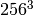
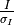

Processing in Detail¶
Introduction¶
DIALS processing may be performed by either running the individual tools (spot
finding, indexing, refinement, integration, exporting to MTZ) or you can run
xia2 -dials, which makes informed choices for you at each stage. In
this tutorial we will run through each of the steps in turn, checking the output
as we go. We will also enforce the correct lattice symmetry.
Tutorial data¶
The following example uses a Thaumatin dataset collected using beamline I04
at Diamond Light Source, which is available for download from  .
.
Import¶
The first stage of step-by-step DIALS processing is to import the data - all that happens here is that the image headers are read, and a file describing their contents (datablock.json) is written.
dials.import data/th_8_2_0*cbf
The output just describes what the software understands of the images it was passed, in this case one sweep of data containing 540 images.
DIALS 1.dev.1268-ge8117dbb
The following parameters have been modified:
input {
datablock = <image files>
}
--------------------------------------------------------------------------------
format: <class 'dxtbx.format.FormatCBFMiniPilatusDLS6MSN100.FormatCBFMiniPilatusDLS6MSN100'>
num images: 540
num sweeps: 1
num stills: 0
--------------------------------------------------------------------------------
Writing datablocks to datablock.json
Find Spots¶
The first “real” task in any processing using DIALS is the spot finding.
Here we request multiple processors to speed this up (nproc=4).
It still takes a little while because we are finding spots on every image in the
dataset. This reflects the modular philosophy of the DIALS toolkit and will
enable us to do global refinement later on.
dials.find_spots datablock.json nproc=4
DIALS 1.dev.1268-ge8117dbb
The following parameters have been modified:
spotfinder {
mp {
nproc = 4
}
}
input {
datablock = datablock.json
}
Setting spotfinder.filter.min_spot_size=3
Configuring spot finder from input parameters
--------------------------------------------------------------------------------
Finding strong spots in imageset 0
--------------------------------------------------------------------------------
Finding spots in image 1 to 540...
Setting chunksize=27
Extracting strong pixels from images
Using multiprocessing with 4 parallel job(s)
Found 1756 strong pixels on image 1
Found 1616 strong pixels on image 2
Found 1655 strong pixels on image 3
Found 1697 strong pixels on image 4
Found 1674 strong pixels on image 5
Found 1571 strong pixels on image 6
Found 1682 strong pixels on image 7
Found 1672 strong pixels on image 8
Found 1668 strong pixels on image 9
Found 1689 strong pixels on image 10
Found 1670 strong pixels on image 11
Found 1653 strong pixels on image 12
Found 1496 strong pixels on image 13
Found 1627 strong pixels on image 14
Found 1660 strong pixels on image 15
Found 1687 strong pixels on image 16
Found 1756 strong pixels on image 17
Found 1810 strong pixels on image 18
Found 1875 strong pixels on image 19
Found 1850 strong pixels on image 20
Found 1802 strong pixels on image 21
Found 1826 strong pixels on image 22
Found 1861 strong pixels on image 23
Found 1833 strong pixels on image 24
Found 1795 strong pixels on image 25
Found 1812 strong pixels on image 26
Found 1826 strong pixels on image 27
Found 1921 strong pixels on image 28
Found 1878 strong pixels on image 29
Found 1935 strong pixels on image 30
Found 1801 strong pixels on image 31
Found 1644 strong pixels on image 32
Found 1631 strong pixels on image 33
Found 1638 strong pixels on image 34
Found 1788 strong pixels on image 35
Found 1627 strong pixels on image 36
Found 1767 strong pixels on image 37
Found 1799 strong pixels on image 38
Found 1724 strong pixels on image 39
Found 1726 strong pixels on image 40
Found 1678 strong pixels on image 41
Found 1659 strong pixels on image 42
Found 1698 strong pixels on image 43
Found 1796 strong pixels on image 44
Found 1903 strong pixels on image 45
Found 1817 strong pixels on image 46
Found 1724 strong pixels on image 47
Found 1749 strong pixels on image 48
Found 1751 strong pixels on image 49
Found 1850 strong pixels on image 50
Found 1926 strong pixels on image 51
Found 1727 strong pixels on image 52
Found 1645 strong pixels on image 53
Found 1713 strong pixels on image 54
Found 1734 strong pixels on image 55
Found 1656 strong pixels on image 56
Found 1662 strong pixels on image 57
Found 1728 strong pixels on image 58
Found 1779 strong pixels on image 59
Found 1872 strong pixels on image 60
Found 1834 strong pixels on image 61
Found 1718 strong pixels on image 62
Found 1652 strong pixels on image 63
Found 1748 strong pixels on image 64
Found 1727 strong pixels on image 65
Found 1890 strong pixels on image 66
Found 1892 strong pixels on image 67
Found 1913 strong pixels on image 68
Found 1858 strong pixels on image 69
Found 1875 strong pixels on image 70
Found 1812 strong pixels on image 71
Found 1746 strong pixels on image 72
Found 1780 strong pixels on image 73
Found 1923 strong pixels on image 74
Found 1751 strong pixels on image 75
Found 1785 strong pixels on image 76
Found 1634 strong pixels on image 77
Found 1668 strong pixels on image 78
Found 1683 strong pixels on image 79
Found 1647 strong pixels on image 80
Found 1747 strong pixels on image 81
Found 1821 strong pixels on image 82
Found 1802 strong pixels on image 83
Found 1868 strong pixels on image 84
Found 1928 strong pixels on image 85
Found 1939 strong pixels on image 86
Found 1952 strong pixels on image 87
Found 1878 strong pixels on image 88
Found 1741 strong pixels on image 89
Found 1754 strong pixels on image 90
Found 1722 strong pixels on image 91
Found 1569 strong pixels on image 92
Found 1634 strong pixels on image 93
Found 1653 strong pixels on image 94
Found 1828 strong pixels on image 95
Found 1862 strong pixels on image 96
Found 1816 strong pixels on image 97
Found 1883 strong pixels on image 98
Found 1956 strong pixels on image 99
Found 1960 strong pixels on image 100
Found 1868 strong pixels on image 101
Found 1818 strong pixels on image 102
Found 1713 strong pixels on image 103
Found 1682 strong pixels on image 104
Found 1745 strong pixels on image 105
Found 1802 strong pixels on image 106
Found 1868 strong pixels on image 107
Found 1756 strong pixels on image 108
Found 1689 strong pixels on image 109
Found 1773 strong pixels on image 110
Found 1829 strong pixels on image 111
Found 1893 strong pixels on image 112
Found 1854 strong pixels on image 113
Found 1826 strong pixels on image 114
Found 1874 strong pixels on image 115
Found 1805 strong pixels on image 116
Found 1836 strong pixels on image 117
Found 1884 strong pixels on image 118
Found 1870 strong pixels on image 119
Found 1821 strong pixels on image 120
Found 1685 strong pixels on image 121
Found 1786 strong pixels on image 122
Found 1808 strong pixels on image 123
Found 1768 strong pixels on image 124
Found 1803 strong pixels on image 125
Found 1705 strong pixels on image 126
Found 1640 strong pixels on image 127
Found 1862 strong pixels on image 128
Found 1828 strong pixels on image 129
Found 1660 strong pixels on image 130
Found 1869 strong pixels on image 131
Found 1849 strong pixels on image 132
Found 1800 strong pixels on image 133
Found 1783 strong pixels on image 134
Found 1744 strong pixels on image 135
Found 1706 strong pixels on image 136
Found 1876 strong pixels on image 137
Found 1868 strong pixels on image 138
Found 1809 strong pixels on image 139
Found 1796 strong pixels on image 140
Found 1812 strong pixels on image 141
Found 1746 strong pixels on image 142
Found 1717 strong pixels on image 143
Found 1806 strong pixels on image 144
Found 1682 strong pixels on image 145
Found 1793 strong pixels on image 146
Found 1751 strong pixels on image 147
Found 1869 strong pixels on image 148
Found 1812 strong pixels on image 149
Found 1849 strong pixels on image 150
Found 1943 strong pixels on image 151
Found 1913 strong pixels on image 152
Found 1894 strong pixels on image 153
Found 1847 strong pixels on image 154
Found 1891 strong pixels on image 155
Found 1784 strong pixels on image 156
Found 1793 strong pixels on image 157
Found 1930 strong pixels on image 158
Found 1893 strong pixels on image 159
Found 1853 strong pixels on image 160
Found 1890 strong pixels on image 161
Found 1926 strong pixels on image 162
Found 1981 strong pixels on image 163
Found 1800 strong pixels on image 164
Found 1873 strong pixels on image 165
Found 1886 strong pixels on image 166
Found 1921 strong pixels on image 167
Found 1900 strong pixels on image 168
Found 1782 strong pixels on image 169
Found 1852 strong pixels on image 170
Found 1863 strong pixels on image 171
Found 1857 strong pixels on image 172
Found 1957 strong pixels on image 173
Found 1915 strong pixels on image 174
Found 1805 strong pixels on image 175
Found 1765 strong pixels on image 176
Found 1854 strong pixels on image 177
Found 1791 strong pixels on image 178
Found 1829 strong pixels on image 179
Found 1780 strong pixels on image 180
Found 1788 strong pixels on image 181
Found 1823 strong pixels on image 182
Found 1977 strong pixels on image 183
Found 1798 strong pixels on image 184
Found 1796 strong pixels on image 185
Found 1830 strong pixels on image 186
Found 1844 strong pixels on image 187
Found 1803 strong pixels on image 188
Found 1847 strong pixels on image 189
Found 1815 strong pixels on image 190
Found 1804 strong pixels on image 191
Found 1798 strong pixels on image 192
Found 1778 strong pixels on image 193
Found 1855 strong pixels on image 194
Found 1753 strong pixels on image 195
Found 1863 strong pixels on image 196
Found 1847 strong pixels on image 197
Found 1852 strong pixels on image 198
Found 1748 strong pixels on image 199
Found 1769 strong pixels on image 200
Found 1762 strong pixels on image 201
Found 1845 strong pixels on image 202
Found 1888 strong pixels on image 203
Found 1834 strong pixels on image 204
Found 1808 strong pixels on image 205
Found 1825 strong pixels on image 206
Found 1931 strong pixels on image 207
Found 1791 strong pixels on image 208
Found 1812 strong pixels on image 209
Found 1772 strong pixels on image 210
Found 1761 strong pixels on image 211
Found 1799 strong pixels on image 212
Found 1837 strong pixels on image 213
Found 1845 strong pixels on image 214
Found 1804 strong pixels on image 215
Found 1784 strong pixels on image 216
Found 1741 strong pixels on image 217
Found 1780 strong pixels on image 218
Found 1705 strong pixels on image 219
Found 1838 strong pixels on image 220
Found 1778 strong pixels on image 221
Found 1773 strong pixels on image 222
Found 1758 strong pixels on image 223
Found 1800 strong pixels on image 224
Found 1877 strong pixels on image 225
Found 1796 strong pixels on image 226
Found 1867 strong pixels on image 227
Found 1888 strong pixels on image 228
Found 1813 strong pixels on image 229
Found 1682 strong pixels on image 230
Found 1761 strong pixels on image 231
Found 1729 strong pixels on image 232
Found 1698 strong pixels on image 233
Found 1657 strong pixels on image 234
Found 1583 strong pixels on image 235
Found 1747 strong pixels on image 236
Found 1752 strong pixels on image 237
Found 1816 strong pixels on image 238
Found 1733 strong pixels on image 239
Found 1765 strong pixels on image 240
Found 1764 strong pixels on image 241
Found 1784 strong pixels on image 242
Found 1714 strong pixels on image 243
Found 1866 strong pixels on image 244
Found 1739 strong pixels on image 245
Found 1770 strong pixels on image 246
Found 1782 strong pixels on image 247
Found 1888 strong pixels on image 248
Found 1793 strong pixels on image 249
Found 1760 strong pixels on image 250
Found 1670 strong pixels on image 251
Found 1697 strong pixels on image 252
Found 1769 strong pixels on image 253
Found 1829 strong pixels on image 254
Found 1811 strong pixels on image 255
Found 1748 strong pixels on image 256
Found 1716 strong pixels on image 257
Found 1617 strong pixels on image 258
Found 1622 strong pixels on image 259
Found 1721 strong pixels on image 260
Found 1812 strong pixels on image 261
Found 1831 strong pixels on image 262
Found 1830 strong pixels on image 263
Found 1719 strong pixels on image 264
Found 1719 strong pixels on image 265
Found 1642 strong pixels on image 266
Found 1707 strong pixels on image 267
Found 1751 strong pixels on image 268
Found 1701 strong pixels on image 269
Found 1698 strong pixels on image 270
Found 1599 strong pixels on image 271
Found 1608 strong pixels on image 272
Found 1640 strong pixels on image 273
Found 1715 strong pixels on image 274
Found 1841 strong pixels on image 275
Found 1942 strong pixels on image 276
Found 1828 strong pixels on image 277
Found 1736 strong pixels on image 278
Found 1697 strong pixels on image 279
Found 1684 strong pixels on image 280
Found 1766 strong pixels on image 281
Found 1778 strong pixels on image 282
Found 1716 strong pixels on image 283
Found 1812 strong pixels on image 284
Found 1738 strong pixels on image 285
Found 1831 strong pixels on image 286
Found 1846 strong pixels on image 287
Found 1740 strong pixels on image 288
Found 1709 strong pixels on image 289
Found 1781 strong pixels on image 290
Found 1698 strong pixels on image 291
Found 1681 strong pixels on image 292
Found 1757 strong pixels on image 293
Found 1642 strong pixels on image 294
Found 1783 strong pixels on image 295
Found 1764 strong pixels on image 296
Found 1681 strong pixels on image 297
Found 1604 strong pixels on image 298
Found 1696 strong pixels on image 299
Found 1888 strong pixels on image 300
Found 1858 strong pixels on image 301
Found 1805 strong pixels on image 302
Found 1736 strong pixels on image 303
Found 1721 strong pixels on image 304
Found 1752 strong pixels on image 305
Found 1644 strong pixels on image 306
Found 1757 strong pixels on image 307
Found 1777 strong pixels on image 308
Found 1710 strong pixels on image 309
Found 1594 strong pixels on image 310
Found 1665 strong pixels on image 311
Found 1648 strong pixels on image 312
Found 1691 strong pixels on image 313
Found 1752 strong pixels on image 314
Found 1695 strong pixels on image 315
Found 1666 strong pixels on image 316
Found 1608 strong pixels on image 317
Found 1726 strong pixels on image 318
Found 1763 strong pixels on image 319
Found 1722 strong pixels on image 320
Found 1656 strong pixels on image 321
Found 1721 strong pixels on image 322
Found 1702 strong pixels on image 323
Found 1631 strong pixels on image 324
Found 1801 strong pixels on image 325
Found 1785 strong pixels on image 326
Found 1649 strong pixels on image 327
Found 1671 strong pixels on image 328
Found 1750 strong pixels on image 329
Found 1607 strong pixels on image 330
Found 1692 strong pixels on image 331
Found 1643 strong pixels on image 332
Found 1606 strong pixels on image 333
Found 1627 strong pixels on image 334
Found 1599 strong pixels on image 335
Found 1637 strong pixels on image 336
Found 1748 strong pixels on image 337
Found 1715 strong pixels on image 338
Found 1742 strong pixels on image 339
Found 1646 strong pixels on image 340
Found 1756 strong pixels on image 341
Found 1623 strong pixels on image 342
Found 1604 strong pixels on image 343
Found 1615 strong pixels on image 344
Found 1672 strong pixels on image 345
Found 1605 strong pixels on image 346
Found 1639 strong pixels on image 347
Found 1605 strong pixels on image 348
Found 1745 strong pixels on image 349
Found 1865 strong pixels on image 350
Found 1776 strong pixels on image 351
Found 1660 strong pixels on image 352
Found 1673 strong pixels on image 353
Found 1653 strong pixels on image 354
Found 1574 strong pixels on image 355
Found 1637 strong pixels on image 356
Found 1637 strong pixels on image 357
Found 1667 strong pixels on image 358
Found 1613 strong pixels on image 359
Found 1614 strong pixels on image 360
Found 1653 strong pixels on image 361
Found 1676 strong pixels on image 362
Found 1690 strong pixels on image 363
Found 1720 strong pixels on image 364
Found 1665 strong pixels on image 365
Found 1743 strong pixels on image 366
Found 1787 strong pixels on image 367
Found 1733 strong pixels on image 368
Found 1737 strong pixels on image 369
Found 1829 strong pixels on image 370
Found 1523 strong pixels on image 371
Found 1533 strong pixels on image 372
Found 1566 strong pixels on image 373
Found 1630 strong pixels on image 374
Found 1714 strong pixels on image 375
Found 1517 strong pixels on image 376
Found 1611 strong pixels on image 377
Found 1672 strong pixels on image 378
Found 1649 strong pixels on image 379
Found 1577 strong pixels on image 380
Found 1521 strong pixels on image 381
Found 1514 strong pixels on image 382
Found 1532 strong pixels on image 383
Found 1514 strong pixels on image 384
Found 1662 strong pixels on image 385
Found 1801 strong pixels on image 386
Found 1611 strong pixels on image 387
Found 1671 strong pixels on image 388
Found 1816 strong pixels on image 389
Found 1781 strong pixels on image 390
Found 1817 strong pixels on image 391
Found 1741 strong pixels on image 392
Found 1823 strong pixels on image 393
Found 1668 strong pixels on image 394
Found 1577 strong pixels on image 395
Found 1672 strong pixels on image 396
Found 1679 strong pixels on image 397
Found 1637 strong pixels on image 398
Found 1579 strong pixels on image 399
Found 1627 strong pixels on image 400
Found 1519 strong pixels on image 401
Found 1494 strong pixels on image 402
Found 1562 strong pixels on image 403
Found 1617 strong pixels on image 404
Found 1508 strong pixels on image 405
Found 1601 strong pixels on image 406
Found 1703 strong pixels on image 407
Found 1665 strong pixels on image 408
Found 1518 strong pixels on image 409
Found 1622 strong pixels on image 410
Found 1580 strong pixels on image 411
Found 1662 strong pixels on image 412
Found 1569 strong pixels on image 413
Found 1544 strong pixels on image 414
Found 1605 strong pixels on image 415
Found 1719 strong pixels on image 416
Found 1641 strong pixels on image 417
Found 1626 strong pixels on image 418
Found 1595 strong pixels on image 419
Found 1667 strong pixels on image 420
Found 1744 strong pixels on image 421
Found 1611 strong pixels on image 422
Found 1608 strong pixels on image 423
Found 1420 strong pixels on image 424
Found 1465 strong pixels on image 425
Found 1474 strong pixels on image 426
Found 1569 strong pixels on image 427
Found 1570 strong pixels on image 428
Found 1449 strong pixels on image 429
Found 1466 strong pixels on image 430
Found 1543 strong pixels on image 431
Found 1516 strong pixels on image 432
Found 1550 strong pixels on image 433
Found 1555 strong pixels on image 434
Found 1611 strong pixels on image 435
Found 1556 strong pixels on image 436
Found 1542 strong pixels on image 437
Found 1502 strong pixels on image 438
Found 1450 strong pixels on image 439
Found 1582 strong pixels on image 440
Found 1555 strong pixels on image 441
Found 1657 strong pixels on image 442
Found 1492 strong pixels on image 443
Found 1513 strong pixels on image 444
Found 1605 strong pixels on image 445
Found 1513 strong pixels on image 446
Found 1484 strong pixels on image 447
Found 1512 strong pixels on image 448
Found 1563 strong pixels on image 449
Found 1435 strong pixels on image 450
Found 1565 strong pixels on image 451
Found 1721 strong pixels on image 452
Found 1558 strong pixels on image 453
Found 1487 strong pixels on image 454
Found 1508 strong pixels on image 455
Found 1548 strong pixels on image 456
Found 1492 strong pixels on image 457
Found 1669 strong pixels on image 458
Found 1539 strong pixels on image 459
Found 1621 strong pixels on image 460
Found 1653 strong pixels on image 461
Found 1672 strong pixels on image 462
Found 1681 strong pixels on image 463
Found 1701 strong pixels on image 464
Found 1572 strong pixels on image 465
Found 1557 strong pixels on image 466
Found 1455 strong pixels on image 467
Found 1525 strong pixels on image 468
Found 1653 strong pixels on image 469
Found 1559 strong pixels on image 470
Found 1602 strong pixels on image 471
Found 1559 strong pixels on image 472
Found 1553 strong pixels on image 473
Found 1564 strong pixels on image 474
Found 1533 strong pixels on image 475
Found 1529 strong pixels on image 476
Found 1631 strong pixels on image 477
Found 1638 strong pixels on image 478
Found 1485 strong pixels on image 479
Found 1463 strong pixels on image 480
Found 1601 strong pixels on image 481
Found 1510 strong pixels on image 482
Found 1529 strong pixels on image 483
Found 1687 strong pixels on image 484
Found 1582 strong pixels on image 485
Found 1614 strong pixels on image 486
Found 1662 strong pixels on image 487
Found 1659 strong pixels on image 488
Found 1517 strong pixels on image 489
Found 1634 strong pixels on image 490
Found 1605 strong pixels on image 491
Found 1575 strong pixels on image 492
Found 1578 strong pixels on image 493
Found 1622 strong pixels on image 494
Found 1642 strong pixels on image 495
Found 1616 strong pixels on image 496
Found 1644 strong pixels on image 497
Found 1618 strong pixels on image 498
Found 1575 strong pixels on image 499
Found 1595 strong pixels on image 500
Found 1695 strong pixels on image 501
Found 1683 strong pixels on image 502
Found 1520 strong pixels on image 503
Found 1591 strong pixels on image 504
Found 1662 strong pixels on image 505
Found 1657 strong pixels on image 506
Found 1617 strong pixels on image 507
Found 1648 strong pixels on image 508
Found 1617 strong pixels on image 509
Found 1538 strong pixels on image 510
Found 1544 strong pixels on image 511
Found 1572 strong pixels on image 512
Found 1547 strong pixels on image 513
Found 1617 strong pixels on image 514
Found 1605 strong pixels on image 515
Found 1675 strong pixels on image 516
Found 1521 strong pixels on image 517
Found 1533 strong pixels on image 518
Found 1520 strong pixels on image 519
Found 1564 strong pixels on image 520
Found 1458 strong pixels on image 521
Found 1422 strong pixels on image 522
Found 1474 strong pixels on image 523
Found 1632 strong pixels on image 524
Found 1513 strong pixels on image 525
Found 1607 strong pixels on image 526
Found 1482 strong pixels on image 527
Found 1524 strong pixels on image 528
Found 1536 strong pixels on image 529
Found 1545 strong pixels on image 530
Found 1576 strong pixels on image 531
Found 1551 strong pixels on image 532
Found 1605 strong pixels on image 533
Found 1537 strong pixels on image 534
Found 1627 strong pixels on image 535
Found 1521 strong pixels on image 536
Found 1503 strong pixels on image 537
Found 1539 strong pixels on image 538
Found 1431 strong pixels on image 539
Found 1541 strong pixels on image 540
Extracted 219125 spots
Removed 102804 spots with size < 3 pixels
Removed 81 spots with size > 100 pixels
Calculated 116240 spot centroids
Calculated 116240 spot intensities
Filtered 116048 of 116240 spots by peak-centroid distance
Histogram of per-image spot count for imageset 0:
116048 spots found on 540 images (max 2074 / bin)
* * * * * * * ** * *
************************************************************
************************************************************
************************************************************
************************************************************
************************************************************
************************************************************
************************************************************
************************************************************
************************************************************
1 image 540
--------------------------------------------------------------------------------
Saved 116048 reflections to strong.pickle
Time Taken: 31.193208
The default parameters for dials.find_spots usually do a good job for Pilatus images, such as these. However they may not be optimal for data from other detector types, such as CCDs or image plates. Issues with incorrectly set gain or sigma thresholds might lead to far too many spots being extracted (for example). It is always worth inspecting the images with dials.image_viewer, especially if you are having issues with spot finding:
dials.image_viewer datablock.json
Viewing the various images from ‘image’ to ‘threshold’ gives an idea of how the various parameters affect the spot finding algorithm. The final image, ‘threshold’ is the one on which spots are found, so ensuring this produces peaks at real diffraction spot positions will give the best chance of success.
Having found strong spots it is worth checking the image viewer again:
dials.image_viewer datablock.json strong.pickle
The dials.image_viewer tool is not as fast as viewers such as ADXV, however it does integrate well with DIALS data files. Information about the beam centre, spot centroids, reflection shoeboxes and other data stored in the pickle files created by DIALS programs can be overlaid on the diffraction images. You may need to adjust the colour scheme and brightness to get the best out of it. A brightness of 20 with the ‘invert’ colour scheme works well with this data. Move forward a few images to find a spot whose complete rocking curve is recorded. The highest valued pixel in that three dimensional spot is marked with a pink dot. The spot centre of mass is shown by a red cross. This is usually close to the peak pixel, but slightly offset as the centroid algorithm allows calculation of the spot centre at a better precision than the pixel size and image angular ‘width’. The strong pixels marked as being part of the peak are highlighted with a green dot. The reflection shoebox you see with a blue border is the smallest three dimensional box that can contain the continuous peak region, that is, there is no background border region displayed here.

Another very powerful tool for investigating problems with strong spot positions is dials.reciprocal_lattice_viewer. This displays the strong spots in 3D, after mapping them from their detector positions to reciprocal space. In a favourable case like this you should be able to see the crystal’s reciprocal lattice by eye in the strong spot positions. Some practice may be needed in rotating the lattice to an orientation that shows off the periodicity in reciprocal lattice positions:
dials.reciprocal_lattice_viewer datablock.json strong.pickle

Indexing¶
The next step will be indexing of the strong spots by
dials.index, which by default uses a
3D FFT algorithm, although the 1D FFT algorithm can be selected using the
parameter indexing.method=fft1d. We will pass in all the strong
spots found in the dataset - so no need to select subsets of images widely
separated in  .
.
dials.index datablock.json strong.pickle
If known, the space group and unit cell can be
provided at this stage using the space_group and unit_cell
parameters, otherwise indexing and refinement will be carried out in the
primitive lattice using space group P1.
DIALS 1.dev.1268-ge8117dbb
The following parameters have been modified:
input {
datablock = datablock.json
reflections = strong.pickle
}
Found max_cell: 198.8 Angstrom
Setting d_min: 3.88
FFT gridding: (256,256,256)
Number of centroids used: 13333
Using d_min_step 0.7
################################################################################
Starting refinement (macro-cycle 1)
################################################################################
Detecting centroid outliers using the Tukey algorithm
636 reflections have been flagged as outliers
Refinement steps:
------------------------------------------------
| Step | Nref | RMSD_X | RMSD_Y | RMSD_Phi |
| | | (mm) | (mm) | (deg) |
------------------------------------------------
| 0 | 8099 | 0.27432 | 0.18839 | 0.16927 |
| 1 | 8099 | 0.039468 | 0.044657 | 0.055916 |
| 2 | 8099 | 0.038444 | 0.043412 | 0.040019 |
| 3 | 8099 | 0.036744 | 0.040582 | 0.028463 |
| 4 | 8099 | 0.035489 | 0.037514 | 0.020034 |
| 5 | 8099 | 0.034301 | 0.035401 | 0.016265 |
| 6 | 8099 | 0.032674 | 0.033499 | 0.015638 |
| 7 | 8099 | 0.0316 | 0.032363 | 0.015596 |
| 8 | 8099 | 0.031388 | 0.032193 | 0.015594 |
| 9 | 8099 | 0.031373 | 0.032195 | 0.015595 |
| 10 | 8099 | 0.031372 | 0.032195 | 0.015595 |
------------------------------------------------
RMSD no longer decreasing
RMSDs by experiment:
---------------------------------------------
| Exp | Nref | RMSD_X | RMSD_Y | RMSD_Z |
| id | | (px) | (px) | (images) |
---------------------------------------------
| 0 | 8099 | 0.18239 | 0.18718 | 0.10397 |
---------------------------------------------
Refined crystal models:
model 1 (13184 reflections):
Crystal:
Unit cell: (57.776, 57.803, 150.015, 89.985, 90.008, 89.990)
Space group: P 1
U matrix: {{ 0.2589, -0.3455, 0.9020},
{-0.3911, -0.8914, -0.2292},
{ 0.8832, -0.2934, -0.3659}}
B matrix: {{ 0.0173, 0.0000, 0.0000},
{-0.0000, 0.0173, 0.0000},
{ 0.0000, -0.0000, 0.0067}}
A = UB: {{ 0.0045, -0.0060, 0.0060},
{-0.0068, -0.0154, -0.0015},
{ 0.0153, -0.0051, -0.0024}}
------------------------------------
| Imageset | #indexed | #unindexed |
------------------------------------
| 0 | 13184 | 123 |
------------------------------------
Increasing resolution to 3.23 Angstrom
################################################################################
Starting refinement (macro-cycle 2)
################################################################################
Detecting centroid outliers using the Tukey algorithm
819 reflections have been flagged as outliers
Refinement steps:
------------------------------------------------
| Step | Nref | RMSD_X | RMSD_Y | RMSD_Phi |
| | | (mm) | (mm) | (deg) |
------------------------------------------------
| 0 | 8099 | 0.036262 | 0.031073 | 0.01407 |
| 1 | 8099 | 0.034759 | 0.030341 | 0.014127 |
| 2 | 8099 | 0.034733 | 0.030175 | 0.014039 |
| 3 | 8099 | 0.034704 | 0.030009 | 0.013977 |
| 4 | 8099 | 0.034658 | 0.029921 | 0.013936 |
| 5 | 8099 | 0.034585 | 0.029851 | 0.013916 |
| 6 | 8099 | 0.034512 | 0.02976 | 0.013911 |
| 7 | 8099 | 0.034481 | 0.029688 | 0.013903 |
| 8 | 8099 | 0.034481 | 0.029666 | 0.0139 |
| 9 | 8099 | 0.034483 | 0.029663 | 0.013899 |
| 10 | 8099 | 0.034484 | 0.029663 | 0.013899 |
------------------------------------------------
RMSD no longer decreasing
RMSDs by experiment:
---------------------------------------------
| Exp | Nref | RMSD_X | RMSD_Y | RMSD_Z |
| id | | (px) | (px) | (images) |
---------------------------------------------
| 0 | 8099 | 0.20049 | 0.17246 | 0.092662 |
---------------------------------------------
Refined crystal models:
model 1 (23362 reflections):
Crystal:
Unit cell: (57.776, 57.807, 150.030, 89.989, 90.014, 89.989)
Space group: P 1
U matrix: {{ 0.2589, -0.3456, 0.9020},
{-0.3911, -0.8913, -0.2292},
{ 0.8832, -0.2934, -0.3659}}
B matrix: {{ 0.0173, 0.0000, 0.0000},
{-0.0000, 0.0173, 0.0000},
{ 0.0000, -0.0000, 0.0067}}
A = UB: {{ 0.0045, -0.0060, 0.0060},
{-0.0068, -0.0154, -0.0015},
{ 0.0153, -0.0051, -0.0024}}
------------------------------------
| Imageset | #indexed | #unindexed |
------------------------------------
| 0 | 23362 | 214 |
------------------------------------
Increasing resolution to 2.57 Angstrom
################################################################################
Starting refinement (macro-cycle 3)
################################################################################
Detecting centroid outliers using the Tukey algorithm
1913 reflections have been flagged as outliers
Refinement steps:
------------------------------------------------
| Step | Nref | RMSD_X | RMSD_Y | RMSD_Phi |
| | | (mm) | (mm) | (deg) |
------------------------------------------------
| 0 | 8099 | 0.040566 | 0.027792 | 0.014902 |
| 1 | 8099 | 0.038179 | 0.027518 | 0.015067 |
| 2 | 8099 | 0.03816 | 0.027494 | 0.01504 |
| 3 | 8099 | 0.038137 | 0.02746 | 0.01501 |
| 4 | 8099 | 0.038111 | 0.027428 | 0.014995 |
| 5 | 8099 | 0.03807 | 0.02739 | 0.014999 |
| 6 | 8099 | 0.038005 | 0.027357 | 0.015011 |
| 7 | 8099 | 0.03794 | 0.027366 | 0.015028 |
| 8 | 8099 | 0.03791 | 0.027386 | 0.01504 |
| 9 | 8099 | 0.037904 | 0.027392 | 0.015042 |
| 10 | 8099 | 0.037904 | 0.027392 | 0.015043 |
------------------------------------------------
RMSD no longer decreasing
RMSDs by experiment:
---------------------------------------------
| Exp | Nref | RMSD_X | RMSD_Y | RMSD_Z |
| id | | (px) | (px) | (images) |
---------------------------------------------
| 0 | 8099 | 0.22037 | 0.15926 | 0.10028 |
---------------------------------------------
Refined crystal models:
model 1 (43458 reflections):
Crystal:
Unit cell: (57.782, 57.816, 150.031, 89.997, 90.020, 89.989)
Space group: P 1
U matrix: {{ 0.2588, -0.3456, 0.9020},
{-0.3911, -0.8913, -0.2293},
{ 0.8832, -0.2934, -0.3658}}
B matrix: {{ 0.0173, 0.0000, 0.0000},
{-0.0000, 0.0173, 0.0000},
{ 0.0000, -0.0000, 0.0067}}
A = UB: {{ 0.0045, -0.0060, 0.0060},
{-0.0068, -0.0154, -0.0015},
{ 0.0153, -0.0051, -0.0024}}
------------------------------------
| Imageset | #indexed | #unindexed |
------------------------------------
| 0 | 43458 | 285 |
------------------------------------
Increasing resolution to 1.91 Angstrom
################################################################################
Starting refinement (macro-cycle 4)
################################################################################
Detecting centroid outliers using the Tukey algorithm
6956 reflections have been flagged as outliers
Refinement steps:
------------------------------------------------
| Step | Nref | RMSD_X | RMSD_Y | RMSD_Phi |
| | | (mm) | (mm) | (deg) |
------------------------------------------------
| 0 | 8099 | 0.042894 | 0.033836 | 0.01836 |
| 1 | 8099 | 0.041917 | 0.033632 | 0.018278 |
| 2 | 8099 | 0.04189 | 0.033565 | 0.018245 |
| 3 | 8099 | 0.041839 | 0.03339 | 0.018222 |
| 4 | 8099 | 0.041758 | 0.03305 | 0.018203 |
| 5 | 8099 | 0.041726 | 0.032579 | 0.018181 |
| 6 | 8099 | 0.0418 | 0.032151 | 0.018161 |
| 7 | 8099 | 0.041882 | 0.031918 | 0.018156 |
| 8 | 8099 | 0.041915 | 0.031857 | 0.018158 |
| 9 | 8099 | 0.04192 | 0.031849 | 0.018159 |
| 10 | 8099 | 0.04192 | 0.031849 | 0.018159 |
------------------------------------------------
RMSD no longer decreasing
RMSDs by experiment:
---------------------------------------------
| Exp | Nref | RMSD_X | RMSD_Y | RMSD_Z |
| id | | (px) | (px) | (images) |
---------------------------------------------
| 0 | 8099 | 0.24372 | 0.18517 | 0.12106 |
---------------------------------------------
Refined crystal models:
model 1 (89538 reflections):
Crystal:
Unit cell: (57.785, 57.815, 150.040, 89.991, 90.015, 89.989)
Space group: P 1
U matrix: {{ 0.2588, -0.3455, 0.9020},
{-0.3911, -0.8913, -0.2292},
{ 0.8832, -0.2934, -0.3658}}
B matrix: {{ 0.0173, 0.0000, 0.0000},
{-0.0000, 0.0173, 0.0000},
{ 0.0000, -0.0000, 0.0067}}
A = UB: {{ 0.0045, -0.0060, 0.0060},
{-0.0068, -0.0154, -0.0015},
{ 0.0153, -0.0051, -0.0024}}
------------------------------------
| Imageset | #indexed | #unindexed |
------------------------------------
| 0 | 89538 | 685 |
------------------------------------
Increasing resolution to 1.26 Angstrom
################################################################################
Starting refinement (macro-cycle 5)
################################################################################
Detecting centroid outliers using the Tukey algorithm
11889 reflections have been flagged as outliers
Refinement steps:
------------------------------------------------
| Step | Nref | RMSD_X | RMSD_Y | RMSD_Phi |
| | | (mm) | (mm) | (deg) |
------------------------------------------------
| 0 | 8099 | 0.044554 | 0.036855 | 0.020467 |
| 1 | 8099 | 0.044354 | 0.036649 | 0.020428 |
| 2 | 8099 | 0.044317 | 0.036536 | 0.020408 |
| 3 | 8099 | 0.044243 | 0.036361 | 0.020396 |
| 4 | 8099 | 0.044122 | 0.036158 | 0.020401 |
| 5 | 8099 | 0.043991 | 0.035982 | 0.020417 |
| 6 | 8099 | 0.043916 | 0.035896 | 0.020433 |
| 7 | 8099 | 0.043899 | 0.03586 | 0.020442 |
| 8 | 8099 | 0.0439 | 0.035849 | 0.020446 |
| 9 | 8099 | 0.043901 | 0.035847 | 0.020446 |
------------------------------------------------
RMSD no longer decreasing
RMSDs by experiment:
---------------------------------------------
| Exp | Nref | RMSD_X | RMSD_Y | RMSD_Z |
| id | | (px) | (px) | (images) |
---------------------------------------------
| 0 | 8099 | 0.25524 | 0.20841 | 0.13631 |
---------------------------------------------
Refined crystal models:
model 1 (114682 reflections):
Crystal:
Unit cell: (57.783, 57.811, 150.034, 89.990, 90.012, 89.989)
Space group: P 1
U matrix: {{ 0.2588, -0.3455, 0.9020},
{-0.3911, -0.8913, -0.2292},
{ 0.8832, -0.2934, -0.3658}}
B matrix: {{ 0.0173, 0.0000, 0.0000},
{-0.0000, 0.0173, 0.0000},
{ 0.0000, -0.0000, 0.0067}}
A = UB: {{ 0.0045, -0.0060, 0.0060},
{-0.0068, -0.0154, -0.0015},
{ 0.0153, -0.0051, -0.0024}}
------------------------------------
| Imageset | #indexed | #unindexed |
------------------------------------
| 0 | 114682 | 1366 |
------------------------------------
Saving refined experiments to experiments.json
Saving refined reflections to indexed.pickle
It is worth reading through this output to understand what the indexing
program has done. Note that this log is automatically captured in the file
dials.index.log. There is also a somewhat more information written
into dials.index.debug.log, but this is probably only helpful if
something has gone wrong and you are trying to track down why.
Inspecting the log shows that the indexing step is done at fairly low
resolution: Setting d_min: 3.89. The resolution limit of data that can
be used in indexing is determined by the size of the 3D FFT grid and the
likely maximum cell dimension. Here we used the default  grid
points: FFT gridding: (256,256,256). What follows then are macrocycles of
refinement at increasing resolution to bootstrap the indexing solution to as
many of the strong reflections as possible. In each case you can see that
only 8099 reflections are used in the refinement job. The diffraction
geometry is here described by only 16 parameters (6 for the detector, 1 beam
angle, 3 crystal ‘misset’ angles and 6 triclinic cell parameters). The
problem is thus hugely overdetermined. In order to save time, the refinement here
uses a subset of the input reflections, by default using 100 reflections for
every degree of the scan.
Continuing to look through the log, we see that the first macrocyle of
refinement makes a big improvement in the positional RMSDs. Second and
subsequent macrocycles are refined using the same number of reflections, but
after extending to higher resolution. The RMSDs at the start of each cycle
start off worse than at the end of the previous cycle, because the best fit
model for lower resolution data is being applied to higher resolution
reflections. As long as each macrocyle shows a reduction in RMSDs then
refinement is doing its job of extending the applicability of the model out to
a new resolution limit, until eventually the highest resolution strong
spots have been included. The final macrocycle includes data out to 1.26
Angstroms and produces a final model with
RMSDs of 0.044 mm in X, 0.036 mm in Y and 0.021 degrees in ,
corresponding to 0.25 pixels in X, 0.21 pixels in Y and 0.14 image widths in
.
Despite the high quality of this data, we notice from the log that at each macrocycle there were some outliers identified and removed from refinement as resolution increases. Large outliers can dominate refinement using a least squares target, so it is important to be able to remove these. More about this is discussed below in Refinement.
After indexing it can be useful to inspect the reciprocal lattice again:
dials.reciprocal_lattice_viewer experiments.json indexed.pickle
Now indexed/unindexed spots are differentiated by colour, and it is possible to see which spots were marked by dials.refine as outliers. If you have a dataset with multiple lattices present, it may be possible to spot them in the unindexed reflections.
If you want to specify the Bravais lattice for processing (i.e. include the
lattice constraints in the refinement) then you need to either request it at
this stage using space_group=P4 as a command-line option to
dials.index or you can use
dials.refine_bravais_settings,
which will take the results of the P1 autoindexing and run refinement with
all of the possible Bravais settings applied - after which you may select
the preferred solution.
dials.refine_bravais_settings experiments.json indexed.pickle
gives a table containing scoring data and unit cell for each Bravais setting. The scores include the the metric fit (in degrees), RMSDs (in mm), and the best and worse correlation coefficients for data related by symmetry elements implied by the lowest symmetry space group from the Bravais setting. This uses the raw spot intensity measurement from the spot-finding procedure (uncorrected and unscaled) but provides a very useful check to see if the data does appear to adhere to the proposed symmetry operators.
DIALS 1.dev.1268-ge8117dbb
The following parameters have been modified:
input {
experiments = experiments.json
reflections = indexed.pickle
}
Chiral space groups corresponding to each Bravais lattice:
aP: P1
mP: P2 P21
mC: C2
oP: P222 P2221 P21212 P212121
oC: C2221 C222
tP: P4 P41 P42 P43 P422 P4212 P4122 P41212 P4222 P42212 P4322 P43212
-----------------------------------------------------------------------------------------------------------------
Solution Metric fit rmsd min/max cc #spots lattice unit_cell volume cb_op
-----------------------------------------------------------------------------------------------------------------
* 9 0.0313 0.063 0.800/0.857 8099 tP 57.78 57.78 150.00 90.00 90.00 90.00 500796 a,b,c
* 8 0.0313 0.062 0.800/0.969 8099 oC 81.72 81.73 150.01 90.00 90.00 90.00 1001934 a-b,a+b,c
* 7 0.0274 0.061 0.969/0.969 8099 mC 81.73 81.75 150.03 90.00 90.01 90.00 1002410 a-b,a+b,c
* 6 0.0313 0.061 0.805/0.805 8099 mC 81.74 81.72 150.02 90.00 89.99 90.00 1002051 a+b,-a+b,c
* 5 0.0159 0.060 0.800/0.906 8099 oP 57.77 57.79 150.00 90.00 90.00 90.00 500753 a,b,c
* 4 0.0159 0.060 0.906/0.906 8099 mP 57.80 57.77 150.01 90.00 89.99 90.00 500901 -b,-a,-c
* 3 0.0146 0.060 0.821/0.821 8099 mP 57.77 57.80 150.00 90.00 90.02 90.00 500832 a,b,c
* 2 0.0153 0.061 0.800/0.800 8099 mP 57.77 150.00 57.79 90.00 89.99 90.00 500796 -a,-c,-b
* 1 0.0000 0.060 -/- 8099 aP 57.78 57.80 150.02 89.99 90.01 89.99 501048 a,b,c
-----------------------------------------------------------------------------------------------------------------
* = recommended solution
Saving summary as bravais_summary.json
Saving solution 9 as bravais_setting_9.json
Saving solution 8 as bravais_setting_8.json
Saving solution 7 as bravais_setting_7.json
Saving solution 6 as bravais_setting_6.json
Saving solution 5 as bravais_setting_5.json
Saving solution 4 as bravais_setting_4.json
Saving solution 3 as bravais_setting_3.json
Saving solution 2 as bravais_setting_2.json
Saving solution 1 as bravais_setting_1.json
usr+sys time: 0.93 seconds, ticks: 3350323, micro-seconds/tick: 0.278
wall clock time: 3.74 seconds
In this example we would continue processing (i.e. proceed to the refinement
step, perhaps) with bravais_setting_9.json. Sometimes it may be
necessary to reindex the indexed.pickle file output
by dials.index.
In this case as the change of basis operator to the chosen setting
is the identity operator (a,b,c) this step is not needed. We run it
anyway to demonstrate its use.
dials.reindex indexed.pickle change_of_basis_op=a,b,c
This outputs the file reindexed_reflections.pickle which should be
used as input to downstream programs in place of indexed.pickle.
Refinement¶
The model is already refined during indexing, but we can also add explicit
refinement steps using dials.refine
in here, to use all reflections in refinement rather than a subset and to
fit a scan-varying model of the crystal. There
are many options to refinement. As an
aside, to show all the options up to and including expert_level=1
use this command:
dials.refine -c -e 1
Equivalent command-line options exist for all the main DIALS programs. To refine a static model including the tetragonal constraints we just do:
dials.refine bravais_setting_9.json reindexed_reflections.pickle
This used all reflections in refinement rather than a subset and provided a small reduction in RMSDs. However, the refined model is still static over the whole dataset. We may want to do an additional refinement job to fit a more sophisticated model for the crystal, allowing small misset rotations to occur over the course of the scan. There are usually even small changes to the cell dimensions (typically resulting in a net increase in cell volume) caused by exposure to radiation during data collection. To account for both of these effects we can extend our parameterisation to obtain a smoothed ‘scan-varying’ model for both the crystal orientation and unit cell. This means running a further refinement job starting from the output of the previous job:
dials.refine refined_experiments.json refined.pickle scan_varying=true
DIALS 1.dev.1268-ge8117dbb
The following parameters have been modified:
refinement {
parameterisation {
scan_varying = True
}
}
input {
experiments = refined_experiments.json
reflections = refined.pickle
}
Configuring refiner
Summary statistics for 114451 observations matched to predictions:
--------------------------------------------------------------------------
| | Min | Q1 | Med | Q3 | Max |
--------------------------------------------------------------------------
| Xc - Xo (mm) | -0.5228 | -0.0345 | -0.003085 | 0.03188 | 0.6421 |
| Yc - Yo (mm) | -1.4 | -0.02892 | -8.321e-05 | 0.02954 | 1.25 |
| Phic - Phio (deg) | -1.828 | -0.01502 | -0.0004273 | 0.0144 | 1.895 |
| X weights | 135.2 | 371.8 | 393.6 | 402.7 | 405.6 |
| Y weights | 153.1 | 362.1 | 389.3 | 401.4 | 405.6 |
| Phi weights | 304 | 519.3 | 530.3 | 533.3 | 533.3 |
--------------------------------------------------------------------------
Detecting centroid outliers using the MCD algorithm
11975 reflections have been flagged as outliers
Summary statistics for 102476 observations matched to predictions:
---------------------------------------------------------------------------
| | Min | Q1 | Med | Q3 | Max |
---------------------------------------------------------------------------
| Xc - Xo (mm) | -0.1638 | -0.03293 | -0.002643 | 0.03051 | 0.1441 |
| Yc - Yo (mm) | -0.1423 | -0.02642 | 5.832e-05 | 0.02726 | 0.124 |
| Phic - Phio (deg) | -0.08124 | -0.01297 | 1.473e-05 | 0.01352 | 0.06885 |
| X weights | 135.2 | 377.9 | 395.3 | 403 | 405.6 |
| Y weights | 153.1 | 369.9 | 391.8 | 401.9 | 405.6 |
| Phi weights | 318.9 | 519.2 | 529.8 | 533.3 | 533.3 |
---------------------------------------------------------------------------
Performing refinement of a single Experiment...
Refinement steps:
--------------------------------------------------
| Step | Nref | RMSD_X | RMSD_Y | RMSD_Phi |
| | | (mm) | (mm) | (deg) |
--------------------------------------------------
| 0 | 102476 | 0.045247 | 0.03994 | 0.020435 |
| 1 | 102476 | 0.044871 | 0.037601 | 0.020388 |
| 2 | 102476 | 0.044875 | 0.037554 | 0.020373 |
| 3 | 102476 | 0.044883 | 0.037516 | 0.020297 |
| 4 | 102476 | 0.044895 | 0.037488 | 0.020117 |
| 5 | 102476 | 0.044903 | 0.037476 | 0.019897 |
| 6 | 102476 | 0.044905 | 0.037474 | 0.019796 |
| 7 | 102476 | 0.044906 | 0.037474 | 0.019785 |
| 8 | 102476 | 0.044905 | 0.037474 | 0.019784 |
--------------------------------------------------
RMSD no longer decreasing
RMSDs by experiment:
-----------------------------------------------
| Exp | Nref | RMSD_X | RMSD_Y | RMSD_Z |
| id | | (px) | (px) | (images) |
-----------------------------------------------
| 0 | 102476 | 0.26108 | 0.21787 | 0.13189 |
-----------------------------------------------
Final refined crystal model:
Crystal:
Unit cell: (57.783, 57.783, 150.001, 90.000, 90.000, 90.000)
Space group: P 4
U matrix: {{ 0.2590, -0.3455, 0.9020},
{-0.3911, -0.8914, -0.2291},
{ 0.8831, -0.2935, -0.3660}}
B matrix: {{ 0.0173, 0.0000, 0.0000},
{ 0.0000, 0.0173, 0.0000},
{-0.0000, -0.0000, 0.0067}}
A = UB: {{ 0.0045, -0.0060, 0.0060},
{-0.0068, -0.0154, -0.0015},
{ 0.0153, -0.0051, -0.0024}}
A sampled at 541 scan points
Saving refined experiments to refined_experiments.json
Updating predictions for indexed reflections
Saving reflections with updated predictions to refined.pickle
Total time taken: 19.05s
In this case we didn’t alter the default choices that affect scan-varying
refinement, the most important of which is the number of intervals into which
the full scan is divided. This determines the number of samples that will be
used by the Gaussian smoother. More samples allows sharper changes to the model,
but overdoing this will lead to unphysical changes to the model that are just
fitting noise in the data. Figuring out the optimum number of points to use
is challenging. Here we are happy with the default interval width of 36 degrees
(this is a parameter at expert_level=1).
To view the smoothly varying crystal cell parameters use the following command:
dials.plot_scan_varying_crystal refined_experiments.json
This program creates a directory scan-varying_crystal containing
plots orientation.png and unit_cell.png. The latter of these
is useful to check that changes to the cell during processing appear reasonable.

We see an overall increase in all three cell parameters, however the greatest change, in lengths a and b, is only about 0.02 Angstroms. If significant cell volume increases had been observed that might be indicative of radiation damage. However we can’t yet conclude that there is no radiation damage from the lack of considerable change observed. We can at least see from this and the low final refined RMSDs that this is a very well-behaved dataset.
Integration¶
After the refinement is done the next step is integration, which is performed by the program dials.integrate. Mostly, the default parameters are fine for Pilatus data, which will perform XDS-like 3D profile fitting while using a generalized linear model in order to fit a Poisson-distributed background model. We will also increase the number of processors used to speed the job up.
dials.integrate refined_experiments.json refined.pickle nproc=4
DIALS 1.dev.1268-ge8117dbb
The following parameters have been modified:
integration {
mp {
nproc = 4
}
}
input {
experiments = refined_experiments.json
reflections = refined.pickle
}
================================================================================
Initialising
Processing reference reflections
read 116048 strong spots
removing 1366 unindexed reflections
removing 11975 reflections marked as centroid outliers
using 102707 indexed reflections
found 13341 junk reflections
time taken: 0.0294421
================================================================================
Predicting reflections
Prediction type: scan varying prediction
Predicted 374143 reflections
Matching reference spots with predicted reflections
102707 observed reflections input
374143 reflections predicted
102681 reflections matched
102680 reflections accepted
********************************************************************************
Warning: 27 reference spots were not matched to predictions
********************************************************************************
Calculating E.S.D Beam Divergence.
Calculating E.S.D Reflecting Range.
sigma b: 0.021837 degrees
sigma m: 0.067607 degrees
================================================================================
Processing reflections
Processing the following experiments:
Experiments: 1
Beams: 1
Detectors: 1
Goniometers: 1
Scans: 1
Crystals: 1
Imagesets: 1
================================================================================
Modelling reflection profiles
Split 1149 reflections overlapping job boundaries
Processing reflections in the following blocks of images:
block_size: 38 frames
--------------------------------------------------------------------------
# | Group | Frame From | Frame To | Angle From | Angle To | # Reflections
--------------------------------------------------------------------------
0 | 0 | 0 | 38 | 82.0 | 87.7 | 5297
1 | 0 | 19 | 57 | 84.85 | 90.55 | 3489
2 | 0 | 38 | 76 | 87.7 | 93.4 | 3560
3 | 0 | 57 | 95 | 90.55 | 96.25 | 3555
4 | 0 | 76 | 114 | 93.4 | 99.1 | 3557
5 | 0 | 95 | 133 | 96.25 | 101.95 | 3522
6 | 0 | 114 | 152 | 99.1 | 104.8 | 3508
7 | 0 | 133 | 171 | 101.95 | 107.65 | 3503
8 | 0 | 152 | 190 | 104.8 | 110.5 | 3526
9 | 0 | 171 | 209 | 107.65 | 113.35 | 3524
10 | 0 | 190 | 228 | 110.5 | 116.2 | 3536
11 | 0 | 209 | 247 | 113.35 | 119.05 | 3478
12 | 0 | 228 | 266 | 116.2 | 121.9 | 3584
13 | 0 | 247 | 285 | 119.05 | 124.75 | 3522
14 | 0 | 266 | 304 | 121.9 | 127.6 | 3681
15 | 0 | 285 | 323 | 124.75 | 130.45 | 3700
16 | 0 | 304 | 342 | 127.6 | 133.3 | 3704
17 | 0 | 323 | 361 | 130.45 | 136.15 | 3695
18 | 0 | 342 | 380 | 133.3 | 139.0 | 3693
19 | 0 | 361 | 399 | 136.15 | 141.85 | 3688
20 | 0 | 380 | 418 | 139.0 | 144.7 | 3728
21 | 0 | 399 | 437 | 141.85 | 147.55 | 3909
22 | 0 | 418 | 456 | 144.7 | 150.4 | 3717
23 | 0 | 437 | 475 | 147.55 | 153.25 | 3832
24 | 0 | 456 | 494 | 150.4 | 156.1 | 3724
25 | 0 | 475 | 513 | 153.25 | 158.95 | 3797
26 | 0 | 494 | 532 | 156.1 | 161.8 | 3150
27 | 0 | 513 | 540 | 158.95 | 163.0 | 3966
--------------------------------------------------------------------------
Using multiprocessing with 4 parallel job(s) and 1 thread(s) per job
Beginning modelling job 0
Frames: 0 -> 38
Number of reflections
Partial: 331
Full: 4966
In ice ring: 0
Total: 5297
The following histogram shows the number of reflections predicted
to have all or part of their intensity on each frame.
0 [512 ]: *********************************
1 [724 ]: ***********************************************
2 [857 ]: *******************************************************
3 [892 ]: *********************************************************
4 [893 ]: **********************************************************
5 [879 ]: *********************************************************
6 [867 ]: ********************************************************
7 [878 ]: *********************************************************
8 [913 ]: ***********************************************************
9 [912 ]: ***********************************************************
10 [931 ]: ************************************************************
11 [928 ]: ************************************************************
12 [894 ]: **********************************************************
13 [897 ]: **********************************************************
14 [934 ]: ************************************************************
15 [951 ]: *************************************************************
16 [995 ]: ****************************************************************
17 [1005]: *****************************************************************
18 [1019]: ******************************************************************
19 [1046]: ********************************************************************
20 [1034]: *******************************************************************
21 [1014]: *****************************************************************
22 [992 ]: ****************************************************************
23 [1010]: *****************************************************************
24 [993 ]: ****************************************************************
25 [985 ]: ****************************************************************
26 [920 ]: ***********************************************************
27 [742 ]: ************************************************
28 [544 ]: ***********************************
29 [384 ]: ************************
30 [175 ]: ***********
31 [89 ]: *****
32 [59 ]: ***
33 [43 ]: **
34 [29 ]: *
35 [23 ]: *
36 [21 ]: *
37 [19 ]: *
Memory usage:
Total system memory: 135.251 GB
Limit shoebox memory: 25.3596 GB
Required shoebox memory: 0.0108461 GB
Modelled 0 / 37 reflection profiles on image 1
Modelled 36 / 146 reflection profiles on image 2
Modelled 110 / 152 reflection profiles on image 3
Modelled 166 / 191 reflection profiles on image 4
Modelled 163 / 176 reflection profiles on image 5
Modelled 158 / 170 reflection profiles on image 6
Modelled 140 / 153 reflection profiles on image 7
Modelled 163 / 175 reflection profiles on image 8
Modelled 152 / 156 reflection profiles on image 9
Modelled 188 / 197 reflection profiles on image 10
Modelled 198 / 207 reflection profiles on image 11
Modelled 178 / 183 reflection profiles on image 12
Modelled 154 / 160 reflection profiles on image 13
Modelled 178 / 187 reflection profiles on image 14
Modelled 162 / 166 reflection profiles on image 15
Modelled 167 / 173 reflection profiles on image 16
Modelled 171 / 177 reflection profiles on image 17
Modelled 161 / 167 reflection profiles on image 18
Modelled 212 / 218 reflection profiles on image 19
Modelled 197 / 200 reflection profiles on image 20
Modelled 195 / 203 reflection profiles on image 21
Modelled 173 / 175 reflection profiles on image 22
Modelled 193 / 200 reflection profiles on image 23
Modelled 170 / 176 reflection profiles on image 24
Modelled 211 / 220 reflection profiles on image 25
Modelled 184 / 190 reflection profiles on image 26
Modelled 192 / 198 reflection profiles on image 27
Modelled 154 / 160 reflection profiles on image 28
Modelled 199 / 209 reflection profiles on image 29
Modelled 83 / 86 reflection profiles on image 30
Modelled 29 / 30 reflection profiles on image 31
Modelled 16 / 16 reflection profiles on image 32
Modelled 13 / 14 reflection profiles on image 33
Modelled 6 / 6 reflection profiles on image 34
Modelled 2 / 2 reflection profiles on image 35
Modelled 2 / 2 reflection profiles on image 36
Modelled 7 / 19 reflection profiles on image 37
Beginning modelling job 1
Frames: 19 -> 57
Number of reflections
Partial: 28
Full: 3461
In ice ring: 0
Total: 3489
The following histogram shows the number of reflections predicted
to have all or part of their intensity on each frame.
21 [1 ]:
22 [9 ]:
23 [11 ]:
24 [18 ]: *
25 [47 ]: ***
26 [89 ]: ******
27 [278]: ********************
28 [466]: **********************************
29 [642]: **********************************************
30 [813]: ***********************************************************
31 [864]: ***************************************************************
32 [858]: **************************************************************
33 [858]: **************************************************************
34 [881]: ****************************************************************
35 [894]: *****************************************************************
36 [915]: ******************************************************************
37 [911]: ******************************************************************
38 [938]: ********************************************************************
39 [915]: ******************************************************************
40 [900]: *****************************************************************
41 [909]: ******************************************************************
42 [904]: ******************************************************************
43 [942]: ********************************************************************
44 [943]: *********************************************************************
45 [918]: *******************************************************************
46 [745]: ******************************************************
47 [531]: **************************************
48 [333]: ************************
49 [141]: **********
50 [67 ]: ****
51 [37 ]: **
52 [22 ]: *
53 [11 ]:
54 [9 ]:
55 [8 ]:
56 [7 ]:
Memory usage:
Total system memory: 135.251 GB
Limit shoebox memory: 25.3596 GB
Required shoebox memory: 0.00904459 GB
Modelled 118 / 123 reflection profiles on image 30
Modelled 164 / 172 reflection profiles on image 31
Modelled 168 / 174 reflection profiles on image 32
Modelled 153 / 158 reflection profiles on image 33
Modelled 165 / 169 reflection profiles on image 34
Modelled 162 / 174 reflection profiles on image 35
Modelled 165 / 167 reflection profiles on image 36
Modelled 162 / 173 reflection profiles on image 37
Modelled 184 / 189 reflection profiles on image 38
Modelled 189 / 197 reflection profiles on image 39
Modelled 170 / 177 reflection profiles on image 40
Modelled 187 / 194 reflection profiles on image 41
Modelled 153 / 159 reflection profiles on image 42
Modelled 163 / 169 reflection profiles on image 43
Modelled 157 / 158 reflection profiles on image 44
Modelled 187 / 191 reflection profiles on image 45
Modelled 207 / 214 reflection profiles on image 46
Modelled 193 / 198 reflection profiles on image 47
Modelled 185 / 192 reflection profiles on image 48
Modelled 73 / 74 reflection profiles on image 49
Modelled 30 / 30 reflection profiles on image 50
Modelled 13 / 15 reflection profiles on image 51
Modelled 10 / 11 reflection profiles on image 52
Modelled 2 / 2 reflection profiles on image 53
Modelled 1 / 1 reflection profiles on image 54
Modelled 0 / 1 reflection profiles on image 55
Modelled 0 / 7 reflection profiles on image 56
Beginning modelling job 2
Frames: 38 -> 76
Number of reflections
Partial: 21
Full: 3539
In ice ring: 0
Total: 3560
The following histogram shows the number of reflections predicted
to have all or part of their intensity on each frame.
38 [1 ]:
39 [4 ]:
40 [7 ]:
41 [9 ]:
42 [13 ]:
43 [27 ]: *
44 [48 ]: ***
45 [102]: *******
46 [260]: ******************
47 [457]: ********************************
48 [656]: **********************************************
49 [865]: ************************************************************
50 [918]: ****************************************************************
51 [930]: *****************************************************************
52 [914]: ****************************************************************
53 [882]: *************************************************************
54 [898]: **************************************************************
55 [923]: ****************************************************************
56 [961]: *******************************************************************
57 [965]: *******************************************************************
58 [979]: ********************************************************************
59 [984]: *********************************************************************
60 [969]: *******************************************************************
61 [947]: ******************************************************************
62 [904]: ***************************************************************
63 [875]: *************************************************************
64 [863]: ************************************************************
65 [719]: **************************************************
66 [544]: **************************************
67 [356]: ************************
68 [166]: ***********
69 [62 ]: ****
70 [42 ]: **
71 [30 ]: **
72 [19 ]: *
73 [14 ]:
74 [10 ]:
75 [10 ]:
Memory usage:
Total system memory: 135.251 GB
Limit shoebox memory: 25.3596 GB
Required shoebox memory: 0.00955733 GB
Modelled 113 / 117 reflection profiles on image 49
Modelled 156 / 161 reflection profiles on image 50
Modelled 185 / 191 reflection profiles on image 51
Modelled 201 / 209 reflection profiles on image 52
Modelled 156 / 160 reflection profiles on image 53
Modelled 160 / 170 reflection profiles on image 54
Modelled 163 / 167 reflection profiles on image 55
Modelled 182 / 195 reflection profiles on image 56
Modelled 172 / 182 reflection profiles on image 57
Modelled 181 / 185 reflection profiles on image 58
Modelled 181 / 183 reflection profiles on image 59
Modelled 189 / 196 reflection profiles on image 60
Modelled 198 / 208 reflection profiles on image 61
Modelled 189 / 196 reflection profiles on image 62
Modelled 161 / 167 reflection profiles on image 63
Modelled 152 / 154 reflection profiles on image 64
Modelled 172 / 175 reflection profiles on image 65
Modelled 185 / 188 reflection profiles on image 66
Modelled 187 / 190 reflection profiles on image 67
Modelled 99 / 104 reflection profiles on image 68
Modelled 19 / 20 reflection profiles on image 69
Modelled 11 / 12 reflection profiles on image 70
Modelled 10 / 11 reflection profiles on image 71
Modelled 5 / 5 reflection profiles on image 72
Modelled 4 / 4 reflection profiles on image 73
Modelled 1 / 10 reflection profiles on image 75
Beginning modelling job 3
Frames: 57 -> 95
Number of reflections
Partial: 22
Full: 3533
In ice ring: 0
Total: 3555
The following histogram shows the number of reflections predicted
to have all or part of their intensity on each frame.
57 [2 ]:
58 [2 ]:
59 [5 ]:
60 [10 ]:
61 [17 ]: *
62 [28 ]: *
63 [47 ]: ***
64 [81 ]: *****
65 [252 ]: ****************
66 [443 ]: *****************************
67 [625 ]: ******************************************
68 [825 ]: *******************************************************
69 [913 ]: *************************************************************
70 [957 ]: ****************************************************************
71 [1006]: *******************************************************************
72 [1010]: ********************************************************************
73 [978 ]: *****************************************************************
74 [953 ]: ****************************************************************
75 [912 ]: *************************************************************
76 [892 ]: ************************************************************
77 [892 ]: ************************************************************
78 [883 ]: ***********************************************************
79 [892 ]: ************************************************************
80 [915 ]: *************************************************************
81 [939 ]: ***************************************************************
82 [920 ]: *************************************************************
83 [911 ]: *************************************************************
84 [755 ]: **************************************************
85 [556 ]: *************************************
86 [367 ]: ************************
87 [175 ]: ***********
88 [77 ]: *****
89 [46 ]: ***
90 [27 ]: *
91 [23 ]: *
92 [18 ]: *
93 [12 ]:
94 [9 ]:
Memory usage:
Total system memory: 135.251 GB
Limit shoebox memory: 25.3596 GB
Required shoebox memory: 0.00982744 GB
Modelled 97 / 98 reflection profiles on image 68
Modelled 160 / 162 reflection profiles on image 69
Modelled 156 / 163 reflection profiles on image 70
Modelled 190 / 196 reflection profiles on image 71
Modelled 193 / 199 reflection profiles on image 72
Modelled 178 / 183 reflection profiles on image 73
Modelled 207 / 212 reflection profiles on image 74
Modelled 173 / 187 reflection profiles on image 75
Modelled 162 / 169 reflection profiles on image 76
Modelled 177 / 182 reflection profiles on image 77
Modelled 168 / 171 reflection profiles on image 78
Modelled 164 / 168 reflection profiles on image 79
Modelled 162 / 169 reflection profiles on image 80
Modelled 174 / 182 reflection profiles on image 81
Modelled 172 / 184 reflection profiles on image 82
Modelled 170 / 175 reflection profiles on image 83
Modelled 192 / 199 reflection profiles on image 84
Modelled 185 / 189 reflection profiles on image 85
Modelled 187 / 192 reflection profiles on image 86
Modelled 97 / 98 reflection profiles on image 87
Modelled 29 / 31 reflection profiles on image 88
Modelled 18 / 19 reflection profiles on image 89
Modelled 4 / 4 reflection profiles on image 90
Modelled 4 / 5 reflection profiles on image 91
Modelled 5 / 6 reflection profiles on image 92
Modelled 3 / 3 reflection profiles on image 93
Modelled 2 / 9 reflection profiles on image 94
Beginning modelling job 4
Frames: 76 -> 114
Number of reflections
Partial: 31
Full: 3526
In ice ring: 0
Total: 3557
The following histogram shows the number of reflections predicted
to have all or part of their intensity on each frame.
77 [5 ]:
78 [10 ]:
79 [15 ]:
80 [21 ]: *
81 [34 ]: **
82 [51 ]: ***
83 [82 ]: *****
84 [274 ]: *****************
85 [472 ]: ******************************
86 [654 ]: ******************************************
87 [815 ]: *****************************************************
88 [851 ]: *******************************************************
89 [867 ]: ********************************************************
90 [873 ]: *********************************************************
91 [891 ]: **********************************************************
92 [886 ]: *********************************************************
93 [957 ]: **************************************************************
94 [988 ]: ****************************************************************
95 [982 ]: ****************************************************************
96 [1008]: *****************************************************************
97 [1025]: *******************************************************************
98 [1002]: *****************************************************************
99 [989 ]: ****************************************************************
100 [978 ]: ***************************************************************
101 [900 ]: **********************************************************
102 [859 ]: ********************************************************
103 [679 ]: ********************************************
104 [505 ]: *********************************
105 [333 ]: *********************
106 [164 ]: **********
107 [79 ]: *****
108 [45 ]: **
109 [32 ]: **
110 [25 ]: *
111 [19 ]: *
112 [15 ]:
113 [15 ]:
Memory usage:
Total system memory: 135.251 GB
Limit shoebox memory: 25.3596 GB
Required shoebox memory: 0.0101071 GB
Modelled 125 / 128 reflection profiles on image 87
Modelled 152 / 157 reflection profiles on image 88
Modelled 174 / 176 reflection profiles on image 89
Modelled 164 / 171 reflection profiles on image 90
Modelled 174 / 179 reflection profiles on image 91
Modelled 134 / 139 reflection profiles on image 92
Modelled 168 / 177 reflection profiles on image 93
Modelled 189 / 203 reflection profiles on image 94
Modelled 165 / 174 reflection profiles on image 95
Modelled 199 / 205 reflection profiles on image 96
Modelled 183 / 186 reflection profiles on image 97
Modelled 198 / 202 reflection profiles on image 98
Modelled 173 / 177 reflection profiles on image 99
Modelled 215 / 222 reflection profiles on image 100
Modelled 177 / 185 reflection profiles on image 101
Modelled 193 / 197 reflection profiles on image 102
Modelled 170 / 174 reflection profiles on image 103
Modelled 169 / 172 reflection profiles on image 104
Modelled 163 / 169 reflection profiles on image 105
Modelled 81 / 85 reflection profiles on image 106
Modelled 34 / 34 reflection profiles on image 107
Modelled 12 / 13 reflection profiles on image 108
Modelled 7 / 7 reflection profiles on image 109
Modelled 6 / 6 reflection profiles on image 110
Modelled 3 / 4 reflection profiles on image 111
Modelled 3 / 15 reflection profiles on image 113
Beginning modelling job 5
Frames: 95 -> 133
Number of reflections
Partial: 29
Full: 3493
In ice ring: 0
Total: 3522
The following histogram shows the number of reflections predicted
to have all or part of their intensity on each frame.
95 [3 ]:
96 [6 ]:
97 [10 ]:
98 [15 ]: *
99 [20 ]: *
100 [31 ]: **
101 [53 ]: ***
102 [96 ]: ******
103 [256]: *****************
104 [435]: *****************************
105 [630]: *******************************************
106 [801]: ******************************************************
107 [865]: ***********************************************************
108 [886]: ************************************************************
109 [907]: **************************************************************
110 [941]: ****************************************************************
111 [955]: *****************************************************************
112 [971]: ******************************************************************
113 [977]: *******************************************************************
114 [947]: ****************************************************************
115 [962]: ******************************************************************
116 [991]: ********************************************************************
117 [952]: *****************************************************************
118 [942]: ****************************************************************
119 [942]: ****************************************************************
120 [903]: *************************************************************
121 [852]: **********************************************************
122 [692]: ***********************************************
123 [516]: ***********************************
124 [327]: **********************
125 [130]: ********
126 [64 ]: ****
127 [40 ]: **
128 [33 ]: **
129 [26 ]: *
130 [20 ]: *
131 [15 ]: *
132 [14 ]:
Memory usage:
Total system memory: 135.251 GB
Limit shoebox memory: 25.3596 GB
Required shoebox memory: 0.00978947 GB
Modelled 95 / 103 reflection profiles on image 106
Modelled 153 / 158 reflection profiles on image 107
Modelled 170 / 177 reflection profiles on image 108
Modelled 162 / 168 reflection profiles on image 109
Modelled 157 / 161 reflection profiles on image 110
Modelled 165 / 173 reflection profiles on image 111
Modelled 180 / 191 reflection profiles on image 112
Modelled 203 / 215 reflection profiles on image 113
Modelled 174 / 182 reflection profiles on image 114
Modelled 173 / 175 reflection profiles on image 115
Modelled 207 / 213 reflection profiles on image 116
Modelled 174 / 180 reflection profiles on image 117
Modelled 163 / 170 reflection profiles on image 118
Modelled 186 / 192 reflection profiles on image 119
Modelled 189 / 193 reflection profiles on image 120
Modelled 177 / 179 reflection profiles on image 121
Modelled 170 / 176 reflection profiles on image 122
Modelled 184 / 189 reflection profiles on image 123
Modelled 192 / 197 reflection profiles on image 124
Modelled 66 / 66 reflection profiles on image 125
Modelled 23 / 24 reflection profiles on image 126
Modelled 6 / 7 reflection profiles on image 127
Modelled 7 / 7 reflection profiles on image 128
Modelled 6 / 6 reflection profiles on image 129
Modelled 5 / 5 reflection profiles on image 130
Modelled 1 / 1 reflection profiles on image 131
Modelled 3 / 14 reflection profiles on image 132
Beginning modelling job 6
Frames: 114 -> 152
Number of reflections
Partial: 24
Full: 3484
In ice ring: 0
Total: 3508
The following histogram shows the number of reflections predicted
to have all or part of their intensity on each frame.
114 [1 ]:
115 [1 ]:
116 [4 ]:
117 [8 ]:
118 [11 ]:
119 [22 ]: *
120 [39 ]: **
121 [88 ]: ******
122 [259]: ******************
123 [445]: ******************************
124 [614]: ******************************************
125 [808]: ********************************************************
126 [895]: **************************************************************
127 [883]: *************************************************************
128 [939]: *****************************************************************
129 [939]: *****************************************************************
130 [947]: *****************************************************************
131 [948]: *****************************************************************
132 [951]: ******************************************************************
133 [951]: ******************************************************************
134 [946]: *****************************************************************
135 [965]: *******************************************************************
136 [978]: ********************************************************************
137 [931]: ****************************************************************
138 [934]: ****************************************************************
139 [895]: **************************************************************
140 [832]: *********************************************************
141 [692]: ************************************************
142 [516]: ***********************************
143 [329]: **********************
144 [145]: **********
145 [80 ]: *****
146 [43 ]: **
147 [31 ]: **
148 [25 ]: *
149 [19 ]: *
150 [15 ]: *
151 [11 ]:
Memory usage:
Total system memory: 135.251 GB
Limit shoebox memory: 25.3596 GB
Required shoebox memory: 0.00965899 GB
Modelled 89 / 92 reflection profiles on image 125
Modelled 177 / 184 reflection profiles on image 126
Modelled 141 / 144 reflection profiles on image 127
Modelled 167 / 172 reflection profiles on image 128
Modelled 192 / 196 reflection profiles on image 129
Modelled 172 / 177 reflection profiles on image 130
Modelled 187 / 193 reflection profiles on image 131
Modelled 186 / 198 reflection profiles on image 132
Modelled 179 / 184 reflection profiles on image 133
Modelled 195 / 197 reflection profiles on image 134
Modelled 159 / 164 reflection profiles on image 135
Modelled 208 / 208 reflection profiles on image 136
Modelled 151 / 158 reflection profiles on image 137
Modelled 196 / 202 reflection profiles on image 138
Modelled 186 / 191 reflection profiles on image 139
Modelled 151 / 156 reflection profiles on image 140
Modelled 171 / 176 reflection profiles on image 141
Modelled 183 / 187 reflection profiles on image 142
Modelled 181 / 184 reflection profiles on image 143
Modelled 62 / 65 reflection profiles on image 144
Modelled 37 / 37 reflection profiles on image 145
Modelled 12 / 12 reflection profiles on image 146
Modelled 6 / 6 reflection profiles on image 147
Modelled 6 / 6 reflection profiles on image 148
Modelled 4 / 4 reflection profiles on image 149
Modelled 4 / 4 reflection profiles on image 150
Modelled 1 / 11 reflection profiles on image 151
Beginning modelling job 7
Frames: 133 -> 171
Number of reflections
Partial: 36
Full: 3467
In ice ring: 0
Total: 3503
The following histogram shows the number of reflections predicted
to have all or part of their intensity on each frame.
133 [2 ]:
134 [7 ]:
135 [8 ]:
136 [11 ]:
137 [20 ]: *
138 [27 ]: *
139 [45 ]: ***
140 [91 ]: ******
141 [252 ]: ****************
142 [436 ]: *****************************
143 [607 ]: ****************************************
144 [772 ]: ***************************************************
145 [868 ]: *********************************************************
146 [914 ]: ************************************************************
147 [932 ]: **************************************************************
148 [956 ]: ***************************************************************
149 [961 ]: ****************************************************************
150 [972 ]: ****************************************************************
151 [991 ]: ******************************************************************
152 [1005]: *******************************************************************
153 [973 ]: ****************************************************************
154 [962 ]: ****************************************************************
155 [953 ]: ***************************************************************
156 [955 ]: ***************************************************************
157 [922 ]: *************************************************************
158 [928 ]: *************************************************************
159 [886 ]: ***********************************************************
160 [723 ]: ************************************************
161 [524 ]: **********************************
162 [332 ]: **********************
163 [153 ]: **********
164 [84 ]: *****
165 [49 ]: ***
166 [31 ]: **
167 [28 ]: *
168 [25 ]: *
169 [20 ]: *
170 [17 ]: *
Memory usage:
Total system memory: 135.251 GB
Limit shoebox memory: 25.3596 GB
Required shoebox memory: 0.01027 GB
Modelled 94 / 96 reflection profiles on image 144
Modelled 160 / 165 reflection profiles on image 145
Modelled 147 / 153 reflection profiles on image 146
Modelled 159 / 167 reflection profiles on image 147
Modelled 165 / 171 reflection profiles on image 148
Modelled 178 / 186 reflection profiles on image 149
Modelled 169 / 171 reflection profiles on image 150
Modelled 175 / 192 reflection profiles on image 151
Modelled 183 / 191 reflection profiles on image 152
Modelled 179 / 184 reflection profiles on image 153
Modelled 189 / 197 reflection profiles on image 154
Modelled 184 / 187 reflection profiles on image 155
Modelled 195 / 201 reflection profiles on image 156
Modelled 151 / 154 reflection profiles on image 157
Modelled 177 / 184 reflection profiles on image 158
Modelled 177 / 181 reflection profiles on image 159
Modelled 194 / 199 reflection profiles on image 160
Modelled 186 / 192 reflection profiles on image 161
Modelled 174 / 179 reflection profiles on image 162
Modelled 64 / 69 reflection profiles on image 163
Modelled 34 / 35 reflection profiles on image 164
Modelled 18 / 18 reflection profiles on image 165
Modelled 3 / 3 reflection profiles on image 166
Modelled 3 / 3 reflection profiles on image 167
Modelled 3 / 5 reflection profiles on image 168
Modelled 3 / 3 reflection profiles on image 169
Modelled 3 / 17 reflection profiles on image 170
Beginning modelling job 8
Frames: 152 -> 190
Number of reflections
Partial: 34
Full: 3492
In ice ring: 0
Total: 3526
The following histogram shows the number of reflections predicted
to have all or part of their intensity on each frame.
152 [2 ]:
153 [4 ]:
154 [8 ]:
155 [11 ]:
156 [17 ]: *
157 [31 ]: **
158 [49 ]: ***
159 [91 ]: ******
160 [274]: ******************
161 [474]: ********************************
162 [655]: ********************************************
163 [838]: *********************************************************
164 [921]: ***************************************************************
165 [937]: ****************************************************************
166 [971]: ******************************************************************
167 [955]: *****************************************************************
168 [953]: *****************************************************************
169 [946]: ****************************************************************
170 [972]: ******************************************************************
171 [991]: ********************************************************************
172 [977]: *******************************************************************
173 [947]: ****************************************************************
174 [933]: ****************************************************************
175 [914]: **************************************************************
176 [911]: **************************************************************
177 [896]: *************************************************************
178 [855]: **********************************************************
179 [682]: **********************************************
180 [501]: **********************************
181 [319]: *********************
182 [147]: **********
183 [71 ]: ****
184 [52 ]: ***
185 [33 ]: **
186 [23 ]: *
187 [18 ]: *
188 [16 ]: *
189 [13 ]:
Memory usage:
Total system memory: 135.251 GB
Limit shoebox memory: 25.3596 GB
Required shoebox memory: 0.00992472 GB
Modelled 103 / 109 reflection profiles on image 163
Modelled 167 / 171 reflection profiles on image 164
Modelled 157 / 162 reflection profiles on image 165
Modelled 180 / 186 reflection profiles on image 166
Modelled 170 / 178 reflection profiles on image 167
Modelled 204 / 205 reflection profiles on image 168
Modelled 159 / 165 reflection profiles on image 169
Modelled 181 / 194 reflection profiles on image 170
Modelled 176 / 184 reflection profiles on image 171
Modelled 189 / 201 reflection profiles on image 172
Modelled 180 / 185 reflection profiles on image 173
Modelled 176 / 181 reflection profiles on image 174
Modelled 176 / 180 reflection profiles on image 175
Modelled 175 / 178 reflection profiles on image 176
Modelled 167 / 175 reflection profiles on image 177
Modelled 182 / 190 reflection profiles on image 178
Modelled 178 / 181 reflection profiles on image 179
Modelled 179 / 182 reflection profiles on image 180
Modelled 171 / 172 reflection profiles on image 181
Modelled 72 / 76 reflection profiles on image 182
Modelled 19 / 19 reflection profiles on image 183
Modelled 18 / 19 reflection profiles on image 184
Modelled 7 / 10 reflection profiles on image 185
Modelled 4 / 5 reflection profiles on image 186
Modelled 1 / 2 reflection profiles on image 187
Modelled 3 / 3 reflection profiles on image 188
Modelled 0 / 13 reflection profiles on image 189
Beginning modelling job 9
Frames: 171 -> 209
Number of reflections
Partial: 33
Full: 3491
In ice ring: 0
Total: 3524
The following histogram shows the number of reflections predicted
to have all or part of their intensity on each frame.
172 [1 ]:
173 [5 ]:
174 [10 ]:
175 [19 ]: *
176 [27 ]: *
177 [43 ]: ***
178 [92 ]: ******
179 [275]: *******************
180 [462]: ********************************
181 [631]: ********************************************
182 [815]: *********************************************************
183 [870]: *************************************************************
184 [911]: ****************************************************************
185 [943]: ******************************************************************
186 [927]: *****************************************************************
187 [955]: *******************************************************************
188 [963]: *******************************************************************
189 [949]: ******************************************************************
190 [956]: *******************************************************************
191 [925]: *****************************************************************
192 [945]: ******************************************************************
193 [959]: *******************************************************************
194 [966]: ********************************************************************
195 [955]: *******************************************************************
196 [933]: *****************************************************************
197 [898]: ***************************************************************
198 [706]: *************************************************
199 [516]: ************************************
200 [329]: ***********************
201 [167]: ***********
202 [71 ]: ****
203 [42 ]: **
204 [26 ]: *
205 [16 ]: *
206 [12 ]:
207 [12 ]:
208 [12 ]:
Memory usage:
Total system memory: 135.251 GB
Limit shoebox memory: 25.3596 GB
Required shoebox memory: 0.00963827 GB
Modelled 97 / 100 reflection profiles on image 182
Modelled 157 / 163 reflection profiles on image 183
Modelled 152 / 155 reflection profiles on image 184
Modelled 183 / 192 reflection profiles on image 185
Modelled 156 / 158 reflection profiles on image 186
Modelled 181 / 185 reflection profiles on image 187
Modelled 181 / 189 reflection profiles on image 188
Modelled 180 / 194 reflection profiles on image 189
Modelled 194 / 204 reflection profiles on image 190
Modelled 164 / 169 reflection profiles on image 191
Modelled 174 / 179 reflection profiles on image 192
Modelled 154 / 165 reflection profiles on image 193
Modelled 190 / 193 reflection profiles on image 194
Modelled 188 / 194 reflection profiles on image 195
Modelled 170 / 173 reflection profiles on image 196
Modelled 203 / 205 reflection profiles on image 197
Modelled 184 / 190 reflection profiles on image 198
Modelled 178 / 187 reflection profiles on image 199
Modelled 157 / 162 reflection profiles on image 200
Modelled 91 / 96 reflection profiles on image 201
Modelled 29 / 29 reflection profiles on image 202
Modelled 16 / 16 reflection profiles on image 203
Modelled 10 / 10 reflection profiles on image 204
Modelled 4 / 4 reflection profiles on image 205
Modelled 2 / 12 reflection profiles on image 208
Beginning modelling job 10
Frames: 190 -> 228
Number of reflections
Partial: 31
Full: 3505
In ice ring: 0
Total: 3536
The following histogram shows the number of reflections predicted
to have all or part of their intensity on each frame.
190 [1 ]:
191 [5 ]:
192 [7 ]:
193 [14 ]:
194 [21 ]: *
195 [29 ]: **
196 [45 ]: ***
197 [90 ]: ******
198 [246]: *****************
199 [429]: *****************************
200 [619]: ******************************************
201 [804]: *******************************************************
202 [897]: **************************************************************
203 [912]: ***************************************************************
204 [921]: ***************************************************************
205 [962]: ******************************************************************
206 [971]: *******************************************************************
207 [969]: *******************************************************************
208 [925]: ****************************************************************
209 [935]: ****************************************************************
210 [981]: ********************************************************************
211 [972]: *******************************************************************
212 [970]: *******************************************************************
213 [943]: *****************************************************************
214 [941]: *****************************************************************
215 [926]: ****************************************************************
216 [867]: ************************************************************
217 [700]: ************************************************
218 [528]: ************************************
219 [342]: ***********************
220 [153]: **********
221 [70 ]: ****
222 [47 ]: ***
223 [27 ]: *
224 [20 ]: *
225 [18 ]: *
226 [14 ]:
227 [13 ]:
Memory usage:
Total system memory: 135.251 GB
Limit shoebox memory: 25.3596 GB
Required shoebox memory: 0.00973058 GB
Modelled 90 / 90 reflection profiles on image 201
Modelled 154 / 158 reflection profiles on image 202
Modelled 177 / 184 reflection profiles on image 203
Modelled 155 / 161 reflection profiles on image 204
Modelled 159 / 169 reflection profiles on image 205
Modelled 185 / 189 reflection profiles on image 206
Modelled 204 / 209 reflection profiles on image 207
Modelled 173 / 189 reflection profiles on image 208
Modelled 156 / 166 reflection profiles on image 209
Modelled 181 / 185 reflection profiles on image 210
Modelled 188 / 196 reflection profiles on image 211
Modelled 176 / 182 reflection profiles on image 212
Modelled 172 / 179 reflection profiles on image 213
Modelled 198 / 201 reflection profiles on image 214
Modelled 188 / 193 reflection profiles on image 215
Modelled 178 / 185 reflection profiles on image 216
Modelled 166 / 172 reflection profiles on image 217
Modelled 184 / 186 reflection profiles on image 218
Modelled 184 / 189 reflection profiles on image 219
Modelled 76 / 83 reflection profiles on image 220
Modelled 20 / 23 reflection profiles on image 221
Modelled 19 / 20 reflection profiles on image 222
Modelled 7 / 7 reflection profiles on image 223
Modelled 2 / 2 reflection profiles on image 224
Modelled 4 / 4 reflection profiles on image 225
Modelled 0 / 1 reflection profiles on image 226
Modelled 1 / 13 reflection profiles on image 227
Beginning modelling job 11
Frames: 209 -> 247
Number of reflections
Partial: 26
Full: 3452
In ice ring: 0
Total: 3478
The following histogram shows the number of reflections predicted
to have all or part of their intensity on each frame.
210 [1 ]:
211 [6 ]:
212 [10 ]:
213 [15 ]: *
214 [28 ]: *
215 [45 ]: ***
216 [86 ]: *****
217 [240]: ****************
218 [417]: ****************************
219 [594]: *****************************************
220 [794]: *******************************************************
221 [886]: *************************************************************
222 [920]: ***************************************************************
223 [921]: ***************************************************************
224 [952]: ******************************************************************
225 [961]: ******************************************************************
226 [955]: ******************************************************************
227 [946]: *****************************************************************
228 [980]: ********************************************************************
229 [951]: *****************************************************************
230 [918]: ***************************************************************
231 [934]: ****************************************************************
232 [904]: **************************************************************
233 [875]: ************************************************************
234 [842]: **********************************************************
235 [813]: ********************************************************
236 [671]: **********************************************
237 [510]: ***********************************
238 [329]: **********************
239 [140]: *********
240 [75 ]: *****
241 [39 ]: **
242 [28 ]: *
243 [20 ]: *
244 [16 ]: *
245 [12 ]:
246 [9 ]:
Memory usage:
Total system memory: 135.251 GB
Limit shoebox memory: 25.3596 GB
Required shoebox memory: 0.00955619 GB
Modelled 89 / 92 reflection profiles on image 220
Modelled 160 / 165 reflection profiles on image 221
Modelled 169 / 174 reflection profiles on image 222
Modelled 172 / 177 reflection profiles on image 223
Modelled 168 / 175 reflection profiles on image 224
Modelled 202 / 204 reflection profiles on image 225
Modelled 165 / 170 reflection profiles on image 226
Modelled 173 / 185 reflection profiles on image 227
Modelled 199 / 210 reflection profiles on image 228
Modelled 188 / 196 reflection profiles on image 229
Modelled 162 / 172 reflection profiles on image 230
Modelled 172 / 179 reflection profiles on image 231
Modelled 180 / 188 reflection profiles on image 232
Modelled 193 / 199 reflection profiles on image 233
Modelled 164 / 170 reflection profiles on image 234
Modelled 146 / 151 reflection profiles on image 235
Modelled 157 / 161 reflection profiles on image 236
Modelled 175 / 181 reflection profiles on image 237
Modelled 179 / 189 reflection profiles on image 238
Modelled 63 / 65 reflection profiles on image 239
Modelled 36 / 36 reflection profiles on image 240
Modelled 11 / 11 reflection profiles on image 241
Modelled 7 / 8 reflection profiles on image 242
Modelled 4 / 4 reflection profiles on image 243
Modelled 4 / 4 reflection profiles on image 244
Modelled 3 / 3 reflection profiles on image 245
Modelled 1 / 9 reflection profiles on image 246
Beginning modelling job 12
Frames: 228 -> 266
Number of reflections
Partial: 25
Full: 3559
In ice ring: 0
Total: 3584
The following histogram shows the number of reflections predicted
to have all or part of their intensity on each frame.
228 [4 ]:
229 [6 ]:
230 [7 ]:
231 [8 ]:
232 [15 ]: *
233 [27 ]: *
234 [44 ]: **
235 [93 ]: ******
236 [271]: ******************
237 [449]: ******************************
238 [639]: *******************************************
239 [834]: ********************************************************
240 [898]: *************************************************************
241 [934]: ***************************************************************
242 [963]: *****************************************************************
243 [959]: *****************************************************************
244 [965]: *****************************************************************
245 [969]: *****************************************************************
246 [970]: ******************************************************************
247 [999]: ********************************************************************
248 [981]: ******************************************************************
249 [974]: ******************************************************************
250 [967]: *****************************************************************
251 [962]: *****************************************************************
252 [947]: ****************************************************************
253 [941]: ****************************************************************
254 [897]: *************************************************************
255 [710]: ************************************************
256 [505]: **********************************
257 [332]: **********************
258 [170]: ***********
259 [82 ]: *****
260 [44 ]: **
261 [32 ]: **
262 [25 ]: *
263 [21 ]: *
264 [15 ]: *
265 [9 ]:
Memory usage:
Total system memory: 135.251 GB
Limit shoebox memory: 25.3596 GB
Required shoebox memory: 0.0100582 GB
Modelled 112 / 118 reflection profiles on image 239
Modelled 146 / 151 reflection profiles on image 240
Modelled 157 / 162 reflection profiles on image 241
Modelled 187 / 192 reflection profiles on image 242
Modelled 170 / 174 reflection profiles on image 243
Modelled 177 / 184 reflection profiles on image 244
Modelled 179 / 184 reflection profiles on image 245
Modelled 172 / 187 reflection profiles on image 246
Modelled 184 / 193 reflection profiles on image 247
Modelled 189 / 195 reflection profiles on image 248
Modelled 183 / 189 reflection profiles on image 249
Modelled 194 / 202 reflection profiles on image 250
Modelled 180 / 187 reflection profiles on image 251
Modelled 170 / 176 reflection profiles on image 252
Modelled 175 / 181 reflection profiles on image 253
Modelled 197 / 199 reflection profiles on image 254
Modelled 199 / 205 reflection profiles on image 255
Modelled 168 / 173 reflection profiles on image 256
Modelled 159 / 162 reflection profiles on image 257
Modelled 88 / 88 reflection profiles on image 258
Modelled 37 / 38 reflection profiles on image 259
Modelled 10 / 12 reflection profiles on image 260
Modelled 6 / 7 reflection profiles on image 261
Modelled 4 / 4 reflection profiles on image 262
Modelled 6 / 6 reflection profiles on image 263
Modelled 6 / 6 reflection profiles on image 264
Modelled 2 / 9 reflection profiles on image 265
Beginning modelling job 13
Frames: 247 -> 285
Number of reflections
Partial: 24
Full: 3498
In ice ring: 0
Total: 3522
The following histogram shows the number of reflections predicted
to have all or part of their intensity on each frame.
247 [1 ]:
248 [3 ]:
249 [5 ]:
250 [10 ]:
251 [15 ]: *
252 [24 ]: *
253 [41 ]: **
254 [76 ]: *****
255 [231]: ****************
256 [414]: ****************************
257 [581]: ****************************************
258 [786]: ******************************************************
259 [876]: ************************************************************
260 [906]: **************************************************************
261 [929]: ****************************************************************
262 [923]: ****************************************************************
263 [938]: *****************************************************************
264 [933]: ****************************************************************
265 [962]: ******************************************************************
266 [961]: ******************************************************************
267 [954]: ******************************************************************
268 [979]: ********************************************************************
269 [937]: *****************************************************************
270 [927]: ****************************************************************
271 [928]: ****************************************************************
272 [917]: ***************************************************************
273 [918]: ***************************************************************
274 [758]: ****************************************************
275 [554]: **************************************
276 [381]: **************************
277 [170]: ***********
278 [95 ]: ******
279 [56 ]: ***
280 [36 ]: **
281 [23 ]: *
282 [19 ]: *
283 [15 ]: *
284 [12 ]:
Memory usage:
Total system memory: 135.251 GB
Limit shoebox memory: 25.3596 GB
Required shoebox memory: 0.00988849 GB
Modelled 91 / 96 reflection profiles on image 258
Modelled 149 / 152 reflection profiles on image 259
Modelled 144 / 151 reflection profiles on image 260
Modelled 189 / 193 reflection profiles on image 261
Modelled 165 / 169 reflection profiles on image 262
Modelled 171 / 173 reflection profiles on image 263
Modelled 173 / 178 reflection profiles on image 264
Modelled 179 / 197 reflection profiles on image 265
Modelled 181 / 186 reflection profiles on image 266
Modelled 162 / 170 reflection profiles on image 267
Modelled 198 / 201 reflection profiles on image 268
Modelled 173 / 180 reflection profiles on image 269
Modelled 174 / 177 reflection profiles on image 270
Modelled 184 / 190 reflection profiles on image 271
Modelled 169 / 171 reflection profiles on image 272
Modelled 174 / 180 reflection profiles on image 273
Modelled 199 / 204 reflection profiles on image 274
Modelled 169 / 173 reflection profiles on image 275
Modelled 207 / 211 reflection profiles on image 276
Modelled 70 / 75 reflection profiles on image 277
Modelled 38 / 39 reflection profiles on image 278
Modelled 20 / 20 reflection profiles on image 279
Modelled 10 / 13 reflection profiles on image 280
Modelled 4 / 4 reflection profiles on image 281
Modelled 4 / 4 reflection profiles on image 282
Modelled 3 / 3 reflection profiles on image 283
Modelled 4 / 12 reflection profiles on image 284
Beginning modelling job 14
Frames: 266 -> 304
Number of reflections
Partial: 25
Full: 3656
In ice ring: 0
Total: 3681
The following histogram shows the number of reflections predicted
to have all or part of their intensity on each frame.
266 [1 ]:
267 [1 ]:
268 [4 ]:
269 [9 ]:
270 [15 ]:
271 [21 ]: *
272 [42 ]: **
273 [88 ]: *****
274 [262 ]: ****************
275 [472 ]: *****************************
276 [665 ]: ******************************************
277 [851 ]: *****************************************************
278 [929 ]: **********************************************************
279 [933 ]: ***********************************************************
280 [942 ]: ***********************************************************
281 [967 ]: *************************************************************
282 [1009]: ***************************************************************
283 [1009]: ***************************************************************
284 [1032]: *****************************************************************
285 [1057]: *******************************************************************
286 [1026]: *****************************************************************
287 [1031]: *****************************************************************
288 [1016]: ****************************************************************
289 [989 ]: **************************************************************
290 [973 ]: *************************************************************
291 [958 ]: ************************************************************
292 [895 ]: ********************************************************
293 [708 ]: ********************************************
294 [519 ]: ********************************
295 [323 ]: ********************
296 [144 ]: *********
297 [74 ]: ****
298 [47 ]: **
299 [39 ]: **
300 [30 ]: *
301 [20 ]: *
302 [14 ]:
303 [11 ]:
Memory usage:
Total system memory: 135.251 GB
Limit shoebox memory: 25.3596 GB
Required shoebox memory: 0.0105967 GB
Modelled 104 / 105 reflection profiles on image 277
Modelled 170 / 177 reflection profiles on image 278
Modelled 177 / 184 reflection profiles on image 279
Modelled 165 / 177 reflection profiles on image 280
Modelled 160 / 165 reflection profiles on image 281
Modelled 200 / 206 reflection profiles on image 282
Modelled 181 / 184 reflection profiles on image 283
Modelled 172 / 188 reflection profiles on image 284
Modelled 207 / 214 reflection profiles on image 285
Modelled 191 / 197 reflection profiles on image 286
Modelled 181 / 190 reflection profiles on image 287
Modelled 216 / 221 reflection profiles on image 288
Modelled 185 / 192 reflection profiles on image 289
Modelled 168 / 174 reflection profiles on image 290
Modelled 187 / 192 reflection profiles on image 291
Modelled 200 / 207 reflection profiles on image 292
Modelled 183 / 189 reflection profiles on image 293
Modelled 187 / 196 reflection profiles on image 294
Modelled 175 / 179 reflection profiles on image 295
Modelled 66 / 70 reflection profiles on image 296
Modelled 27 / 27 reflection profiles on image 297
Modelled 7 / 8 reflection profiles on image 298
Modelled 9 / 9 reflection profiles on image 299
Modelled 10 / 10 reflection profiles on image 300
Modelled 6 / 6 reflection profiles on image 301
Modelled 3 / 3 reflection profiles on image 302
Modelled 3 / 11 reflection profiles on image 303
Beginning modelling job 15
Frames: 285 -> 323
Number of reflections
Partial: 32
Full: 3668
In ice ring: 0
Total: 3700
The following histogram shows the number of reflections predicted
to have all or part of their intensity on each frame.
285 [2 ]:
286 [5 ]:
287 [5 ]:
288 [6 ]:
289 [14 ]:
290 [28 ]: *
291 [46 ]: **
292 [111 ]: *******
293 [307 ]: *******************
294 [493 ]: *******************************
295 [649 ]: *****************************************
296 [833 ]: *****************************************************
297 [918 ]: ***********************************************************
298 [960 ]: *************************************************************
299 [996 ]: ****************************************************************
300 [1041]: *******************************************************************
301 [1015]: *****************************************************************
302 [1006]: ****************************************************************
303 [981 ]: ***************************************************************
304 [992 ]: ***************************************************************
305 [987 ]: ***************************************************************
306 [1015]: *****************************************************************
307 [988 ]: ***************************************************************
308 [973 ]: **************************************************************
309 [925 ]: ***********************************************************
310 [916 ]: **********************************************************
311 [899 ]: *********************************************************
312 [746 ]: ************************************************
313 [556 ]: ***********************************
314 [365 ]: ***********************
315 [169 ]: **********
316 [91 ]: *****
317 [58 ]: ***
318 [39 ]: **
319 [27 ]: *
320 [20 ]: *
321 [16 ]: *
322 [14 ]:
Memory usage:
Total system memory: 135.251 GB
Limit shoebox memory: 25.3596 GB
Required shoebox memory: 0.010142 GB
Modelled 131 / 135 reflection profiles on image 296
Modelled 159 / 165 reflection profiles on image 297
Modelled 161 / 165 reflection profiles on image 298
Modelled 154 / 158 reflection profiles on image 299
Modelled 201 / 209 reflection profiles on image 300
Modelled 193 / 202 reflection profiles on image 301
Modelled 202 / 206 reflection profiles on image 302
Modelled 190 / 206 reflection profiles on image 303
Modelled 190 / 198 reflection profiles on image 304
Modelled 161 / 168 reflection profiles on image 305
Modelled 195 / 200 reflection profiles on image 306
Modelled 188 / 195 reflection profiles on image 307
Modelled 201 / 209 reflection profiles on image 308
Modelled 188 / 193 reflection profiles on image 309
Modelled 172 / 175 reflection profiles on image 310
Modelled 165 / 170 reflection profiles on image 311
Modelled 183 / 190 reflection profiles on image 312
Modelled 185 / 191 reflection profiles on image 313
Modelled 193 / 196 reflection profiles on image 314
Modelled 76 / 78 reflection profiles on image 315
Modelled 32 / 33 reflection profiles on image 316
Modelled 19 / 19 reflection profiles on image 317
Modelled 11 / 12 reflection profiles on image 318
Modelled 7 / 7 reflection profiles on image 319
Modelled 4 / 4 reflection profiles on image 320
Modelled 2 / 2 reflection profiles on image 321
Modelled 3 / 14 reflection profiles on image 322
Beginning modelling job 16
Frames: 304 -> 342
Number of reflections
Partial: 29
Full: 3675
In ice ring: 0
Total: 3704
The following histogram shows the number of reflections predicted
to have all or part of their intensity on each frame.
304 [1 ]:
305 [2 ]:
306 [4 ]:
307 [8 ]:
308 [18 ]: *
309 [28 ]: *
310 [42 ]: **
311 [99 ]: ******
312 [285 ]: ******************
313 [468 ]: *****************************
314 [642 ]: *****************************************
315 [814 ]: ****************************************************
316 [906 ]: *********************************************************
317 [952 ]: ************************************************************
318 [943 ]: ************************************************************
319 [1001]: ****************************************************************
320 [1012]: ****************************************************************
321 [1012]: ****************************************************************
322 [1004]: ****************************************************************
323 [1035]: ******************************************************************
324 [1047]: *******************************************************************
325 [1027]: *****************************************************************
326 [1031]: *****************************************************************
327 [1029]: *****************************************************************
328 [993 ]: ***************************************************************
329 [990 ]: ***************************************************************
330 [934 ]: ***********************************************************
331 [748 ]: ***********************************************
332 [549 ]: ***********************************
333 [349 ]: **********************
334 [147 ]: *********
335 [63 ]: ****
336 [37 ]: **
337 [30 ]: *
338 [22 ]: *
339 [16 ]: *
340 [14 ]:
341 [13 ]:
Memory usage:
Total system memory: 135.251 GB
Limit shoebox memory: 25.3596 GB
Required shoebox memory: 0.0105015 GB
Modelled 116 / 116 reflection profiles on image 315
Modelled 145 / 149 reflection profiles on image 316
Modelled 190 / 194 reflection profiles on image 317
Modelled 135 / 139 reflection profiles on image 318
Modelled 183 / 190 reflection profiles on image 319
Modelled 187 / 191 reflection profiles on image 320
Modelled 202 / 208 reflection profiles on image 321
Modelled 179 / 192 reflection profiles on image 322
Modelled 181 / 188 reflection profiles on image 323
Modelled 202 / 211 reflection profiles on image 324
Modelled 182 / 190 reflection profiles on image 325
Modelled 193 / 202 reflection profiles on image 326
Modelled 192 / 197 reflection profiles on image 327
Modelled 181 / 190 reflection profiles on image 328
Modelled 190 / 197 reflection profiles on image 329
Modelled 196 / 202 reflection profiles on image 330
Modelled 194 / 199 reflection profiles on image 331
Modelled 193 / 200 reflection profiles on image 332
Modelled 196 / 202 reflection profiles on image 333
Modelled 76 / 84 reflection profiles on image 334
Modelled 25 / 26 reflection profiles on image 335
Modelled 6 / 7 reflection profiles on image 336
Modelled 7 / 8 reflection profiles on image 337
Modelled 6 / 6 reflection profiles on image 338
Modelled 2 / 2 reflection profiles on image 339
Modelled 1 / 1 reflection profiles on image 340
Modelled 3 / 13 reflection profiles on image 341
Beginning modelling job 17
Frames: 323 -> 361
Number of reflections
Partial: 29
Full: 3666
In ice ring: 0
Total: 3695
The following histogram shows the number of reflections predicted
to have all or part of their intensity on each frame.
323 [4 ]:
324 [4 ]:
325 [7 ]:
326 [10 ]:
327 [19 ]: *
328 [34 ]: **
329 [53 ]: ***
330 [95 ]: ******
331 [274 ]: ******************
332 [451 ]: ******************************
333 [641 ]: ******************************************
334 [821 ]: ******************************************************
335 [903 ]: ************************************************************
336 [957 ]: ***************************************************************
337 [952 ]: ***************************************************************
338 [977 ]: *****************************************************************
339 [976 ]: *****************************************************************
340 [999 ]: ******************************************************************
341 [978 ]: *****************************************************************
342 [993 ]: ******************************************************************
343 [990 ]: ******************************************************************
344 [1003]: *******************************************************************
345 [1003]: *******************************************************************
346 [982 ]: *****************************************************************
347 [983 ]: *****************************************************************
348 [994 ]: ******************************************************************
349 [957 ]: ***************************************************************
350 [799 ]: *****************************************************
351 [582 ]: **************************************
352 [363 ]: ************************
353 [159 ]: **********
354 [73 ]: ****
355 [46 ]: ***
356 [33 ]: **
357 [26 ]: *
358 [21 ]: *
359 [15 ]: *
360 [12 ]:
Memory usage:
Total system memory: 135.251 GB
Limit shoebox memory: 25.3596 GB
Required shoebox memory: 0.01034 GB
Modelled 98 / 102 reflection profiles on image 334
Modelled 153 / 155 reflection profiles on image 335
Modelled 187 / 191 reflection profiles on image 336
Modelled 162 / 173 reflection profiles on image 337
Modelled 177 / 183 reflection profiles on image 338
Modelled 178 / 185 reflection profiles on image 339
Modelled 195 / 202 reflection profiles on image 340
Modelled 176 / 188 reflection profiles on image 341
Modelled 196 / 203 reflection profiles on image 342
Modelled 175 / 181 reflection profiles on image 343
Modelled 183 / 187 reflection profiles on image 344
Modelled 206 / 210 reflection profiles on image 345
Modelled 194 / 199 reflection profiles on image 346
Modelled 172 / 176 reflection profiles on image 347
Modelled 181 / 184 reflection profiles on image 348
Modelled 171 / 177 reflection profiles on image 349
Modelled 210 / 217 reflection profiles on image 350
Modelled 211 / 219 reflection profiles on image 351
Modelled 197 / 204 reflection profiles on image 352
Modelled 84 / 86 reflection profiles on image 353
Modelled 26 / 27 reflection profiles on image 354
Modelled 12 / 13 reflection profiles on image 355
Modelled 6 / 7 reflection profiles on image 356
Modelled 5 / 5 reflection profiles on image 357
Modelled 6 / 6 reflection profiles on image 358
Modelled 3 / 3 reflection profiles on image 359
Modelled 1 / 12 reflection profiles on image 360
Beginning modelling job 18
Frames: 342 -> 380
Number of reflections
Partial: 32
Full: 3661
In ice ring: 0
Total: 3693
The following histogram shows the number of reflections predicted
to have all or part of their intensity on each frame.
342 [1 ]:
343 [2 ]:
344 [7 ]:
345 [11 ]:
346 [19 ]: *
347 [32 ]: **
348 [58 ]: ***
349 [98 ]: ******
350 [267 ]: ****************
351 [458 ]: *****************************
352 [631 ]: ****************************************
353 [828 ]: ****************************************************
354 [889 ]: ********************************************************
355 [932 ]: ***********************************************************
356 [939 ]: ***********************************************************
357 [954 ]: ************************************************************
358 [967 ]: *************************************************************
359 [951 ]: ************************************************************
360 [982 ]: **************************************************************
361 [1020]: ****************************************************************
362 [1043]: ******************************************************************
363 [1054]: *******************************************************************
364 [1029]: *****************************************************************
365 [1013]: ****************************************************************
366 [1034]: *****************************************************************
367 [1033]: *****************************************************************
368 [965 ]: *************************************************************
369 [786 ]: *************************************************
370 [568 ]: ************************************
371 [367 ]: ***********************
372 [165 ]: **********
373 [76 ]: ****
374 [51 ]: ***
375 [36 ]: **
376 [25 ]: *
377 [20 ]: *
378 [15 ]:
379 [12 ]:
Memory usage:
Total system memory: 135.251 GB
Limit shoebox memory: 25.3596 GB
Required shoebox memory: 0.0106126 GB
Modelled 101 / 105 reflection profiles on image 353
Modelled 157 / 161 reflection profiles on image 354
Modelled 173 / 176 reflection profiles on image 355
Modelled 159 / 167 reflection profiles on image 356
Modelled 170 / 173 reflection profiles on image 357
Modelled 176 / 183 reflection profiles on image 358
Modelled 190 / 192 reflection profiles on image 359
Modelled 179 / 192 reflection profiles on image 360
Modelled 167 / 170 reflection profiles on image 361
Modelled 177 / 183 reflection profiles on image 362
Modelled 236 / 246 reflection profiles on image 363
Modelled 170 / 179 reflection profiles on image 364
Modelled 184 / 188 reflection profiles on image 365
Modelled 185 / 188 reflection profiles on image 366
Modelled 204 / 212 reflection profiles on image 367
Modelled 188 / 192 reflection profiles on image 368
Modelled 210 / 218 reflection profiles on image 369
Modelled 195 / 201 reflection profiles on image 370
Modelled 196 / 202 reflection profiles on image 371
Modelled 86 / 89 reflection profiles on image 372
Modelled 25 / 25 reflection profiles on image 373
Modelled 14 / 15 reflection profiles on image 374
Modelled 10 / 11 reflection profiles on image 375
Modelled 4 / 5 reflection profiles on image 376
Modelled 5 / 5 reflection profiles on image 377
Modelled 2 / 3 reflection profiles on image 378
Modelled 3 / 12 reflection profiles on image 379
Beginning modelling job 19
Frames: 361 -> 399
Number of reflections
Partial: 37
Full: 3651
In ice ring: 0
Total: 3688
The following histogram shows the number of reflections predicted
to have all or part of their intensity on each frame.
361 [2 ]:
362 [4 ]:
363 [6 ]:
364 [8 ]:
365 [13 ]:
366 [22 ]: *
367 [43 ]: **
368 [96 ]: ******
369 [234 ]: ***************
370 [442 ]: ****************************
371 [600 ]: ***************************************
372 [816 ]: *****************************************************
373 [897 ]: **********************************************************
374 [946 ]: *************************************************************
375 [981 ]: ****************************************************************
376 [981 ]: ****************************************************************
377 [991 ]: ****************************************************************
378 [996 ]: *****************************************************************
379 [1002]: *****************************************************************
380 [981 ]: ****************************************************************
381 [971 ]: ***************************************************************
382 [972 ]: ***************************************************************
383 [998 ]: *****************************************************************
384 [1000]: *****************************************************************
385 [1004]: *****************************************************************
386 [1024]: *******************************************************************
387 [985 ]: ****************************************************************
388 [816 ]: *****************************************************
389 [608 ]: ***************************************
390 [397 ]: *************************
391 [185 ]: ************
392 [75 ]: ****
393 [46 ]: ***
394 [29 ]: *
395 [22 ]: *
396 [19 ]: *
397 [16 ]: *
398 [15 ]:
Memory usage:
Total system memory: 135.251 GB
Limit shoebox memory: 25.3596 GB
Required shoebox memory: 0.0104348 GB
Modelled 95 / 97 reflection profiles on image 372
Modelled 138 / 142 reflection profiles on image 373
Modelled 161 / 164 reflection profiles on image 374
Modelled 189 / 193 reflection profiles on image 375
Modelled 175 / 178 reflection profiles on image 376
Modelled 166 / 174 reflection profiles on image 377
Modelled 199 / 202 reflection profiles on image 378
Modelled 199 / 220 reflection profiles on image 379
Modelled 172 / 180 reflection profiles on image 380
Modelled 176 / 185 reflection profiles on image 381
Modelled 170 / 177 reflection profiles on image 382
Modelled 171 / 179 reflection profiles on image 383
Modelled 182 / 188 reflection profiles on image 384
Modelled 186 / 190 reflection profiles on image 385
Modelled 210 / 216 reflection profiles on image 386
Modelled 182 / 187 reflection profiles on image 387
Modelled 201 / 208 reflection profiles on image 388
Modelled 204 / 211 reflection profiles on image 389
Modelled 208 / 212 reflection profiles on image 390
Modelled 105 / 110 reflection profiles on image 391
Modelled 28 / 29 reflection profiles on image 392
Modelled 15 / 17 reflection profiles on image 393
Modelled 7 / 7 reflection profiles on image 394
Modelled 3 / 3 reflection profiles on image 395
Modelled 2 / 3 reflection profiles on image 396
Modelled 1 / 1 reflection profiles on image 397
Modelled 1 / 15 reflection profiles on image 398
Beginning modelling job 20
Frames: 380 -> 418
Number of reflections
Partial: 35
Full: 3693
In ice ring: 0
Total: 3728
The following histogram shows the number of reflections predicted
to have all or part of their intensity on each frame.
381 [1 ]:
382 [8 ]:
383 [12 ]:
384 [26 ]: *
385 [39 ]: **
386 [59 ]: ***
387 [110 ]: *******
388 [321 ]: *********************
389 [521 ]: **********************************
390 [732 ]: ************************************************
391 [932 ]: *************************************************************
392 [972 ]: ****************************************************************
393 [980 ]: ****************************************************************
394 [986 ]: ****************************************************************
395 [964 ]: ***************************************************************
396 [1004]: ******************************************************************
397 [1006]: ******************************************************************
398 [999 ]: *****************************************************************
399 [1017]: *******************************************************************
400 [991 ]: *****************************************************************
401 [992 ]: *****************************************************************
402 [985 ]: ****************************************************************
403 [998 ]: *****************************************************************
404 [995 ]: *****************************************************************
405 [1006]: ******************************************************************
406 [988 ]: *****************************************************************
407 [795 ]: ****************************************************
408 [585 ]: **************************************
409 [365 ]: ************************
410 [176 ]: ***********
411 [85 ]: *****
412 [62 ]: ****
413 [36 ]: **
414 [27 ]: *
415 [20 ]: *
416 [17 ]: *
417 [15 ]:
Memory usage:
Total system memory: 135.251 GB
Limit shoebox memory: 25.3596 GB
Required shoebox memory: 0.0106082 GB
Modelled 118 / 120 reflection profiles on image 391
Modelled 172 / 176 reflection profiles on image 392
Modelled 183 / 187 reflection profiles on image 393
Modelled 200 / 207 reflection profiles on image 394
Modelled 154 / 160 reflection profiles on image 395
Modelled 189 / 194 reflection profiles on image 396
Modelled 191 / 195 reflection profiles on image 397
Modelled 179 / 194 reflection profiles on image 398
Modelled 198 / 206 reflection profiles on image 399
Modelled 171 / 180 reflection profiles on image 400
Modelled 188 / 194 reflection profiles on image 401
Modelled 175 / 181 reflection profiles on image 402
Modelled 182 / 187 reflection profiles on image 403
Modelled 168 / 173 reflection profiles on image 404
Modelled 171 / 178 reflection profiles on image 405
Modelled 193 / 201 reflection profiles on image 406
Modelled 205 / 210 reflection profiles on image 407
Modelled 210 / 220 reflection profiles on image 408
Modelled 179 / 189 reflection profiles on image 409
Modelled 87 / 91 reflection profiles on image 410
Modelled 22 / 23 reflection profiles on image 411
Modelled 25 / 26 reflection profiles on image 412
Modelled 9 / 9 reflection profiles on image 413
Modelled 7 / 7 reflection profiles on image 414
Modelled 1 / 3 reflection profiles on image 415
Modelled 1 / 2 reflection profiles on image 416
Modelled 3 / 15 reflection profiles on image 417
Beginning modelling job 21
Frames: 399 -> 437
Number of reflections
Partial: 31
Full: 3878
In ice ring: 0
Total: 3909
The following histogram shows the number of reflections predicted
to have all or part of their intensity on each frame.
399 [3 ]:
400 [4 ]:
401 [6 ]:
402 [10 ]:
403 [19 ]: *
404 [29 ]: *
405 [45 ]: **
406 [97 ]: *****
407 [306 ]: ******************
408 [506 ]: *****************************
409 [723 ]: ******************************************
410 [954 ]: ********************************************************
411 [1004]: ***********************************************************
412 [1016]: ************************************************************
413 [1042]: *************************************************************
414 [1050]: **************************************************************
415 [1091]: ****************************************************************
416 [1094]: ****************************************************************
417 [1103]: *****************************************************************
418 [1132]: *******************************************************************
419 [1122]: ******************************************************************
420 [1127]: ******************************************************************
421 [1095]: ****************************************************************
422 [1049]: **************************************************************
423 [1007]: ***********************************************************
424 [977 ]: *********************************************************
425 [922 ]: ******************************************************
426 [740 ]: *******************************************
427 [561 ]: *********************************
428 [368 ]: *********************
429 [185 ]: **********
430 [87 ]: *****
431 [56 ]: ***
432 [32 ]: *
433 [25 ]: *
434 [21 ]: *
435 [17 ]: *
436 [14 ]:
Memory usage:
Total system memory: 135.251 GB
Limit shoebox memory: 25.3596 GB
Required shoebox memory: 0.0120465 GB
Modelled 125 / 128 reflection profiles on image 410
Modelled 169 / 175 reflection profiles on image 411
Modelled 176 / 181 reflection profiles on image 412
Modelled 213 / 221 reflection profiles on image 413
Modelled 168 / 174 reflection profiles on image 414
Modelled 179 / 184 reflection profiles on image 415
Modelled 205 / 216 reflection profiles on image 416
Modelled 188 / 202 reflection profiles on image 417
Modelled 207 / 211 reflection profiles on image 418
Modelled 199 / 202 reflection profiles on image 419
Modelled 206 / 213 reflection profiles on image 420
Modelled 220 / 225 reflection profiles on image 421
Modelled 208 / 214 reflection profiles on image 422
Modelled 211 / 219 reflection profiles on image 423
Modelled 195 / 203 reflection profiles on image 424
Modelled 189 / 201 reflection profiles on image 425
Modelled 172 / 179 reflection profiles on image 426
Modelled 185 / 193 reflection profiles on image 427
Modelled 176 / 183 reflection profiles on image 428
Modelled 97 / 98 reflection profiles on image 429
Modelled 29 / 31 reflection profiles on image 430
Modelled 23 / 24 reflection profiles on image 431
Modelled 7 / 7 reflection profiles on image 432
Modelled 3 / 4 reflection profiles on image 433
Modelled 3 / 4 reflection profiles on image 434
Modelled 3 / 3 reflection profiles on image 435
Modelled 3 / 14 reflection profiles on image 436
Beginning modelling job 22
Frames: 418 -> 456
Number of reflections
Partial: 38
Full: 3679
In ice ring: 0
Total: 3717
The following histogram shows the number of reflections predicted
to have all or part of their intensity on each frame.
418 [3 ]:
419 [5 ]:
420 [8 ]:
421 [17 ]: *
422 [25 ]: *
423 [33 ]: **
424 [48 ]: ***
425 [91 ]: *****
426 [260 ]: ****************
427 [437 ]: ****************************
428 [628 ]: ****************************************
429 [840 ]: ******************************************************
430 [935 ]: ************************************************************
431 [981 ]: ***************************************************************
432 [1017]: *****************************************************************
433 [1023]: *****************************************************************
434 [1036]: ******************************************************************
435 [1029]: ******************************************************************
436 [1007]: ****************************************************************
437 [989 ]: ***************************************************************
438 [981 ]: ***************************************************************
439 [1009]: *****************************************************************
440 [1020]: *****************************************************************
441 [1039]: *******************************************************************
442 [1027]: ******************************************************************
443 [996 ]: ****************************************************************
444 [936 ]: ************************************************************
445 [753 ]: ************************************************
446 [559 ]: ************************************
447 [365 ]: ***********************
448 [162 ]: **********
449 [84 ]: *****
450 [53 ]: ***
451 [36 ]: **
452 [28 ]: *
453 [21 ]: *
454 [19 ]: *
455 [16 ]: *
Memory usage:
Total system memory: 135.251 GB
Limit shoebox memory: 25.3596 GB
Required shoebox memory: 0.0106835 GB
Modelled 101 / 101 reflection profiles on image 429
Modelled 141 / 147 reflection profiles on image 430
Modelled 180 / 182 reflection profiles on image 431
Modelled 187 / 189 reflection profiles on image 432
Modelled 171 / 175 reflection profiles on image 433
Modelled 199 / 202 reflection profiles on image 434
Modelled 179 / 187 reflection profiles on image 435
Modelled 209 / 230 reflection profiles on image 436
Modelled 195 / 200 reflection profiles on image 437
Modelled 175 / 184 reflection profiles on image 438
Modelled 169 / 173 reflection profiles on image 439
Modelled 185 / 191 reflection profiles on image 440
Modelled 187 / 191 reflection profiles on image 441
Modelled 202 / 208 reflection profiles on image 442
Modelled 201 / 202 reflection profiles on image 443
Modelled 196 / 202 reflection profiles on image 444
Modelled 189 / 194 reflection profiles on image 445
Modelled 189 / 194 reflection profiles on image 446
Modelled 197 / 203 reflection profiles on image 447
Modelled 75 / 78 reflection profiles on image 448
Modelled 31 / 31 reflection profiles on image 449
Modelled 17 / 17 reflection profiles on image 450
Modelled 8 / 8 reflection profiles on image 451
Modelled 7 / 7 reflection profiles on image 452
Modelled 2 / 2 reflection profiles on image 453
Modelled 2 / 3 reflection profiles on image 454
Modelled 1 / 16 reflection profiles on image 455
Beginning modelling job 23
Frames: 437 -> 475
Number of reflections
Partial: 39
Full: 3793
In ice ring: 0
Total: 3832
The following histogram shows the number of reflections predicted
to have all or part of their intensity on each frame.
438 [2 ]:
439 [5 ]:
440 [13 ]:
441 [16 ]:
442 [32 ]: *
443 [52 ]: ***
444 [95 ]: *****
445 [274 ]: ****************
446 [470 ]: ****************************
447 [653 ]: ***************************************
448 [847 ]: ***************************************************
449 [980 ]: ***********************************************************
450 [1005]: *************************************************************
451 [1021]: **************************************************************
452 [1031]: **************************************************************
453 [1040]: ***************************************************************
454 [1020]: **************************************************************
455 [1007]: *************************************************************
456 [1032]: **************************************************************
457 [1021]: **************************************************************
458 [1043]: ***************************************************************
459 [1059]: ****************************************************************
460 [1077]: *****************************************************************
461 [1099]: *******************************************************************
462 [1066]: ****************************************************************
463 [1014]: *************************************************************
464 [823 ]: **************************************************
465 [607 ]: *************************************
466 [386 ]: ***********************
467 [166 ]: **********
468 [79 ]: ****
469 [50 ]: ***
470 [35 ]: **
471 [27 ]: *
472 [25 ]: *
473 [21 ]: *
474 [19 ]: *
Memory usage:
Total system memory: 135.251 GB
Limit shoebox memory: 25.3596 GB
Required shoebox memory: 0.0112152 GB
Modelled 86 / 91 reflection profiles on image 448
Modelled 170 / 176 reflection profiles on image 449
Modelled 179 / 180 reflection profiles on image 450
Modelled 168 / 172 reflection profiles on image 451
Modelled 206 / 210 reflection profiles on image 452
Modelled 189 / 198 reflection profiles on image 453
Modelled 199 / 207 reflection profiles on image 454
Modelled 182 / 203 reflection profiles on image 455
Modelled 192 / 196 reflection profiles on image 456
Modelled 166 / 173 reflection profiles on image 457
Modelled 184 / 193 reflection profiles on image 458
Modelled 191 / 195 reflection profiles on image 459
Modelled 184 / 189 reflection profiles on image 460
Modelled 201 / 209 reflection profiles on image 461
Modelled 185 / 199 reflection profiles on image 462
Modelled 213 / 218 reflection profiles on image 463
Modelled 209 / 216 reflection profiles on image 464
Modelled 218 / 221 reflection profiles on image 465
Modelled 211 / 220 reflection profiles on image 466
Modelled 82 / 87 reflection profiles on image 467
Modelled 28 / 29 reflection profiles on image 468
Modelled 15 / 15 reflection profiles on image 469
Modelled 8 / 8 reflection profiles on image 470
Modelled 2 / 2 reflection profiles on image 471
Modelled 3 / 4 reflection profiles on image 472
Modelled 2 / 2 reflection profiles on image 473
Modelled 5 / 19 reflection profiles on image 474
Beginning modelling job 24
Frames: 456 -> 494
Number of reflections
Partial: 44
Full: 3680
In ice ring: 0
Total: 3724
The following histogram shows the number of reflections predicted
to have all or part of their intensity on each frame.
456 [2 ]:
457 [5 ]:
458 [5 ]:
459 [13 ]:
460 [16 ]:
461 [24 ]: *
462 [49 ]: ***
463 [103 ]: ******
464 [286 ]: *****************
465 [481 ]: *****************************
466 [668 ]: *****************************************
467 [867 ]: *****************************************************
468 [973 ]: ************************************************************
469 [1017]: ***************************************************************
470 [1039]: ****************************************************************
471 [996 ]: *************************************************************
472 [1015]: ***************************************************************
473 [1037]: ****************************************************************
474 [1038]: ****************************************************************
475 [1078]: *******************************************************************
476 [1070]: ******************************************************************
477 [1067]: ******************************************************************
478 [1038]: ****************************************************************
479 [1037]: ****************************************************************
480 [978 ]: ************************************************************
481 [988 ]: *************************************************************
482 [939 ]: **********************************************************
483 [761 ]: ***********************************************
484 [582 ]: ************************************
485 [388 ]: ************************
486 [174 ]: **********
487 [89 ]: *****
488 [71 ]: ****
489 [56 ]: ***
490 [43 ]: **
491 [30 ]: *
492 [19 ]: *
493 [18 ]: *
Memory usage:
Total system memory: 135.251 GB
Limit shoebox memory: 25.3596 GB
Required shoebox memory: 0.0116521 GB
Modelled 92 / 96 reflection profiles on image 467
Modelled 150 / 154 reflection profiles on image 468
Modelled 178 / 179 reflection profiles on image 469
Modelled 213 / 217 reflection profiles on image 470
Modelled 188 / 193 reflection profiles on image 471
Modelled 167 / 173 reflection profiles on image 472
Modelled 197 / 200 reflection profiles on image 473
Modelled 171 / 190 reflection profiles on image 474
Modelled 185 / 190 reflection profiles on image 475
Modelled 180 / 186 reflection profiles on image 476
Modelled 199 / 206 reflection profiles on image 477
Modelled 190 / 199 reflection profiles on image 478
Modelled 219 / 224 reflection profiles on image 479
Modelled 157 / 166 reflection profiles on image 480
Modelled 189 / 193 reflection profiles on image 481
Modelled 192 / 197 reflection profiles on image 482
Modelled 177 / 179 reflection profiles on image 483
Modelled 189 / 194 reflection profiles on image 484
Modelled 209 / 214 reflection profiles on image 485
Modelled 84 / 85 reflection profiles on image 486
Modelled 18 / 18 reflection profiles on image 487
Modelled 13 / 15 reflection profiles on image 488
Modelled 13 / 13 reflection profiles on image 489
Modelled 12 / 13 reflection profiles on image 490
Modelled 10 / 11 reflection profiles on image 491
Modelled 1 / 1 reflection profiles on image 492
Modelled 1 / 18 reflection profiles on image 493
Beginning modelling job 25
Frames: 475 -> 513
Number of reflections
Partial: 52
Full: 3745
In ice ring: 0
Total: 3797
The following histogram shows the number of reflections predicted
to have all or part of their intensity on each frame.
475 [3 ]:
476 [7 ]:
477 [11 ]:
478 [17 ]: *
479 [24 ]: *
480 [36 ]: **
481 [62 ]: ***
482 [110 ]: ******
483 [300 ]: ******************
484 [499 ]: *******************************
485 [704 ]: *******************************************
486 [920 ]: *********************************************************
487 [977 ]: ************************************************************
488 [1003]: **************************************************************
489 [1000]: **************************************************************
490 [997 ]: **************************************************************
491 [1011]: ***************************************************************
492 [1022]: ***************************************************************
493 [1043]: *****************************************************************
494 [1074]: *******************************************************************
495 [1065]: ******************************************************************
496 [1057]: *****************************************************************
497 [1067]: ******************************************************************
498 [1056]: *****************************************************************
499 [1043]: *****************************************************************
500 [1010]: ***************************************************************
501 [948 ]: ***********************************************************
502 [779 ]: ************************************************
503 [554 ]: **********************************
504 [381 ]: ***********************
505 [194 ]: ************
506 [122 ]: *******
507 [90 ]: *****
508 [66 ]: ****
509 [51 ]: ***
510 [39 ]: **
511 [29 ]: *
512 [25 ]: *
Memory usage:
Total system memory: 135.251 GB
Limit shoebox memory: 25.3596 GB
Required shoebox memory: 0.0116649 GB
Modelled 117 / 122 reflection profiles on image 486
Modelled 160 / 166 reflection profiles on image 487
Modelled 190 / 196 reflection profiles on image 488
Modelled 192 / 198 reflection profiles on image 489
Modelled 176 / 181 reflection profiles on image 490
Modelled 187 / 191 reflection profiles on image 491
Modelled 187 / 194 reflection profiles on image 492
Modelled 177 / 203 reflection profiles on image 493
Modelled 185 / 191 reflection profiles on image 494
Modelled 184 / 192 reflection profiles on image 495
Modelled 198 / 200 reflection profiles on image 496
Modelled 200 / 209 reflection profiles on image 497
Modelled 209 / 215 reflection profiles on image 498
Modelled 179 / 182 reflection profiles on image 499
Modelled 181 / 191 reflection profiles on image 500
Modelled 182 / 187 reflection profiles on image 501
Modelled 219 / 225 reflection profiles on image 502
Modelled 166 / 173 reflection profiles on image 503
Modelled 181 / 187 reflection profiles on image 504
Modelled 69 / 72 reflection profiles on image 505
Modelled 32 / 32 reflection profiles on image 506
Modelled 24 / 24 reflection profiles on image 507
Modelled 14 / 15 reflection profiles on image 508
Modelled 12 / 12 reflection profiles on image 509
Modelled 8 / 10 reflection profiles on image 510
Modelled 4 / 4 reflection profiles on image 511
Modelled 5 / 25 reflection profiles on image 512
Beginning modelling job 26
Frames: 494 -> 532
Number of reflections
Partial: 23
Full: 3127
In ice ring: 0
Total: 3150
The following histogram shows the number of reflections predicted
to have all or part of their intensity on each frame.
494 [2 ]:
495 [7 ]:
496 [10 ]:
497 [16 ]: *
498 [26 ]: *
499 [41 ]: **
500 [68 ]: ****
501 [114 ]: *******
502 [289 ]: ******************
503 [478 ]: ******************************
504 [681 ]: *******************************************
505 [884 ]: ********************************************************
506 [984 ]: ***************************************************************
507 [1000]: ****************************************************************
508 [998 ]: ****************************************************************
509 [1037]: ******************************************************************
510 [1029]: ******************************************************************
511 [1009]: *****************************************************************
512 [1031]: ******************************************************************
513 [1028]: ******************************************************************
514 [1007]: ****************************************************************
515 [1040]: *******************************************************************
516 [1004]: ****************************************************************
517 [939 ]: ************************************************************
518 [743 ]: ***********************************************
519 [540 ]: **********************************
520 [368 ]: ***********************
521 [164 ]: **********
522 [76 ]: ****
523 [44 ]: **
524 [27 ]: *
525 [20 ]: *
526 [15 ]:
527 [12 ]:
528 [7 ]:
529 [3 ]:
530 [1 ]:
531 [1 ]:
Memory usage:
Total system memory: 135.251 GB
Limit shoebox memory: 25.3596 GB
Required shoebox memory: 0.0108549 GB
Modelled 113 / 115 reflection profiles on image 505
Modelled 152 / 157 reflection profiles on image 506
Modelled 171 / 177 reflection profiles on image 507
Modelled 178 / 182 reflection profiles on image 508
Modelled 198 / 200 reflection profiles on image 509
Modelled 188 / 194 reflection profiles on image 510
Modelled 161 / 164 reflection profiles on image 511
Modelled 216 / 229 reflection profiles on image 512
Modelled 189 / 208 reflection profiles on image 513
Modelled 165 / 168 reflection profiles on image 514
Modelled 191 / 196 reflection profiles on image 515
Modelled 196 / 206 reflection profiles on image 516
Modelled 201 / 211 reflection profiles on image 517
Modelled 194 / 203 reflection profiles on image 518
Modelled 169 / 172 reflection profiles on image 519
Modelled 199 / 204 reflection profiles on image 520
Modelled 84 / 88 reflection profiles on image 521
Modelled 30 / 32 reflection profiles on image 522
Modelled 16 / 17 reflection profiles on image 523
Modelled 6 / 7 reflection profiles on image 524
Modelled 5 / 5 reflection profiles on image 525
Modelled 3 / 3 reflection profiles on image 526
Modelled 5 / 5 reflection profiles on image 527
Modelled 4 / 4 reflection profiles on image 528
Modelled 2 / 2 reflection profiles on image 529
Modelled 1 / 1 reflection profiles on image 531
Beginning modelling job 27
Frames: 513 -> 540
Number of reflections
Partial: 378
Full: 3588
In ice ring: 0
Total: 3966
The following histogram shows the number of reflections predicted
to have all or part of their intensity on each frame.
513 [17 ]: *
514 [22 ]: *
515 [33 ]: **
516 [53 ]: ***
517 [96 ]: *****
518 [278 ]: *****************
519 [482 ]: *****************************
520 [676 ]: *****************************************
521 [875 ]: ******************************************************
522 [959 ]: ***********************************************************
523 [1008]: **************************************************************
524 [1051]: *****************************************************************
525 [1063]: *****************************************************************
526 [1055]: *****************************************************************
527 [1038]: ****************************************************************
528 [1050]: *****************************************************************
529 [1044]: ****************************************************************
530 [1080]: *******************************************************************
531 [1079]: ******************************************************************
532 [1057]: *****************************************************************
533 [1015]: **************************************************************
534 [1002]: **************************************************************
535 [987 ]: *************************************************************
536 [970 ]: ************************************************************
537 [915 ]: ********************************************************
538 [776 ]: ************************************************
539 [572 ]: ***********************************
Memory usage:
Total system memory: 135.251 GB
Limit shoebox memory: 25.3596 GB
Required shoebox memory: 0.0112994 GB
Modelled 112 / 118 reflection profiles on image 521
Modelled 145 / 148 reflection profiles on image 522
Modelled 165 / 174 reflection profiles on image 523
Modelled 171 / 178 reflection profiles on image 524
Modelled 188 / 193 reflection profiles on image 525
Modelled 197 / 206 reflection profiles on image 526
Modelled 191 / 200 reflection profiles on image 527
Modelled 194 / 198 reflection profiles on image 528
Modelled 186 / 189 reflection profiles on image 529
Modelled 183 / 186 reflection profiles on image 530
Modelled 196 / 208 reflection profiles on image 531
Modelled 218 / 229 reflection profiles on image 532
Modelled 185 / 188 reflection profiles on image 533
Modelled 195 / 203 reflection profiles on image 534
Modelled 189 / 195 reflection profiles on image 535
Modelled 184 / 189 reflection profiles on image 536
Modelled 183 / 188 reflection profiles on image 537
Modelled 199 / 204 reflection profiles on image 538
Modelled 262 / 572 reflection profiles on image 539
Summary of profile model
-------------------------------------------------------------------
ID | Profile | Created | X (px) | Y (px) | Z (im) | # reflections
-------------------------------------------------------------------
0 | 0 | True | 410.50 | 421.17 | 15.88 | 6732
0 | 1 | True | 1231.50 | 421.17 | 15.88 | 8345
0 | 2 | True | 2052.50 | 421.17 | 15.88 | 6802
0 | 3 | True | 410.50 | 1263.50 | 15.88 | 9182
0 | 4 | True | 1231.50 | 1263.50 | 15.88 | 11104
0 | 5 | True | 2052.50 | 1263.50 | 15.88 | 9039
0 | 6 | True | 410.50 | 2105.83 | 15.88 | 5904
0 | 7 | True | 1231.50 | 2105.83 | 15.88 | 7056
0 | 8 | True | 2052.50 | 2105.83 | 15.88 | 5613
0 | 9 | True | 410.50 | 421.17 | 47.65 | 10207
0 | 10 | True | 1231.50 | 421.17 | 47.65 | 12674
0 | 11 | True | 2052.50 | 421.17 | 47.65 | 10276
0 | 12 | True | 410.50 | 1263.50 | 47.65 | 13887
0 | 13 | True | 1231.50 | 1263.50 | 47.65 | 16796
0 | 14 | True | 2052.50 | 1263.50 | 47.65 | 13574
0 | 15 | True | 410.50 | 2105.83 | 47.65 | 8952
0 | 16 | True | 1231.50 | 2105.83 | 47.65 | 10674
0 | 17 | True | 2052.50 | 2105.83 | 47.65 | 8413
0 | 18 | True | 410.50 | 421.17 | 79.41 | 10345
0 | 19 | True | 1231.50 | 421.17 | 79.41 | 12971
0 | 20 | True | 2052.50 | 421.17 | 79.41 | 10598
0 | 21 | True | 410.50 | 1263.50 | 79.41 | 13989
0 | 22 | True | 1231.50 | 1263.50 | 79.41 | 17044
0 | 23 | True | 2052.50 | 1263.50 | 79.41 | 13871
0 | 24 | True | 410.50 | 2105.83 | 79.41 | 9001
0 | 25 | True | 1231.50 | 2105.83 | 79.41 | 10799
0 | 26 | True | 2052.50 | 2105.83 | 79.41 | 8537
0 | 27 | True | 410.50 | 421.17 | 111.18 | 10412
0 | 28 | True | 1231.50 | 421.17 | 111.18 | 13057
0 | 29 | True | 2052.50 | 421.17 | 111.18 | 10656
0 | 30 | True | 410.50 | 1263.50 | 111.18 | 14001
0 | 31 | True | 1231.50 | 1263.50 | 111.18 | 17090
0 | 32 | True | 2052.50 | 1263.50 | 111.18 | 13877
0 | 33 | True | 410.50 | 2105.83 | 111.18 | 9007
0 | 34 | True | 1231.50 | 2105.83 | 111.18 | 10828
0 | 35 | True | 2052.50 | 2105.83 | 111.18 | 8540
0 | 36 | True | 410.50 | 421.17 | 142.94 | 10324
0 | 37 | True | 1231.50 | 421.17 | 142.94 | 13025
0 | 38 | True | 2052.50 | 421.17 | 142.94 | 10694
0 | 39 | True | 410.50 | 1263.50 | 142.94 | 13882
0 | 40 | True | 1231.50 | 1263.50 | 142.94 | 17053
0 | 41 | True | 2052.50 | 1263.50 | 142.94 | 13930
0 | 42 | True | 410.50 | 2105.83 | 142.94 | 8866
0 | 43 | True | 1231.50 | 2105.83 | 142.94 | 10757
0 | 44 | True | 2052.50 | 2105.83 | 142.94 | 8524
0 | 45 | True | 410.50 | 421.17 | 174.71 | 10310
0 | 46 | True | 1231.50 | 421.17 | 174.71 | 12984
0 | 47 | True | 2052.50 | 421.17 | 174.71 | 10637
0 | 48 | True | 410.50 | 1263.50 | 174.71 | 13870
0 | 49 | True | 1231.50 | 1263.50 | 174.71 | 17028
0 | 50 | True | 2052.50 | 1263.50 | 174.71 | 13874
0 | 51 | True | 410.50 | 2105.83 | 174.71 | 8871
0 | 52 | True | 1231.50 | 2105.83 | 174.71 | 10778
0 | 53 | True | 2052.50 | 2105.83 | 174.71 | 8536
0 | 54 | True | 410.50 | 421.17 | 206.47 | 10239
0 | 55 | True | 1231.50 | 421.17 | 206.47 | 12922
0 | 56 | True | 2052.50 | 421.17 | 206.47 | 10600
0 | 57 | True | 410.50 | 1263.50 | 206.47 | 13851
0 | 58 | True | 1231.50 | 1263.50 | 206.47 | 17034
0 | 59 | True | 2052.50 | 1263.50 | 206.47 | 13912
0 | 60 | True | 410.50 | 2105.83 | 206.47 | 8865
0 | 61 | True | 1231.50 | 2105.83 | 206.47 | 10804
0 | 62 | True | 2052.50 | 2105.83 | 206.47 | 8583
0 | 63 | True | 410.50 | 421.17 | 238.24 | 10291
0 | 64 | True | 1231.50 | 421.17 | 238.24 | 12987
0 | 65 | True | 2052.50 | 421.17 | 238.24 | 10667
0 | 66 | True | 410.50 | 1263.50 | 238.24 | 13928
0 | 67 | True | 1231.50 | 1263.50 | 238.24 | 17149
0 | 68 | True | 2052.50 | 1263.50 | 238.24 | 14050
0 | 69 | True | 410.50 | 2105.83 | 238.24 | 8902
0 | 70 | True | 1231.50 | 2105.83 | 238.24 | 10868
0 | 71 | True | 2052.50 | 2105.83 | 238.24 | 8677
0 | 72 | True | 410.50 | 421.17 | 270.00 | 10308
0 | 73 | True | 1231.50 | 421.17 | 270.00 | 13069
0 | 74 | True | 2052.50 | 421.17 | 270.00 | 10699
0 | 75 | True | 410.50 | 1263.50 | 270.00 | 14060
0 | 76 | True | 1231.50 | 1263.50 | 270.00 | 17361
0 | 77 | True | 2052.50 | 1263.50 | 270.00 | 14159
0 | 78 | True | 410.50 | 2105.83 | 270.00 | 9019
0 | 79 | True | 1231.50 | 2105.83 | 270.00 | 11022
0 | 80 | True | 2052.50 | 2105.83 | 270.00 | 8746
0 | 81 | True | 410.50 | 421.17 | 301.76 | 10398
0 | 82 | True | 1231.50 | 421.17 | 301.76 | 13287
0 | 83 | True | 2052.50 | 421.17 | 301.76 | 10860
0 | 84 | True | 410.50 | 1263.50 | 301.76 | 14186
0 | 85 | True | 1231.50 | 1263.50 | 301.76 | 17637
0 | 86 | True | 2052.50 | 1263.50 | 301.76 | 14353
0 | 87 | True | 410.50 | 2105.83 | 301.76 | 9036
0 | 88 | True | 1231.50 | 2105.83 | 301.76 | 11107
0 | 89 | True | 2052.50 | 2105.83 | 301.76 | 8787
0 | 90 | True | 410.50 | 421.17 | 333.53 | 10537
0 | 91 | True | 1231.50 | 421.17 | 333.53 | 13463
0 | 92 | True | 2052.50 | 421.17 | 333.53 | 10959
0 | 93 | True | 410.50 | 1263.50 | 333.53 | 14301
0 | 94 | True | 1231.50 | 1263.50 | 333.53 | 17789
0 | 95 | True | 2052.50 | 1263.50 | 333.53 | 14385
0 | 96 | True | 410.50 | 2105.83 | 333.53 | 9083
0 | 97 | True | 1231.50 | 2105.83 | 333.53 | 11174
0 | 98 | True | 2052.50 | 2105.83 | 333.53 | 8768
0 | 99 | True | 410.50 | 421.17 | 365.29 | 10579
0 | 100 | True | 1231.50 | 421.17 | 365.29 | 13620
0 | 101 | True | 2052.50 | 421.17 | 365.29 | 11103
0 | 102 | True | 410.50 | 1263.50 | 365.29 | 14319
0 | 103 | True | 1231.50 | 1263.50 | 365.29 | 17980
0 | 104 | True | 2052.50 | 1263.50 | 365.29 | 14540
0 | 105 | True | 410.50 | 2105.83 | 365.29 | 8981
0 | 106 | True | 1231.50 | 2105.83 | 365.29 | 11149
0 | 107 | True | 2052.50 | 2105.83 | 365.29 | 8743
0 | 108 | True | 410.50 | 421.17 | 397.06 | 10668
0 | 109 | True | 1231.50 | 421.17 | 397.06 | 13734
0 | 110 | True | 2052.50 | 421.17 | 397.06 | 11111
0 | 111 | True | 410.50 | 1263.50 | 397.06 | 14396
0 | 112 | True | 1231.50 | 1263.50 | 397.06 | 18132
0 | 113 | True | 2052.50 | 1263.50 | 397.06 | 14548
0 | 114 | True | 410.50 | 2105.83 | 397.06 | 8968
0 | 115 | True | 1231.50 | 2105.83 | 397.06 | 11195
0 | 116 | True | 2052.50 | 2105.83 | 397.06 | 8726
0 | 117 | True | 410.50 | 421.17 | 428.82 | 10676
0 | 118 | True | 1231.50 | 421.17 | 428.82 | 13826
0 | 119 | True | 2052.50 | 421.17 | 428.82 | 11153
0 | 120 | True | 410.50 | 1263.50 | 428.82 | 14409
0 | 121 | True | 1231.50 | 1263.50 | 428.82 | 18290
0 | 122 | True | 2052.50 | 1263.50 | 428.82 | 14665
0 | 123 | True | 410.50 | 2105.83 | 428.82 | 8941
0 | 124 | True | 1231.50 | 2105.83 | 428.82 | 11252
0 | 125 | True | 2052.50 | 2105.83 | 428.82 | 8776
0 | 126 | True | 410.50 | 421.17 | 460.59 | 10727
0 | 127 | True | 1231.50 | 421.17 | 460.59 | 13784
0 | 128 | True | 2052.50 | 421.17 | 460.59 | 11065
0 | 129 | True | 410.50 | 1263.50 | 460.59 | 14460
0 | 130 | True | 1231.50 | 1263.50 | 460.59 | 18280
0 | 131 | True | 2052.50 | 1263.50 | 460.59 | 14601
0 | 132 | True | 410.50 | 2105.83 | 460.59 | 8959
0 | 133 | True | 1231.50 | 2105.83 | 460.59 | 11285
0 | 134 | True | 2052.50 | 2105.83 | 460.59 | 8755
0 | 135 | True | 410.50 | 421.17 | 492.35 | 10462
0 | 136 | True | 1231.50 | 421.17 | 492.35 | 13450
0 | 137 | True | 2052.50 | 421.17 | 492.35 | 10837
0 | 138 | True | 410.50 | 1263.50 | 492.35 | 14120
0 | 139 | True | 1231.50 | 1263.50 | 492.35 | 17859
0 | 140 | True | 2052.50 | 1263.50 | 492.35 | 14330
0 | 141 | True | 410.50 | 2105.83 | 492.35 | 8765
0 | 142 | True | 1231.50 | 2105.83 | 492.35 | 11045
0 | 143 | True | 2052.50 | 2105.83 | 492.35 | 8606
0 | 144 | True | 410.50 | 421.17 | 524.12 | 6876
0 | 145 | True | 1231.50 | 421.17 | 524.12 | 8820
0 | 146 | True | 2052.50 | 421.17 | 524.12 | 7117
0 | 147 | True | 410.50 | 1263.50 | 524.12 | 9329
0 | 148 | True | 1231.50 | 1263.50 | 524.12 | 11779
0 | 149 | True | 2052.50 | 1263.50 | 524.12 | 9455
0 | 150 | True | 410.50 | 2105.83 | 524.12 | 5801
0 | 151 | True | 1231.50 | 2105.83 | 524.12 | 7310
0 | 152 | True | 2052.50 | 2105.83 | 524.12 | 5697
-------------------------------------------------------------------
---------------------------------
Read time | 49.96 seconds
Extract time | 0.71 seconds
Pre-process time | 0.13 seconds
Process time | 48.15 seconds
Post-process time | 0.00 seconds
Total time | 99.90 seconds
User time | 0.00 seconds
---------------------------------
================================================================================
Integrating reflections
Split 4345 reflections overlapping job boundaries
Processing reflections in the following blocks of images:
block_size: 36 frames
--------------------------------------------------------------------------
# | Group | Frame From | Frame To | Angle From | Angle To | # Reflections
--------------------------------------------------------------------------
0 | 0 | 0 | 36 | 82.0 | 87.4 | 18964
1 | 0 | 18 | 54 | 84.7 | 90.1 | 12493
2 | 0 | 36 | 72 | 87.4 | 92.8 | 12577
3 | 0 | 54 | 90 | 90.1 | 95.5 | 12500
4 | 0 | 72 | 108 | 92.8 | 98.2 | 12584
5 | 0 | 90 | 126 | 95.5 | 100.9 | 12561
6 | 0 | 108 | 144 | 98.2 | 103.6 | 12675
7 | 0 | 126 | 162 | 100.9 | 106.3 | 12495
8 | 0 | 144 | 180 | 103.6 | 109.0 | 12527
9 | 0 | 162 | 198 | 106.3 | 111.7 | 12592
10 | 0 | 180 | 216 | 109.0 | 114.4 | 12533
11 | 0 | 198 | 234 | 111.7 | 117.1 | 12502
12 | 0 | 216 | 252 | 114.4 | 119.8 | 12623
13 | 0 | 234 | 270 | 117.1 | 122.5 | 12451
14 | 0 | 252 | 288 | 119.8 | 125.2 | 12585
15 | 0 | 270 | 306 | 122.5 | 127.9 | 12465
16 | 0 | 288 | 324 | 125.2 | 130.6 | 12609
17 | 0 | 306 | 342 | 127.9 | 133.3 | 12576
18 | 0 | 324 | 360 | 130.6 | 136.0 | 12568
19 | 0 | 342 | 378 | 133.3 | 138.7 | 12534
20 | 0 | 360 | 396 | 136.0 | 141.4 | 12438
21 | 0 | 378 | 414 | 138.7 | 144.1 | 12465
22 | 0 | 396 | 432 | 141.4 | 146.8 | 12705
23 | 0 | 414 | 450 | 144.1 | 149.5 | 12420
24 | 0 | 432 | 468 | 146.8 | 152.2 | 12594
25 | 0 | 450 | 486 | 149.5 | 154.9 | 12591
26 | 0 | 468 | 504 | 152.2 | 157.6 | 12515
27 | 0 | 486 | 522 | 154.9 | 160.3 | 12599
28 | 0 | 504 | 540 | 157.6 | 163.0 | 18536
--------------------------------------------------------------------------
Using multiprocessing with 4 parallel job(s) and 1 thread(s) per job
Beginning integration job 0
Frames: 0 -> 36
Number of reflections
Partial: 1405
Full: 17559
In ice ring: 0
Integrate: 18964
Total: 18964
The following histogram shows the number of reflections predicted
to have all or part of their intensity on each frame.
0 [2153]: ****************************************
1 [2887]: ******************************************************
2 [3291]: *************************************************************
3 [3376]: ***************************************************************
4 [3362]: ***************************************************************
5 [3352]: **************************************************************
6 [3377]: ***************************************************************
7 [3388]: ***************************************************************
8 [3416]: ****************************************************************
9 [3453]: ****************************************************************
10 [3436]: ****************************************************************
11 [3444]: ****************************************************************
12 [3386]: ***************************************************************
13 [3406]: ***************************************************************
14 [3396]: ***************************************************************
15 [3461]: ****************************************************************
16 [3479]: *****************************************************************
17 [3525]: ******************************************************************
18 [3575]: *******************************************************************
19 [3621]: ********************************************************************
20 [3564]: ******************************************************************
21 [3498]: *****************************************************************
22 [3451]: ****************************************************************
23 [3412]: ****************************************************************
24 [3340]: **************************************************************
25 [3074]: *********************************************************
26 [2345]: ********************************************
27 [1679]: *******************************
28 [976 ]: ******************
29 [315 ]: *****
30 [186 ]: ***
31 [133 ]: **
32 [112 ]: **
33 [93 ]: *
34 [74 ]: *
35 [65 ]: *
Memory usage:
Total system memory: 135.251 GB
Limit shoebox memory: 25.3596 GB
Required shoebox memory: 0.0457067 GB
Integrated 215 (sum) + 215 (prf) / 239 reflections on image 1
Integrated 555 (sum) + 552 (prf) / 626 reflections on image 2
Integrated 587 (sum) + 586 (prf) / 665 reflections on image 3
Integrated 616 (sum) + 611 (prf) / 684 reflections on image 4
Integrated 587 (sum) + 583 (prf) / 650 reflections on image 5
Integrated 556 (sum) + 550 (prf) / 642 reflections on image 6
Integrated 584 (sum) + 577 (prf) / 675 reflections on image 7
Integrated 574 (sum) + 569 (prf) / 672 reflections on image 8
Integrated 597 (sum) + 592 (prf) / 680 reflections on image 9
Integrated 605 (sum) + 601 (prf) / 693 reflections on image 10
Integrated 623 (sum) + 616 (prf) / 721 reflections on image 11
Integrated 614 (sum) + 606 (prf) / 687 reflections on image 12
Integrated 602 (sum) + 598 (prf) / 703 reflections on image 13
Integrated 554 (sum) + 551 (prf) / 646 reflections on image 14
Integrated 596 (sum) + 595 (prf) / 679 reflections on image 15
Integrated 581 (sum) + 576 (prf) / 667 reflections on image 16
Integrated 571 (sum) + 566 (prf) / 651 reflections on image 17
Integrated 586 (sum) + 583 (prf) / 674 reflections on image 18
Integrated 651 (sum) + 644 (prf) / 735 reflections on image 19
Integrated 649 (sum) + 645 (prf) / 720 reflections on image 20
Integrated 638 (sum) + 632 (prf) / 724 reflections on image 21
Integrated 602 (sum) + 596 (prf) / 684 reflections on image 22
Integrated 617 (sum) + 610 (prf) / 687 reflections on image 23
Integrated 624 (sum) + 620 (prf) / 686 reflections on image 24
Integrated 643 (sum) + 639 (prf) / 729 reflections on image 25
Integrated 591 (sum) + 589 (prf) / 666 reflections on image 26
Integrated 606 (sum) + 604 (prf) / 703 reflections on image 27
Integrated 568 (sum) + 564 (prf) / 661 reflections on image 28
Integrated 113 (sum) + 113 (prf) / 129 reflections on image 29
Integrated 48 (sum) + 48 (prf) / 53 reflections on image 30
Integrated 16 (sum) + 16 (prf) / 21 reflections on image 31
Integrated 17 (sum) + 16 (prf) / 19 reflections on image 32
Integrated 17 (sum) + 17 (prf) / 19 reflections on image 33
Integrated 9 (sum) + 9 (prf) / 9 reflections on image 34
Integrated 53 (sum) + 52 (prf) / 65 reflections on image 35
Beginning integration job 1
Frames: 18 -> 54
Number of reflections
Partial: 146
Full: 12347
In ice ring: 0
Integrate: 12493
Total: 12493
The following histogram shows the number of reflections predicted
to have all or part of their intensity on each frame.
18 [10 ]:
19 [15 ]:
20 [25 ]:
21 [40 ]:
22 [65 ]: *
23 [98 ]: *
24 [177 ]: ***
25 [475 ]: *********
26 [1203]: ***********************
27 [1898]: *************************************
28 [2631]: ***************************************************
29 [3239]: ***************************************************************
30 [3361]: *****************************************************************
31 [3347]: *****************************************************************
32 [3354]: *****************************************************************
33 [3343]: *****************************************************************
34 [3371]: *****************************************************************
35 [3360]: *****************************************************************
36 [3456]: *******************************************************************
37 [3484]: ********************************************************************
38 [3445]: *******************************************************************
39 [3403]: ******************************************************************
40 [3371]: *****************************************************************
41 [3305]: ****************************************************************
42 [3228]: ***************************************************************
43 [3001]: **********************************************************
44 [2311]: *********************************************
45 [1670]: ********************************
46 [973 ]: ******************
47 [306 ]: *****
48 [173 ]: ***
49 [127 ]: **
50 [102 ]: *
51 [79 ]: *
52 [67 ]: *
53 [58 ]: *
Memory usage:
Total system memory: 135.251 GB
Limit shoebox memory: 25.3596 GB
Required shoebox memory: 0.0428627 GB
Integrated 52 (sum) + 52 (prf) / 59 reflections on image 28
Integrated 504 (sum) + 500 (prf) / 575 reflections on image 29
Integrated 566 (sum) + 561 (prf) / 652 reflections on image 30
Integrated 597 (sum) + 593 (prf) / 677 reflections on image 31
Integrated 624 (sum) + 622 (prf) / 699 reflections on image 32
Integrated 573 (sum) + 569 (prf) / 658 reflections on image 33
Integrated 575 (sum) + 570 (prf) / 658 reflections on image 34
Integrated 617 (sum) + 595 (prf) / 720 reflections on image 35
Integrated 583 (sum) + 570 (prf) / 666 reflections on image 36
Integrated 623 (sum) + 611 (prf) / 702 reflections on image 37
Integrated 601 (sum) + 589 (prf) / 679 reflections on image 38
Integrated 631 (sum) + 624 (prf) / 716 reflections on image 39
Integrated 616 (sum) + 611 (prf) / 683 reflections on image 40
Integrated 635 (sum) + 625 (prf) / 709 reflections on image 41
Integrated 569 (sum) + 564 (prf) / 639 reflections on image 42
Integrated 602 (sum) + 600 (prf) / 690 reflections on image 43
Integrated 568 (sum) + 562 (prf) / 641 reflections on image 44
Integrated 616 (sum) + 612 (prf) / 697 reflections on image 45
Integrated 589 (sum) + 587 (prf) / 667 reflections on image 46
Integrated 120 (sum) + 120 (prf) / 133 reflections on image 47
Integrated 41 (sum) + 40 (prf) / 46 reflections on image 48
Integrated 20 (sum) + 20 (prf) / 25 reflections on image 49
Integrated 19 (sum) + 19 (prf) / 23 reflections on image 50
Integrated 10 (sum) + 10 (prf) / 12 reflections on image 51
Integrated 7 (sum) + 7 (prf) / 9 reflections on image 52
Integrated 47 (sum) + 47 (prf) / 58 reflections on image 53
Beginning integration job 2
Frames: 36 -> 72
Number of reflections
Partial: 121
Full: 12456
In ice ring: 0
Integrate: 12577
Total: 12577
The following histogram shows the number of reflections predicted
to have all or part of their intensity on each frame.
36 [1 ]:
37 [8 ]:
38 [12 ]:
39 [27 ]:
40 [57 ]: *
41 [96 ]: *
42 [186 ]: ***
43 [518 ]: **********
44 [1198]: ***********************
45 [1890]: ************************************
46 [2597]: **************************************************
47 [3252]: ***************************************************************
48 [3412]: ******************************************************************
49 [3452]: *******************************************************************
50 [3422]: ******************************************************************
51 [3431]: *******************************************************************
52 [3395]: ******************************************************************
53 [3346]: *****************************************************************
54 [3423]: ******************************************************************
55 [3460]: *******************************************************************
56 [3464]: *******************************************************************
57 [3452]: *******************************************************************
58 [3476]: ********************************************************************
59 [3407]: ******************************************************************
60 [3274]: ****************************************************************
61 [2996]: **********************************************************
62 [2296]: ********************************************
63 [1597]: *******************************
64 [930 ]: ******************
65 [309 ]: ******
66 [178 ]: ***
67 [123 ]: **
68 [93 ]: *
69 [64 ]: *
70 [56 ]: *
71 [47 ]:
Memory usage:
Total system memory: 135.251 GB
Limit shoebox memory: 25.3596 GB
Required shoebox memory: 0.0431094 GB
Integrated 51 (sum) + 51 (prf) / 59 reflections on image 46
Integrated 503 (sum) + 500 (prf) / 568 reflections on image 47
Integrated 557 (sum) + 555 (prf) / 654 reflections on image 48
Integrated 590 (sum) + 587 (prf) / 686 reflections on image 49
Integrated 602 (sum) + 595 (prf) / 674 reflections on image 50
Integrated 627 (sum) + 620 (prf) / 728 reflections on image 51
Integrated 629 (sum) + 627 (prf) / 718 reflections on image 52
Integrated 599 (sum) + 585 (prf) / 671 reflections on image 53
Integrated 591 (sum) + 587 (prf) / 673 reflections on image 54
Integrated 603 (sum) + 594 (prf) / 699 reflections on image 55
Integrated 593 (sum) + 583 (prf) / 669 reflections on image 56
Integrated 586 (sum) + 580 (prf) / 660 reflections on image 57
Integrated 616 (sum) + 611 (prf) / 716 reflections on image 58
Integrated 640 (sum) + 635 (prf) / 713 reflections on image 59
Integrated 621 (sum) + 615 (prf) / 693 reflections on image 60
Integrated 602 (sum) + 595 (prf) / 700 reflections on image 61
Integrated 613 (sum) + 610 (prf) / 699 reflections on image 62
Integrated 587 (sum) + 583 (prf) / 667 reflections on image 63
Integrated 546 (sum) + 543 (prf) / 621 reflections on image 64
Integrated 110 (sum) + 110 (prf) / 131 reflections on image 65
Integrated 49 (sum) + 49 (prf) / 55 reflections on image 66
Integrated 23 (sum) + 23 (prf) / 30 reflections on image 67
Integrated 24 (sum) + 24 (prf) / 29 reflections on image 68
Integrated 7 (sum) + 7 (prf) / 8 reflections on image 69
Integrated 8 (sum) + 8 (prf) / 9 reflections on image 70
Integrated 39 (sum) + 39 (prf) / 47 reflections on image 71
Beginning integration job 3
Frames: 54 -> 90
Number of reflections
Partial: 129
Full: 12371
In ice ring: 0
Integrate: 12500
Total: 12500
The following histogram shows the number of reflections predicted
to have all or part of their intensity on each frame.
54 [10 ]:
55 [14 ]:
56 [21 ]:
57 [29 ]:
58 [49 ]:
59 [98 ]: *
60 [174 ]: ***
61 [456 ]: ********
62 [1102]: ********************
63 [1788]: **********************************
64 [2500]: ***********************************************
65 [3163]: ************************************************************
66 [3363]: ***************************************************************
67 [3467]: *****************************************************************
68 [3493]: ******************************************************************
69 [3489]: ******************************************************************
70 [3533]: *******************************************************************
71 [3572]: *******************************************************************
72 [3576]: ********************************************************************
73 [3503]: ******************************************************************
74 [3454]: *****************************************************************
75 [3427]: *****************************************************************
76 [3358]: ***************************************************************
77 [3300]: **************************************************************
78 [3218]: *************************************************************
79 [2921]: *******************************************************
80 [2247]: ******************************************
81 [1608]: ******************************
82 [898 ]: *****************
83 [306 ]: *****
84 [189 ]: ***
85 [140 ]: **
86 [101 ]: *
87 [82 ]: *
88 [64 ]: *
89 [59 ]: *
Memory usage:
Total system memory: 135.251 GB
Limit shoebox memory: 25.3596 GB
Required shoebox memory: 0.0438929 GB
Integrated 31 (sum) + 31 (prf) / 41 reflections on image 64
Integrated 444 (sum) + 443 (prf) / 505 reflections on image 65
Integrated 553 (sum) + 546 (prf) / 618 reflections on image 66
Integrated 598 (sum) + 596 (prf) / 678 reflections on image 67
Integrated 633 (sum) + 629 (prf) / 697 reflections on image 68
Integrated 618 (sum) + 613 (prf) / 698 reflections on image 69
Integrated 588 (sum) + 586 (prf) / 684 reflections on image 70
Integrated 679 (sum) + 656 (prf) / 782 reflections on image 71
Integrated 621 (sum) + 617 (prf) / 719 reflections on image 72
Integrated 614 (sum) + 601 (prf) / 699 reflections on image 73
Integrated 639 (sum) + 630 (prf) / 732 reflections on image 74
Integrated 596 (sum) + 587 (prf) / 681 reflections on image 75
Integrated 558 (sum) + 553 (prf) / 657 reflections on image 76
Integrated 618 (sum) + 613 (prf) / 704 reflections on image 77
Integrated 596 (sum) + 588 (prf) / 684 reflections on image 78
Integrated 589 (sum) + 588 (prf) / 674 reflections on image 79
Integrated 561 (sum) + 559 (prf) / 639 reflections on image 80
Integrated 633 (sum) + 627 (prf) / 710 reflections on image 81
Integrated 509 (sum) + 505 (prf) / 592 reflections on image 82
Integrated 98 (sum) + 98 (prf) / 117 reflections on image 83
Integrated 45 (sum) + 45 (prf) / 49 reflections on image 84
Integrated 37 (sum) + 37 (prf) / 39 reflections on image 85
Integrated 17 (sum) + 17 (prf) / 19 reflections on image 86
Integrated 15 (sum) + 15 (prf) / 18 reflections on image 87
Integrated 3 (sum) + 3 (prf) / 5 reflections on image 88
Integrated 43 (sum) + 43 (prf) / 59 reflections on image 89
Beginning integration job 4
Frames: 72 -> 108
Number of reflections
Partial: 128
Full: 12456
In ice ring: 0
Integrate: 12584
Total: 12584
The following histogram shows the number of reflections predicted
to have all or part of their intensity on each frame.
72 [6 ]:
73 [12 ]:
74 [20 ]:
75 [35 ]:
76 [62 ]: *
77 [95 ]: *
78 [182 ]: ***
79 [480 ]: *********
80 [1164]: **********************
81 [1845]: ***********************************
82 [2540]: ************************************************
83 [3187]: ************************************************************
84 [3383]: ****************************************************************
85 [3492]: ******************************************************************
86 [3529]: *******************************************************************
87 [3485]: ******************************************************************
88 [3409]: ****************************************************************
89 [3397]: ****************************************************************
90 [3471]: *****************************************************************
91 [3474]: *****************************************************************
92 [3411]: ****************************************************************
93 [3413]: ****************************************************************
94 [3393]: ****************************************************************
95 [3342]: ***************************************************************
96 [3289]: **************************************************************
97 [2989]: ********************************************************
98 [2302]: *******************************************
99 [1614]: ******************************
100 [949 ]: ******************
101 [307 ]: *****
102 [173 ]: ***
103 [107 ]: **
104 [86 ]: *
105 [70 ]: *
106 [61 ]: *
107 [55 ]: *
Memory usage:
Total system memory: 135.251 GB
Limit shoebox memory: 25.3596 GB
Required shoebox memory: 0.0429856 GB
Integrated 54 (sum) + 54 (prf) / 61 reflections on image 82
Integrated 485 (sum) + 481 (prf) / 561 reflections on image 83
Integrated 543 (sum) + 538 (prf) / 629 reflections on image 84
Integrated 587 (sum) + 580 (prf) / 644 reflections on image 85
Integrated 619 (sum) + 614 (prf) / 699 reflections on image 86
Integrated 680 (sum) + 678 (prf) / 752 reflections on image 87
Integrated 612 (sum) + 606 (prf) / 705 reflections on image 88
Integrated 634 (sum) + 612 (prf) / 723 reflections on image 89
Integrated 590 (sum) + 584 (prf) / 666 reflections on image 90
Integrated 625 (sum) + 621 (prf) / 710 reflections on image 91
Integrated 612 (sum) + 603 (prf) / 705 reflections on image 92
Integrated 613 (sum) + 606 (prf) / 689 reflections on image 93
Integrated 614 (sum) + 605 (prf) / 685 reflections on image 94
Integrated 579 (sum) + 572 (prf) / 654 reflections on image 95
Integrated 617 (sum) + 615 (prf) / 712 reflections on image 96
Integrated 603 (sum) + 601 (prf) / 687 reflections on image 97
Integrated 611 (sum) + 607 (prf) / 688 reflections on image 98
Integrated 579 (sum) + 575 (prf) / 665 reflections on image 99
Integrated 570 (sum) + 569 (prf) / 642 reflections on image 100
Integrated 123 (sum) + 123 (prf) / 134 reflections on image 101
Integrated 60 (sum) + 60 (prf) / 66 reflections on image 102
Integrated 19 (sum) + 19 (prf) / 21 reflections on image 103
Integrated 14 (sum) + 14 (prf) / 16 reflections on image 104
Integrated 7 (sum) + 7 (prf) / 9 reflections on image 105
Integrated 6 (sum) + 6 (prf) / 6 reflections on image 106
Integrated 45 (sum) + 45 (prf) / 55 reflections on image 107
Beginning integration job 5
Frames: 90 -> 126
Number of reflections
Partial: 127
Full: 12434
In ice ring: 0
Integrate: 12561
Total: 12561
The following histogram shows the number of reflections predicted
to have all or part of their intensity on each frame.
90 [5 ]:
91 [12 ]:
92 [26 ]:
93 [44 ]:
94 [65 ]: *
95 [110 ]: **
96 [178 ]: ***
97 [466 ]: ********
98 [1138]: *********************
99 [1864]: ***********************************
100 [2594]: *************************************************
101 [3229]: *************************************************************
102 [3382]: ****************************************************************
103 [3409]: *****************************************************************
104 [3425]: *****************************************************************
105 [3497]: *******************************************************************
106 [3472]: ******************************************************************
107 [3436]: *****************************************************************
108 [3468]: ******************************************************************
109 [3424]: *****************************************************************
110 [3489]: ******************************************************************
111 [3428]: *****************************************************************
112 [3390]: ****************************************************************
113 [3368]: ****************************************************************
114 [3205]: *************************************************************
115 [3013]: *********************************************************
116 [2359]: *********************************************
117 [1625]: *******************************
118 [985 ]: ******************
119 [301 ]: *****
120 [160 ]: ***
121 [100 ]: *
122 [86 ]: *
123 [72 ]: *
124 [58 ]: *
125 [50 ]:
Memory usage:
Total system memory: 135.251 GB
Limit shoebox memory: 25.3596 GB
Required shoebox memory: 0.0432222 GB
Integrated 44 (sum) + 41 (prf) / 53 reflections on image 100
Integrated 465 (sum) + 459 (prf) / 535 reflections on image 101
Integrated 570 (sum) + 568 (prf) / 654 reflections on image 102
Integrated 598 (sum) + 591 (prf) / 691 reflections on image 103
Integrated 592 (sum) + 587 (prf) / 665 reflections on image 104
Integrated 588 (sum) + 582 (prf) / 679 reflections on image 105
Integrated 606 (sum) + 600 (prf) / 702 reflections on image 106
Integrated 629 (sum) + 610 (prf) / 735 reflections on image 107
Integrated 653 (sum) + 644 (prf) / 740 reflections on image 108
Integrated 575 (sum) + 569 (prf) / 650 reflections on image 109
Integrated 581 (sum) + 574 (prf) / 674 reflections on image 110
Integrated 608 (sum) + 604 (prf) / 709 reflections on image 111
Integrated 598 (sum) + 592 (prf) / 680 reflections on image 112
Integrated 656 (sum) + 650 (prf) / 734 reflections on image 113
Integrated 576 (sum) + 572 (prf) / 647 reflections on image 114
Integrated 584 (sum) + 581 (prf) / 654 reflections on image 115
Integrated 662 (sum) + 658 (prf) / 734 reflections on image 116
Integrated 557 (sum) + 553 (prf) / 640 reflections on image 117
Integrated 593 (sum) + 583 (prf) / 684 reflections on image 118
Integrated 128 (sum) + 127 (prf) / 141 reflections on image 119
Integrated 56 (sum) + 56 (prf) / 60 reflections on image 120
Integrated 11 (sum) + 11 (prf) / 14 reflections on image 121
Integrated 13 (sum) + 13 (prf) / 14 reflections on image 122
Integrated 14 (sum) + 14 (prf) / 14 reflections on image 123
Integrated 8 (sum) + 8 (prf) / 8 reflections on image 124
Integrated 39 (sum) + 39 (prf) / 50 reflections on image 125
Beginning integration job 6
Frames: 108 -> 144
Number of reflections
Partial: 149
Full: 12526
In ice ring: 0
Integrate: 12675
Total: 12675
The following histogram shows the number of reflections predicted
to have all or part of their intensity on each frame.
108 [4 ]:
109 [11 ]:
110 [25 ]:
111 [45 ]:
112 [63 ]: *
113 [99 ]: *
114 [181 ]: ***
115 [474 ]: *********
116 [1216]: ***********************
117 [1922]: *************************************
118 [2568]: *************************************************
119 [3243]: **************************************************************
120 [3321]: ****************************************************************
121 [3370]: *****************************************************************
122 [3395]: *****************************************************************
123 [3442]: ******************************************************************
124 [3403]: ******************************************************************
125 [3399]: *****************************************************************
126 [3454]: *******************************************************************
127 [3342]: ****************************************************************
128 [3395]: *****************************************************************
129 [3414]: ******************************************************************
130 [3443]: ******************************************************************
131 [3447]: ******************************************************************
132 [3448]: ******************************************************************
133 [3201]: **************************************************************
134 [2461]: ***********************************************
135 [1726]: *********************************
136 [1037]: ********************
137 [311 ]: ******
138 [180 ]: ***
139 [125 ]: **
140 [103 ]: *
141 [84 ]: *
142 [77 ]: *
143 [64 ]: *
Memory usage:
Total system memory: 135.251 GB
Limit shoebox memory: 25.3596 GB
Required shoebox memory: 0.0429147 GB
Integrated 44 (sum) + 44 (prf) / 52 reflections on image 118
Integrated 517 (sum) + 514 (prf) / 597 reflections on image 119
Integrated 557 (sum) + 552 (prf) / 642 reflections on image 120
Integrated 591 (sum) + 587 (prf) / 674 reflections on image 121
Integrated 576 (sum) + 575 (prf) / 665 reflections on image 122
Integrated 619 (sum) + 616 (prf) / 688 reflections on image 123
Integrated 622 (sum) + 614 (prf) / 699 reflections on image 124
Integrated 619 (sum) + 591 (prf) / 701 reflections on image 125
Integrated 633 (sum) + 624 (prf) / 725 reflections on image 126
Integrated 555 (sum) + 547 (prf) / 634 reflections on image 127
Integrated 594 (sum) + 590 (prf) / 686 reflections on image 128
Integrated 621 (sum) + 611 (prf) / 687 reflections on image 129
Integrated 599 (sum) + 594 (prf) / 673 reflections on image 130
Integrated 553 (sum) + 545 (prf) / 638 reflections on image 131
Integrated 633 (sum) + 621 (prf) / 713 reflections on image 132
Integrated 638 (sum) + 633 (prf) / 740 reflections on image 133
Integrated 644 (sum) + 641 (prf) / 735 reflections on image 134
Integrated 595 (sum) + 589 (prf) / 689 reflections on image 135
Integrated 629 (sum) + 624 (prf) / 726 reflections on image 136
Integrated 115 (sum) + 114 (prf) / 131 reflections on image 137
Integrated 50 (sum) + 50 (prf) / 55 reflections on image 138
Integrated 20 (sum) + 20 (prf) / 22 reflections on image 139
Integrated 19 (sum) + 19 (prf) / 19 reflections on image 140
Integrated 4 (sum) + 4 (prf) / 7 reflections on image 141
Integrated 10 (sum) + 10 (prf) / 13 reflections on image 142
Integrated 51 (sum) + 51 (prf) / 64 reflections on image 143
Beginning integration job 7
Frames: 126 -> 162
Number of reflections
Partial: 124
Full: 12371
In ice ring: 0
Integrate: 12495
Total: 12495
The following histogram shows the number of reflections predicted
to have all or part of their intensity on each frame.
126 [2 ]:
127 [6 ]:
128 [12 ]:
129 [24 ]:
130 [49 ]:
131 [80 ]: *
132 [166 ]: ***
133 [439 ]: ********
134 [1126]: ********************
135 [1847]: **********************************
136 [2548]: ***********************************************
137 [3147]: **********************************************************
138 [3266]: ************************************************************
139 [3323]: *************************************************************
140 [3296]: *************************************************************
141 [3276]: ************************************************************
142 [3326]: *************************************************************
143 [3390]: ***************************************************************
144 [3463]: ****************************************************************
145 [3557]: ******************************************************************
146 [3599]: *******************************************************************
147 [3514]: *****************************************************************
148 [3486]: ****************************************************************
149 [3390]: ***************************************************************
150 [3314]: *************************************************************
151 [3022]: ********************************************************
152 [2369]: ********************************************
153 [1684]: *******************************
154 [995 ]: ******************
155 [313 ]: *****
156 [181 ]: ***
157 [129 ]: **
158 [95 ]: *
159 [80 ]: *
160 [68 ]: *
161 [54 ]: *
Memory usage:
Total system memory: 135.251 GB
Limit shoebox memory: 25.3596 GB
Required shoebox memory: 0.0443237 GB
Integrated 41 (sum) + 41 (prf) / 45 reflections on image 136
Integrated 458 (sum) + 454 (prf) / 532 reflections on image 137
Integrated 562 (sum) + 557 (prf) / 640 reflections on image 138
Integrated 618 (sum) + 613 (prf) / 693 reflections on image 139
Integrated 566 (sum) + 561 (prf) / 642 reflections on image 140
Integrated 576 (sum) + 572 (prf) / 646 reflections on image 141
Integrated 599 (sum) + 593 (prf) / 668 reflections on image 142
Integrated 623 (sum) + 606 (prf) / 717 reflections on image 143
Integrated 552 (sum) + 544 (prf) / 631 reflections on image 144
Integrated 576 (sum) + 566 (prf) / 662 reflections on image 145
Integrated 654 (sum) + 648 (prf) / 739 reflections on image 146
Integrated 623 (sum) + 615 (prf) / 714 reflections on image 147
Integrated 643 (sum) + 638 (prf) / 722 reflections on image 148
Integrated 615 (sum) + 609 (prf) / 710 reflections on image 149
Integrated 618 (sum) + 613 (prf) / 712 reflections on image 150
Integrated 581 (sum) + 579 (prf) / 653 reflections on image 151
Integrated 607 (sum) + 603 (prf) / 685 reflections on image 152
Integrated 608 (sum) + 600 (prf) / 689 reflections on image 153
Integrated 599 (sum) + 595 (prf) / 682 reflections on image 154
Integrated 114 (sum) + 113 (prf) / 132 reflections on image 155
Integrated 48 (sum) + 48 (prf) / 52 reflections on image 156
Integrated 27 (sum) + 26 (prf) / 34 reflections on image 157
Integrated 13 (sum) + 12 (prf) / 15 reflections on image 158
Integrated 12 (sum) + 12 (prf) / 12 reflections on image 159
Integrated 10 (sum) + 10 (prf) / 14 reflections on image 160
Integrated 42 (sum) + 42 (prf) / 54 reflections on image 161
Beginning integration job 8
Frames: 144 -> 180
Number of reflections
Partial: 137
Full: 12390
In ice ring: 0
Integrate: 12527
Total: 12527
The following histogram shows the number of reflections predicted
to have all or part of their intensity on each frame.
144 [5 ]:
145 [9 ]:
146 [17 ]:
147 [34 ]:
148 [63 ]: *
149 [108 ]: **
150 [187 ]: ***
151 [460 ]: ********
152 [1102]: *********************
153 [1764]: *********************************
154 [2434]: **********************************************
155 [3142]: ***********************************************************
156 [3356]: ***************************************************************
157 [3451]: *****************************************************************
158 [3514]: *******************************************************************
159 [3514]: *******************************************************************
160 [3471]: ******************************************************************
161 [3468]: ******************************************************************
162 [3456]: *****************************************************************
163 [3450]: *****************************************************************
164 [3475]: ******************************************************************
165 [3389]: ****************************************************************
166 [3355]: ***************************************************************
167 [3405]: ****************************************************************
168 [3302]: **************************************************************
169 [3015]: *********************************************************
170 [2377]: *********************************************
171 [1683]: ********************************
172 [969 ]: ******************
173 [308 ]: *****
174 [181 ]: ***
175 [134 ]: **
176 [105 ]: **
177 [88 ]: *
178 [74 ]: *
179 [65 ]: *
Memory usage:
Total system memory: 135.251 GB
Limit shoebox memory: 25.3596 GB
Required shoebox memory: 0.0431022 GB
Integrated 39 (sum) + 39 (prf) / 44 reflections on image 154
Integrated 456 (sum) + 454 (prf) / 507 reflections on image 155
Integrated 561 (sum) + 556 (prf) / 616 reflections on image 156
Integrated 562 (sum) + 561 (prf) / 639 reflections on image 157
Integrated 584 (sum) + 579 (prf) / 690 reflections on image 158
Integrated 666 (sum) + 657 (prf) / 748 reflections on image 159
Integrated 608 (sum) + 605 (prf) / 693 reflections on image 160
Integrated 662 (sum) + 638 (prf) / 765 reflections on image 161
Integrated 600 (sum) + 589 (prf) / 686 reflections on image 162
Integrated 609 (sum) + 601 (prf) / 675 reflections on image 163
Integrated 630 (sum) + 621 (prf) / 718 reflections on image 164
Integrated 606 (sum) + 603 (prf) / 688 reflections on image 165
Integrated 558 (sum) + 551 (prf) / 625 reflections on image 166
Integrated 622 (sum) + 614 (prf) / 722 reflections on image 167
Integrated 619 (sum) + 613 (prf) / 696 reflections on image 168
Integrated 544 (sum) + 536 (prf) / 638 reflections on image 169
Integrated 617 (sum) + 615 (prf) / 694 reflections on image 170
Integrated 625 (sum) + 622 (prf) / 714 reflections on image 171
Integrated 582 (sum) + 582 (prf) / 661 reflections on image 172
Integrated 107 (sum) + 107 (prf) / 127 reflections on image 173
Integrated 41 (sum) + 39 (prf) / 47 reflections on image 174
Integrated 25 (sum) + 24 (prf) / 29 reflections on image 175
Integrated 13 (sum) + 13 (prf) / 17 reflections on image 176
Integrated 13 (sum) + 13 (prf) / 14 reflections on image 177
Integrated 9 (sum) + 9 (prf) / 9 reflections on image 178
Integrated 53 (sum) + 51 (prf) / 65 reflections on image 179
Beginning integration job 9
Frames: 162 -> 198
Number of reflections
Partial: 153
Full: 12439
In ice ring: 0
Integrate: 12592
Total: 12592
The following histogram shows the number of reflections predicted
to have all or part of their intensity on each frame.
162 [5 ]:
163 [11 ]:
164 [23 ]:
165 [37 ]:
166 [65 ]: *
167 [96 ]: *
168 [178 ]: ***
169 [467 ]: ********
170 [1177]: **********************
171 [1871]: ***********************************
172 [2556]: ************************************************
173 [3198]: ************************************************************
174 [3275]: *************************************************************
175 [3300]: **************************************************************
176 [3343]: **************************************************************
177 [3335]: **************************************************************
178 [3338]: **************************************************************
179 [3403]: ***************************************************************
180 [3536]: ******************************************************************
181 [3500]: *****************************************************************
182 [3563]: *******************************************************************
183 [3499]: *****************************************************************
184 [3477]: *****************************************************************
185 [3434]: ****************************************************************
186 [3313]: **************************************************************
187 [3069]: *********************************************************
188 [2385]: ********************************************
189 [1679]: *******************************
190 [970 ]: ******************
191 [296 ]: *****
192 [171 ]: ***
193 [121 ]: **
194 [101 ]: *
195 [82 ]: *
196 [72 ]: *
197 [69 ]: *
Memory usage:
Total system memory: 135.251 GB
Limit shoebox memory: 25.3596 GB
Required shoebox memory: 0.0439214 GB
Integrated 48 (sum) + 48 (prf) / 53 reflections on image 172
Integrated 519 (sum) + 514 (prf) / 572 reflections on image 173
Integrated 582 (sum) + 579 (prf) / 656 reflections on image 174
Integrated 578 (sum) + 575 (prf) / 651 reflections on image 175
Integrated 591 (sum) + 589 (prf) / 666 reflections on image 176
Integrated 588 (sum) + 581 (prf) / 669 reflections on image 177
Integrated 596 (sum) + 590 (prf) / 679 reflections on image 178
Integrated 600 (sum) + 577 (prf) / 683 reflections on image 179
Integrated 607 (sum) + 600 (prf) / 708 reflections on image 180
Integrated 567 (sum) + 562 (prf) / 645 reflections on image 181
Integrated 622 (sum) + 608 (prf) / 709 reflections on image 182
Integrated 624 (sum) + 616 (prf) / 714 reflections on image 183
Integrated 608 (sum) + 603 (prf) / 693 reflections on image 184
Integrated 663 (sum) + 656 (prf) / 750 reflections on image 185
Integrated 595 (sum) + 589 (prf) / 675 reflections on image 186
Integrated 595 (sum) + 592 (prf) / 684 reflections on image 187
Integrated 603 (sum) + 600 (prf) / 706 reflections on image 188
Integrated 638 (sum) + 630 (prf) / 709 reflections on image 189
Integrated 594 (sum) + 590 (prf) / 674 reflections on image 190
Integrated 101 (sum) + 100 (prf) / 125 reflections on image 191
Integrated 46 (sum) + 44 (prf) / 50 reflections on image 192
Integrated 19 (sum) + 19 (prf) / 20 reflections on image 193
Integrated 16 (sum) + 16 (prf) / 19 reflections on image 194
Integrated 9 (sum) + 8 (prf) / 10 reflections on image 195
Integrated 3 (sum) + 2 (prf) / 3 reflections on image 196
Integrated 56 (sum) + 55 (prf) / 69 reflections on image 197
Beginning integration job 10
Frames: 180 -> 216
Number of reflections
Partial: 137
Full: 12396
In ice ring: 0
Integrate: 12533
Total: 12533
The following histogram shows the number of reflections predicted
to have all or part of their intensity on each frame.
180 [5 ]:
181 [15 ]:
182 [28 ]:
183 [40 ]:
184 [62 ]: *
185 [114 ]: **
186 [183 ]: ***
187 [444 ]: ********
188 [1103]: *********************
189 [1796]: **********************************
190 [2453]: **********************************************
191 [3092]: ***********************************************************
192 [3274]: **************************************************************
193 [3398]: *****************************************************************
194 [3455]: ******************************************************************
195 [3460]: ******************************************************************
196 [3489]: ******************************************************************
197 [3497]: *******************************************************************
198 [3497]: *******************************************************************
199 [3474]: ******************************************************************
200 [3418]: *****************************************************************
201 [3402]: *****************************************************************
202 [3402]: *****************************************************************
203 [3360]: ****************************************************************
204 [3275]: **************************************************************
205 [3088]: ***********************************************************
206 [2384]: *********************************************
207 [1707]: ********************************
208 [972 ]: ******************
209 [294 ]: *****
210 [155 ]: **
211 [110 ]: **
212 [80 ]: *
213 [67 ]: *
214 [58 ]: *
215 [53 ]: *
Memory usage:
Total system memory: 135.251 GB
Limit shoebox memory: 25.3596 GB
Required shoebox memory: 0.0432099 GB
Integrated 41 (sum) + 40 (prf) / 46 reflections on image 190
Integrated 452 (sum) + 448 (prf) / 509 reflections on image 191
Integrated 557 (sum) + 551 (prf) / 616 reflections on image 192
Integrated 570 (sum) + 566 (prf) / 658 reflections on image 193
Integrated 606 (sum) + 605 (prf) / 675 reflections on image 194
Integrated 593 (sum) + 587 (prf) / 676 reflections on image 195
Integrated 590 (sum) + 587 (prf) / 694 reflections on image 196
Integrated 674 (sum) + 651 (prf) / 765 reflections on image 197
Integrated 632 (sum) + 624 (prf) / 712 reflections on image 198
Integrated 612 (sum) + 608 (prf) / 705 reflections on image 199
Integrated 600 (sum) + 590 (prf) / 677 reflections on image 200
Integrated 602 (sum) + 592 (prf) / 685 reflections on image 201
Integrated 593 (sum) + 591 (prf) / 672 reflections on image 202
Integrated 614 (sum) + 612 (prf) / 705 reflections on image 203
Integrated 573 (sum) + 569 (prf) / 650 reflections on image 204
Integrated 605 (sum) + 598 (prf) / 704 reflections on image 205
Integrated 607 (sum) + 606 (prf) / 677 reflections on image 206
Integrated 654 (sum) + 646 (prf) / 735 reflections on image 207
Integrated 588 (sum) + 587 (prf) / 678 reflections on image 208
Integrated 118 (sum) + 117 (prf) / 139 reflections on image 209
Integrated 37 (sum) + 37 (prf) / 45 reflections on image 210
Integrated 24 (sum) + 24 (prf) / 30 reflections on image 211
Integrated 10 (sum) + 10 (prf) / 13 reflections on image 212
Integrated 8 (sum) + 8 (prf) / 9 reflections on image 213
Integrated 4 (sum) + 4 (prf) / 5 reflections on image 214
Integrated 41 (sum) + 40 (prf) / 53 reflections on image 215
Beginning integration job 11
Frames: 198 -> 234
Number of reflections
Partial: 124
Full: 12378
In ice ring: 0
Integrate: 12502
Total: 12502
The following histogram shows the number of reflections predicted
to have all or part of their intensity on each frame.
198 [2 ]:
199 [13 ]:
200 [25 ]:
201 [38 ]:
202 [64 ]: *
203 [101 ]: *
204 [184 ]: ***
205 [480 ]: *********
206 [1173]: **********************
207 [1870]: ***********************************
208 [2554]: ***********************************************
209 [3173]: ***********************************************************
210 [3347]: **************************************************************
211 [3336]: **************************************************************
212 [3371]: ***************************************************************
213 [3336]: **************************************************************
214 [3375]: ***************************************************************
215 [3448]: ****************************************************************
216 [3508]: *****************************************************************
217 [3535]: ******************************************************************
218 [3569]: *******************************************************************
219 [3521]: ******************************************************************
220 [3462]: ****************************************************************
221 [3412]: ****************************************************************
222 [3262]: *************************************************************
223 [2946]: *******************************************************
224 [2276]: ******************************************
225 [1616]: ******************************
226 [887 ]: ****************
227 [299 ]: *****
228 [192 ]: ***
229 [135 ]: **
230 [106 ]: *
231 [84 ]: *
232 [65 ]: *
233 [55 ]: *
Memory usage:
Total system memory: 135.251 GB
Limit shoebox memory: 25.3596 GB
Required shoebox memory: 0.0442961 GB
Integrated 45 (sum) + 44 (prf) / 52 reflections on image 208
Integrated 474 (sum) + 472 (prf) / 531 reflections on image 209
Integrated 599 (sum) + 595 (prf) / 668 reflections on image 210
Integrated 559 (sum) + 554 (prf) / 668 reflections on image 211
Integrated 579 (sum) + 575 (prf) / 673 reflections on image 212
Integrated 570 (sum) + 566 (prf) / 652 reflections on image 213
Integrated 617 (sum) + 613 (prf) / 692 reflections on image 214
Integrated 630 (sum) + 611 (prf) / 702 reflections on image 215
Integrated 588 (sum) + 580 (prf) / 671 reflections on image 216
Integrated 590 (sum) + 579 (prf) / 676 reflections on image 217
Integrated 644 (sum) + 641 (prf) / 728 reflections on image 218
Integrated 634 (sum) + 625 (prf) / 722 reflections on image 219
Integrated 597 (sum) + 594 (prf) / 686 reflections on image 220
Integrated 665 (sum) + 658 (prf) / 752 reflections on image 221
Integrated 619 (sum) + 616 (prf) / 683 reflections on image 222
Integrated 585 (sum) + 582 (prf) / 670 reflections on image 223
Integrated 561 (sum) + 558 (prf) / 660 reflections on image 224
Integrated 655 (sum) + 651 (prf) / 729 reflections on image 225
Integrated 522 (sum) + 519 (prf) / 588 reflections on image 226
Integrated 91 (sum) + 91 (prf) / 107 reflections on image 227
Integrated 52 (sum) + 52 (prf) / 57 reflections on image 228
Integrated 22 (sum) + 22 (prf) / 29 reflections on image 229
Integrated 21 (sum) + 21 (prf) / 22 reflections on image 230
Integrated 15 (sum) + 15 (prf) / 19 reflections on image 231
Integrated 9 (sum) + 9 (prf) / 10 reflections on image 232
Integrated 45 (sum) + 44 (prf) / 55 reflections on image 233
Beginning integration job 12
Frames: 216 -> 252
Number of reflections
Partial: 133
Full: 12490
In ice ring: 0
Integrate: 12623
Total: 12623
The following histogram shows the number of reflections predicted
to have all or part of their intensity on each frame.
216 [1 ]:
217 [5 ]:
218 [16 ]:
219 [30 ]:
220 [60 ]: *
221 [93 ]: *
222 [168 ]: ***
223 [442 ]: ********
224 [1133]: *********************
225 [1871]: ***********************************
226 [2578]: *************************************************
227 [3194]: *************************************************************
228 [3415]: *****************************************************************
229 [3422]: *****************************************************************
230 [3419]: *****************************************************************
231 [3467]: ******************************************************************
232 [3395]: *****************************************************************
233 [3350]: ****************************************************************
234 [3377]: ****************************************************************
235 [3433]: *****************************************************************
236 [3466]: ******************************************************************
237 [3486]: ******************************************************************
238 [3485]: ******************************************************************
239 [3491]: *******************************************************************
240 [3420]: *****************************************************************
241 [3036]: **********************************************************
242 [2371]: *********************************************
243 [1616]: *******************************
244 [927 ]: *****************
245 [317 ]: ******
246 [180 ]: ***
247 [126 ]: **
248 [98 ]: *
249 [79 ]: *
250 [62 ]: *
251 [56 ]: *
Memory usage:
Total system memory: 135.251 GB
Limit shoebox memory: 25.3596 GB
Required shoebox memory: 0.0426547 GB
Integrated 41 (sum) + 41 (prf) / 49 reflections on image 226
Integrated 480 (sum) + 477 (prf) / 525 reflections on image 227
Integrated 621 (sum) + 614 (prf) / 709 reflections on image 228
Integrated 603 (sum) + 599 (prf) / 683 reflections on image 229
Integrated 553 (sum) + 550 (prf) / 631 reflections on image 230
Integrated 634 (sum) + 626 (prf) / 718 reflections on image 231
Integrated 630 (sum) + 627 (prf) / 710 reflections on image 232
Integrated 648 (sum) + 628 (prf) / 755 reflections on image 233
Integrated 568 (sum) + 563 (prf) / 648 reflections on image 234
Integrated 593 (sum) + 588 (prf) / 683 reflections on image 235
Integrated 553 (sum) + 545 (prf) / 641 reflections on image 236
Integrated 570 (sum) + 563 (prf) / 670 reflections on image 237
Integrated 622 (sum) + 616 (prf) / 712 reflections on image 238
Integrated 637 (sum) + 629 (prf) / 707 reflections on image 239
Integrated 657 (sum) + 650 (prf) / 746 reflections on image 240
Integrated 591 (sum) + 586 (prf) / 665 reflections on image 241
Integrated 682 (sum) + 675 (prf) / 755 reflections on image 242
Integrated 622 (sum) + 618 (prf) / 689 reflections on image 243
Integrated 533 (sum) + 528 (prf) / 610 reflections on image 244
Integrated 112 (sum) + 109 (prf) / 137 reflections on image 245
Integrated 47 (sum) + 47 (prf) / 54 reflections on image 246
Integrated 27 (sum) + 27 (prf) / 28 reflections on image 247
Integrated 13 (sum) + 13 (prf) / 19 reflections on image 248
Integrated 16 (sum) + 16 (prf) / 17 reflections on image 249
Integrated 4 (sum) + 4 (prf) / 6 reflections on image 250
Integrated 50 (sum) + 50 (prf) / 56 reflections on image 251
Beginning integration job 13
Frames: 234 -> 270
Number of reflections
Partial: 127
Full: 12324
In ice ring: 0
Integrate: 12451
Total: 12451
The following histogram shows the number of reflections predicted
to have all or part of their intensity on each frame.
234 [10 ]:
235 [20 ]:
236 [32 ]:
237 [46 ]:
238 [66 ]: *
239 [97 ]: *
240 [167 ]: ***
241 [472 ]: ********
242 [1104]: ********************
243 [1786]: *********************************
244 [2502]: ***********************************************
245 [3113]: **********************************************************
246 [3282]: *************************************************************
247 [3369]: ***************************************************************
248 [3389]: ***************************************************************
249 [3465]: *****************************************************************
250 [3533]: ******************************************************************
251 [3557]: *******************************************************************
252 [3550]: ******************************************************************
253 [3531]: ******************************************************************
254 [3432]: ****************************************************************
255 [3326]: **************************************************************
256 [3307]: **************************************************************
257 [3285]: *************************************************************
258 [3271]: *************************************************************
259 [2986]: ********************************************************
260 [2309]: *******************************************
261 [1654]: *******************************
262 [979 ]: ******************
263 [304 ]: *****
264 [187 ]: ***
265 [122 ]: **
266 [92 ]: *
267 [75 ]: *
268 [58 ]: *
269 [50 ]:
Memory usage:
Total system memory: 135.251 GB
Limit shoebox memory: 25.3596 GB
Required shoebox memory: 0.04375 GB
Integrated 48 (sum) + 48 (prf) / 55 reflections on image 244
Integrated 466 (sum) + 463 (prf) / 524 reflections on image 245
Integrated 541 (sum) + 537 (prf) / 610 reflections on image 246
Integrated 582 (sum) + 576 (prf) / 674 reflections on image 247
Integrated 569 (sum) + 564 (prf) / 648 reflections on image 248
Integrated 593 (sum) + 591 (prf) / 665 reflections on image 249
Integrated 622 (sum) + 616 (prf) / 712 reflections on image 250
Integrated 650 (sum) + 629 (prf) / 757 reflections on image 251
Integrated 601 (sum) + 588 (prf) / 685 reflections on image 252
Integrated 668 (sum) + 658 (prf) / 744 reflections on image 253
Integrated 647 (sum) + 642 (prf) / 729 reflections on image 254
Integrated 605 (sum) + 598 (prf) / 685 reflections on image 255
Integrated 576 (sum) + 569 (prf) / 645 reflections on image 256
Integrated 550 (sum) + 546 (prf) / 632 reflections on image 257
Integrated 620 (sum) + 615 (prf) / 700 reflections on image 258
Integrated 590 (sum) + 586 (prf) / 677 reflections on image 259
Integrated 564 (sum) + 562 (prf) / 655 reflections on image 260
Integrated 596 (sum) + 594 (prf) / 675 reflections on image 261
Integrated 583 (sum) + 580 (prf) / 675 reflections on image 262
Integrated 108 (sum) + 107 (prf) / 117 reflections on image 263
Integrated 57 (sum) + 57 (prf) / 65 reflections on image 264
Integrated 25 (sum) + 25 (prf) / 30 reflections on image 265
Integrated 15 (sum) + 15 (prf) / 17 reflections on image 266
Integrated 15 (sum) + 15 (prf) / 17 reflections on image 267
Integrated 7 (sum) + 7 (prf) / 8 reflections on image 268
Integrated 44 (sum) + 44 (prf) / 50 reflections on image 269
Beginning integration job 14
Frames: 252 -> 288
Number of reflections
Partial: 114
Full: 12471
In ice ring: 0
Integrate: 12585
Total: 12585
The following histogram shows the number of reflections predicted
to have all or part of their intensity on each frame.
252 [1 ]:
253 [11 ]:
254 [20 ]:
255 [39 ]:
256 [62 ]: *
257 [97 ]: *
258 [180 ]: ***
259 [465 ]: ********
260 [1194]: **********************
261 [1941]: ************************************
262 [2659]: **************************************************
263 [3292]: **************************************************************
264 [3316]: **************************************************************
265 [3289]: **************************************************************
266 [3287]: **************************************************************
267 [3308]: **************************************************************
268 [3355]: ***************************************************************
269 [3375]: ***************************************************************
270 [3469]: *****************************************************************
271 [3455]: *****************************************************************
272 [3508]: ******************************************************************
273 [3541]: ******************************************************************
274 [3547]: *******************************************************************
275 [3502]: ******************************************************************
276 [3401]: ****************************************************************
277 [3025]: *********************************************************
278 [2313]: *******************************************
279 [1595]: ******************************
280 [893 ]: ****************
281 [295 ]: *****
282 [167 ]: ***
283 [115 ]: **
284 [86 ]: *
285 [70 ]: *
286 [54 ]: *
287 [49 ]:
Memory usage:
Total system memory: 135.251 GB
Limit shoebox memory: 25.3596 GB
Required shoebox memory: 0.0437973 GB
Integrated 47 (sum) + 47 (prf) / 54 reflections on image 262
Integrated 515 (sum) + 506 (prf) / 592 reflections on image 263
Integrated 625 (sum) + 622 (prf) / 701 reflections on image 264
Integrated 591 (sum) + 587 (prf) / 680 reflections on image 265
Integrated 581 (sum) + 579 (prf) / 654 reflections on image 266
Integrated 563 (sum) + 556 (prf) / 642 reflections on image 267
Integrated 593 (sum) + 590 (prf) / 666 reflections on image 268
Integrated 594 (sum) + 573 (prf) / 672 reflections on image 269
Integrated 608 (sum) + 599 (prf) / 694 reflections on image 270
Integrated 591 (sum) + 587 (prf) / 669 reflections on image 271
Integrated 620 (sum) + 610 (prf) / 696 reflections on image 272
Integrated 617 (sum) + 610 (prf) / 693 reflections on image 273
Integrated 625 (sum) + 620 (prf) / 695 reflections on image 274
Integrated 620 (sum) + 616 (prf) / 696 reflections on image 275
Integrated 666 (sum) + 661 (prf) / 756 reflections on image 276
Integrated 618 (sum) + 609 (prf) / 712 reflections on image 277
Integrated 633 (sum) + 629 (prf) / 718 reflections on image 278
Integrated 614 (sum) + 608 (prf) / 702 reflections on image 279
Integrated 506 (sum) + 500 (prf) / 598 reflections on image 280
Integrated 115 (sum) + 114 (prf) / 128 reflections on image 281
Integrated 47 (sum) + 46 (prf) / 52 reflections on image 282
Integrated 24 (sum) + 24 (prf) / 29 reflections on image 283
Integrated 16 (sum) + 16 (prf) / 16 reflections on image 284
Integrated 14 (sum) + 14 (prf) / 16 reflections on image 285
Integrated 5 (sum) + 5 (prf) / 5 reflections on image 286
Integrated 40 (sum) + 40 (prf) / 49 reflections on image 287
Beginning integration job 15
Frames: 270 -> 306
Number of reflections
Partial: 115
Full: 12350
In ice ring: 0
Integrate: 12465
Total: 12465
The following histogram shows the number of reflections predicted
to have all or part of their intensity on each frame.
270 [5 ]:
271 [12 ]:
272 [25 ]:
273 [38 ]:
274 [56 ]: *
275 [100 ]: *
276 [179 ]: ***
277 [472 ]: ********
278 [1124]: *********************
279 [1794]: *********************************
280 [2513]: ***********************************************
281 [3158]: ***********************************************************
282 [3336]: **************************************************************
283 [3394]: ***************************************************************
284 [3431]: ****************************************************************
285 [3453]: ****************************************************************
286 [3480]: *****************************************************************
287 [3547]: ******************************************************************
288 [3563]: *******************************************************************
289 [3510]: ******************************************************************
290 [3413]: ****************************************************************
291 [3337]: **************************************************************
292 [3336]: **************************************************************
293 [3314]: **************************************************************
294 [3250]: *************************************************************
295 [2960]: *******************************************************
296 [2291]: *******************************************
297 [1604]: ******************************
298 [921 ]: *****************
299 [288 ]: *****
300 [170 ]: ***
301 [115 ]: **
302 [91 ]: *
303 [74 ]: *
304 [59 ]: *
305 [52 ]:
Memory usage:
Total system memory: 135.251 GB
Limit shoebox memory: 25.3596 GB
Required shoebox memory: 0.0440668 GB
Integrated 43 (sum) + 43 (prf) / 47 reflections on image 280
Integrated 446 (sum) + 441 (prf) / 515 reflections on image 281
Integrated 560 (sum) + 557 (prf) / 636 reflections on image 282
Integrated 597 (sum) + 593 (prf) / 677 reflections on image 283
Integrated 609 (sum) + 605 (prf) / 696 reflections on image 284
Integrated 594 (sum) + 590 (prf) / 682 reflections on image 285
Integrated 613 (sum) + 610 (prf) / 679 reflections on image 286
Integrated 624 (sum) + 608 (prf) / 719 reflections on image 287
Integrated 629 (sum) + 623 (prf) / 709 reflections on image 288
Integrated 655 (sum) + 648 (prf) / 730 reflections on image 289
Integrated 657 (sum) + 649 (prf) / 738 reflections on image 290
Integrated 576 (sum) + 569 (prf) / 666 reflections on image 291
Integrated 591 (sum) + 585 (prf) / 664 reflections on image 292
Integrated 580 (sum) + 576 (prf) / 659 reflections on image 293
Integrated 617 (sum) + 610 (prf) / 688 reflections on image 294
Integrated 577 (sum) + 574 (prf) / 669 reflections on image 295
Integrated 588 (sum) + 584 (prf) / 687 reflections on image 296
Integrated 583 (sum) + 581 (prf) / 683 reflections on image 297
Integrated 544 (sum) + 541 (prf) / 633 reflections on image 298
Integrated 102 (sum) + 100 (prf) / 118 reflections on image 299
Integrated 50 (sum) + 50 (prf) / 55 reflections on image 300
Integrated 23 (sum) + 23 (prf) / 24 reflections on image 301
Integrated 17 (sum) + 17 (prf) / 17 reflections on image 302
Integrated 14 (sum) + 14 (prf) / 15 reflections on image 303
Integrated 4 (sum) + 4 (prf) / 7 reflections on image 304
Integrated 41 (sum) + 41 (prf) / 52 reflections on image 305
Beginning integration job 16
Frames: 288 -> 324
Number of reflections
Partial: 130
Full: 12479
In ice ring: 0
Integrate: 12609
Total: 12609
The following histogram shows the number of reflections predicted
to have all or part of their intensity on each frame.
288 [5 ]:
289 [11 ]:
290 [23 ]:
291 [42 ]:
292 [72 ]: *
293 [109 ]: **
294 [188 ]: ***
295 [468 ]: ********
296 [1114]: *********************
297 [1838]: **********************************
298 [2545]: ************************************************
299 [3255]: *************************************************************
300 [3492]: ******************************************************************
301 [3532]: *******************************************************************
302 [3500]: ******************************************************************
303 [3428]: *****************************************************************
304 [3395]: ****************************************************************
305 [3330]: ***************************************************************
306 [3418]: ****************************************************************
307 [3419]: ****************************************************************
308 [3406]: ****************************************************************
309 [3355]: ***************************************************************
310 [3367]: ***************************************************************
311 [3420]: ****************************************************************
312 [3373]: ***************************************************************
313 [3105]: **********************************************************
314 [2378]: *********************************************
315 [1679]: *******************************
316 [962 ]: ******************
317 [317 ]: ******
318 [162 ]: ***
319 [115 ]: **
320 [93 ]: *
321 [71 ]: *
322 [57 ]: *
323 [48 ]:
Memory usage:
Total system memory: 135.251 GB
Limit shoebox memory: 25.3596 GB
Required shoebox memory: 0.0424706 GB
Integrated 36 (sum) + 36 (prf) / 37 reflections on image 298
Integrated 454 (sum) + 450 (prf) / 512 reflections on image 299
Integrated 593 (sum) + 587 (prf) / 682 reflections on image 300
Integrated 628 (sum) + 620 (prf) / 715 reflections on image 301
Integrated 615 (sum) + 607 (prf) / 712 reflections on image 302
Integrated 648 (sum) + 646 (prf) / 727 reflections on image 303
Integrated 637 (sum) + 633 (prf) / 719 reflections on image 304
Integrated 608 (sum) + 584 (prf) / 687 reflections on image 305
Integrated 594 (sum) + 585 (prf) / 673 reflections on image 306
Integrated 597 (sum) + 588 (prf) / 677 reflections on image 307
Integrated 604 (sum) + 600 (prf) / 686 reflections on image 308
Integrated 602 (sum) + 599 (prf) / 687 reflections on image 309
Integrated 551 (sum) + 547 (prf) / 639 reflections on image 310
Integrated 621 (sum) + 615 (prf) / 699 reflections on image 311
Integrated 573 (sum) + 566 (prf) / 652 reflections on image 312
Integrated 657 (sum) + 650 (prf) / 727 reflections on image 313
Integrated 622 (sum) + 620 (prf) / 699 reflections on image 314
Integrated 621 (sum) + 620 (prf) / 717 reflections on image 315
Integrated 573 (sum) + 568 (prf) / 645 reflections on image 316
Integrated 145 (sum) + 144 (prf) / 155 reflections on image 317
Integrated 41 (sum) + 41 (prf) / 47 reflections on image 318
Integrated 19 (sum) + 19 (prf) / 22 reflections on image 319
Integrated 19 (sum) + 19 (prf) / 22 reflections on image 320
Integrated 12 (sum) + 12 (prf) / 14 reflections on image 321
Integrated 8 (sum) + 8 (prf) / 9 reflections on image 322
Integrated 40 (sum) + 40 (prf) / 48 reflections on image 323
Beginning integration job 17
Frames: 306 -> 342
Number of reflections
Partial: 136
Full: 12440
In ice ring: 0
Integrate: 12576
Total: 12576
The following histogram shows the number of reflections predicted
to have all or part of their intensity on each frame.
306 [6 ]:
307 [15 ]:
308 [24 ]:
309 [38 ]:
310 [53 ]: *
311 [97 ]: *
312 [169 ]: ***
313 [469 ]: ********
314 [1155]: **********************
315 [1885]: ***********************************
316 [2572]: *************************************************
317 [3204]: *************************************************************
318 [3252]: **************************************************************
319 [3331]: ***************************************************************
320 [3317]: ***************************************************************
321 [3350]: ***************************************************************
322 [3363]: ****************************************************************
323 [3416]: *****************************************************************
324 [3509]: *******************************************************************
325 [3496]: ******************************************************************
326 [3463]: ******************************************************************
327 [3486]: ******************************************************************
328 [3492]: ******************************************************************
329 [3478]: ******************************************************************
330 [3388]: ****************************************************************
331 [3092]: ***********************************************************
332 [2352]: ********************************************
333 [1673]: *******************************
334 [950 ]: ******************
335 [287 ]: *****
336 [166 ]: ***
337 [120 ]: **
338 [93 ]: *
339 [71 ]: *
340 [64 ]: *
341 [59 ]: *
Memory usage:
Total system memory: 135.251 GB
Limit shoebox memory: 25.3596 GB
Required shoebox memory: 0.0433076 GB
Integrated 46 (sum) + 46 (prf) / 53 reflections on image 316
Integrated 508 (sum) + 503 (prf) / 576 reflections on image 317
Integrated 540 (sum) + 538 (prf) / 631 reflections on image 318
Integrated 594 (sum) + 590 (prf) / 675 reflections on image 319
Integrated 586 (sum) + 581 (prf) / 661 reflections on image 320
Integrated 593 (sum) + 587 (prf) / 666 reflections on image 321
Integrated 587 (sum) + 581 (prf) / 667 reflections on image 322
Integrated 605 (sum) + 577 (prf) / 699 reflections on image 323
Integrated 609 (sum) + 602 (prf) / 703 reflections on image 324
Integrated 612 (sum) + 608 (prf) / 694 reflections on image 325
Integrated 601 (sum) + 592 (prf) / 694 reflections on image 326
Integrated 606 (sum) + 600 (prf) / 688 reflections on image 327
Integrated 602 (sum) + 590 (prf) / 669 reflections on image 328
Integrated 619 (sum) + 615 (prf) / 707 reflections on image 329
Integrated 614 (sum) + 613 (prf) / 701 reflections on image 330
Integrated 658 (sum) + 652 (prf) / 740 reflections on image 331
Integrated 614 (sum) + 606 (prf) / 679 reflections on image 332
Integrated 641 (sum) + 635 (prf) / 723 reflections on image 333
Integrated 581 (sum) + 579 (prf) / 663 reflections on image 334
Integrated 106 (sum) + 105 (prf) / 121 reflections on image 335
Integrated 38 (sum) + 38 (prf) / 46 reflections on image 336
Integrated 23 (sum) + 23 (prf) / 27 reflections on image 337
Integrated 18 (sum) + 17 (prf) / 22 reflections on image 338
Integrated 5 (sum) + 5 (prf) / 7 reflections on image 339
Integrated 3 (sum) + 3 (prf) / 5 reflections on image 340
Integrated 49 (sum) + 48 (prf) / 59 reflections on image 341
Beginning integration job 18
Frames: 324 -> 360
Number of reflections
Partial: 133
Full: 12435
In ice ring: 0
Integrate: 12568
Total: 12568
The following histogram shows the number of reflections predicted
to have all or part of their intensity on each frame.
324 [4 ]:
325 [11 ]:
326 [19 ]:
327 [32 ]:
328 [56 ]: *
329 [92 ]: *
330 [176 ]: ***
331 [466 ]: ********
332 [1118]: *********************
333 [1831]: ***********************************
334 [2469]: ***********************************************
335 [3108]: ***********************************************************
336 [3281]: **************************************************************
337 [3334]: ***************************************************************
338 [3381]: ****************************************************************
339 [3445]: ******************************************************************
340 [3433]: *****************************************************************
341 [3437]: *****************************************************************
342 [3462]: ******************************************************************
343 [3445]: ******************************************************************
344 [3497]: *******************************************************************
345 [3462]: ******************************************************************
346 [3405]: *****************************************************************
347 [3404]: *****************************************************************
348 [3376]: ****************************************************************
349 [3126]: ***********************************************************
350 [2450]: **********************************************
351 [1703]: ********************************
352 [943 ]: ******************
353 [317 ]: ******
354 [177 ]: ***
355 [123 ]: **
356 [94 ]: *
357 [72 ]: *
358 [62 ]: *
359 [51 ]:
Memory usage:
Total system memory: 135.251 GB
Limit shoebox memory: 25.3596 GB
Required shoebox memory: 0.0431577 GB
Integrated 42 (sum) + 42 (prf) / 47 reflections on image 334
Integrated 474 (sum) + 473 (prf) / 538 reflections on image 335
Integrated 565 (sum) + 562 (prf) / 637 reflections on image 336
Integrated 564 (sum) + 558 (prf) / 660 reflections on image 337
Integrated 545 (sum) + 542 (prf) / 615 reflections on image 338
Integrated 602 (sum) + 596 (prf) / 695 reflections on image 339
Integrated 611 (sum) + 606 (prf) / 696 reflections on image 340
Integrated 639 (sum) + 612 (prf) / 747 reflections on image 341
Integrated 638 (sum) + 620 (prf) / 720 reflections on image 342
Integrated 556 (sum) + 546 (prf) / 643 reflections on image 343
Integrated 599 (sum) + 590 (prf) / 687 reflections on image 344
Integrated 638 (sum) + 633 (prf) / 724 reflections on image 345
Integrated 604 (sum) + 594 (prf) / 692 reflections on image 346
Integrated 620 (sum) + 617 (prf) / 688 reflections on image 347
Integrated 577 (sum) + 575 (prf) / 653 reflections on image 348
Integrated 596 (sum) + 591 (prf) / 676 reflections on image 349
Integrated 649 (sum) + 645 (prf) / 747 reflections on image 350
Integrated 665 (sum) + 660 (prf) / 760 reflections on image 351
Integrated 563 (sum) + 561 (prf) / 626 reflections on image 352
Integrated 124 (sum) + 124 (prf) / 140 reflections on image 353
Integrated 47 (sum) + 47 (prf) / 54 reflections on image 354
Integrated 23 (sum) + 23 (prf) / 29 reflections on image 355
Integrated 16 (sum) + 16 (prf) / 22 reflections on image 356
Integrated 8 (sum) + 8 (prf) / 10 reflections on image 357
Integrated 11 (sum) + 11 (prf) / 11 reflections on image 358
Integrated 44 (sum) + 43 (prf) / 51 reflections on image 359
Beginning integration job 19
Frames: 342 -> 378
Number of reflections
Partial: 134
Full: 12400
In ice ring: 0
Integrate: 12534
Total: 12534
The following histogram shows the number of reflections predicted
to have all or part of their intensity on each frame.
342 [6 ]:
343 [14 ]:
344 [29 ]:
345 [40 ]:
346 [66 ]: *
347 [105 ]: *
348 [186 ]: ***
349 [466 ]: ********
350 [1151]: *********************
351 [1830]: **********************************
352 [2481]: ***********************************************
353 [3144]: ***********************************************************
354 [3216]: *************************************************************
355 [3301]: **************************************************************
356 [3327]: ***************************************************************
357 [3345]: ***************************************************************
358 [3368]: ****************************************************************
359 [3372]: ****************************************************************
360 [3449]: *****************************************************************
361 [3447]: *****************************************************************
362 [3491]: ******************************************************************
363 [3519]: *******************************************************************
364 [3482]: ******************************************************************
365 [3426]: *****************************************************************
366 [3373]: ****************************************************************
367 [3111]: ***********************************************************
368 [2387]: *********************************************
369 [1701]: ********************************
370 [961 ]: ******************
371 [300 ]: *****
372 [168 ]: ***
373 [117 ]: **
374 [91 ]: *
375 [71 ]: *
376 [57 ]: *
377 [53 ]: *
Memory usage:
Total system memory: 135.251 GB
Limit shoebox memory: 25.3596 GB
Required shoebox memory: 0.0428747 GB
Integrated 42 (sum) + 42 (prf) / 49 reflections on image 352
Integrated 478 (sum) + 472 (prf) / 553 reflections on image 353
Integrated 555 (sum) + 548 (prf) / 629 reflections on image 354
Integrated 565 (sum) + 560 (prf) / 653 reflections on image 355
Integrated 572 (sum) + 567 (prf) / 658 reflections on image 356
Integrated 599 (sum) + 596 (prf) / 666 reflections on image 357
Integrated 578 (sum) + 572 (prf) / 658 reflections on image 358
Integrated 631 (sum) + 607 (prf) / 701 reflections on image 359
Integrated 608 (sum) + 600 (prf) / 697 reflections on image 360
Integrated 605 (sum) + 594 (prf) / 674 reflections on image 361
Integrated 591 (sum) + 584 (prf) / 665 reflections on image 362
Integrated 650 (sum) + 644 (prf) / 748 reflections on image 363
Integrated 599 (sum) + 593 (prf) / 679 reflections on image 364
Integrated 631 (sum) + 624 (prf) / 717 reflections on image 365
Integrated 597 (sum) + 590 (prf) / 676 reflections on image 366
Integrated 638 (sum) + 633 (prf) / 724 reflections on image 367
Integrated 607 (sum) + 598 (prf) / 686 reflections on image 368
Integrated 653 (sum) + 651 (prf) / 740 reflections on image 369
Integrated 580 (sum) + 578 (prf) / 661 reflections on image 370
Integrated 115 (sum) + 114 (prf) / 132 reflections on image 371
Integrated 43 (sum) + 43 (prf) / 51 reflections on image 372
Integrated 23 (sum) + 23 (prf) / 26 reflections on image 373
Integrated 16 (sum) + 16 (prf) / 20 reflections on image 374
Integrated 13 (sum) + 13 (prf) / 14 reflections on image 375
Integrated 4 (sum) + 4 (prf) / 4 reflections on image 376
Integrated 45 (sum) + 45 (prf) / 53 reflections on image 377
Beginning integration job 20
Frames: 360 -> 396
Number of reflections
Partial: 121
Full: 12317
In ice ring: 0
Integrate: 12438
Total: 12438
The following histogram shows the number of reflections predicted
to have all or part of their intensity on each frame.
360 [7 ]:
361 [13 ]:
362 [22 ]:
363 [37 ]:
364 [52 ]: *
365 [92 ]: *
366 [172 ]: ***
367 [474 ]: *********
368 [1163]: **********************
369 [1821]: ***********************************
370 [2500]: ************************************************
371 [3100]: ***********************************************************
372 [3247]: **************************************************************
373 [3276]: ***************************************************************
374 [3359]: ****************************************************************
375 [3398]: *****************************************************************
376 [3413]: *****************************************************************
377 [3425]: ******************************************************************
378 [3466]: ******************************************************************
379 [3474]: *******************************************************************
380 [3452]: ******************************************************************
381 [3390]: *****************************************************************
382 [3370]: ****************************************************************
383 [3368]: ****************************************************************
384 [3340]: ****************************************************************
385 [3022]: **********************************************************
386 [2355]: *********************************************
387 [1648]: *******************************
388 [926 ]: *****************
389 [300 ]: *****
390 [167 ]: ***
391 [115 ]: **
392 [87 ]: *
393 [69 ]: *
394 [57 ]: *
395 [48 ]:
Memory usage:
Total system memory: 135.251 GB
Limit shoebox memory: 25.3596 GB
Required shoebox memory: 0.042883 GB
Integrated 50 (sum) + 49 (prf) / 54 reflections on image 370
Integrated 490 (sum) + 487 (prf) / 548 reflections on image 371
Integrated 574 (sum) + 567 (prf) / 665 reflections on image 372
Integrated 547 (sum) + 544 (prf) / 614 reflections on image 373
Integrated 570 (sum) + 566 (prf) / 644 reflections on image 374
Integrated 597 (sum) + 594 (prf) / 676 reflections on image 375
Integrated 603 (sum) + 601 (prf) / 693 reflections on image 376
Integrated 601 (sum) + 583 (prf) / 693 reflections on image 377
Integrated 606 (sum) + 597 (prf) / 691 reflections on image 378
Integrated 627 (sum) + 620 (prf) / 708 reflections on image 379
Integrated 594 (sum) + 585 (prf) / 690 reflections on image 380
Integrated 600 (sum) + 590 (prf) / 681 reflections on image 381
Integrated 617 (sum) + 611 (prf) / 692 reflections on image 382
Integrated 584 (sum) + 582 (prf) / 659 reflections on image 383
Integrated 610 (sum) + 605 (prf) / 708 reflections on image 384
Integrated 592 (sum) + 588 (prf) / 667 reflections on image 385
Integrated 616 (sum) + 607 (prf) / 707 reflections on image 386
Integrated 641 (sum) + 639 (prf) / 722 reflections on image 387
Integrated 553 (sum) + 544 (prf) / 626 reflections on image 388
Integrated 118 (sum) + 118 (prf) / 133 reflections on image 389
Integrated 45 (sum) + 45 (prf) / 52 reflections on image 390
Integrated 26 (sum) + 26 (prf) / 28 reflections on image 391
Integrated 17 (sum) + 17 (prf) / 18 reflections on image 392
Integrated 10 (sum) + 9 (prf) / 12 reflections on image 393
Integrated 7 (sum) + 7 (prf) / 9 reflections on image 394
Integrated 39 (sum) + 39 (prf) / 48 reflections on image 395
Beginning integration job 21
Frames: 378 -> 414
Number of reflections
Partial: 120
Full: 12345
In ice ring: 0
Integrate: 12465
Total: 12465
The following histogram shows the number of reflections predicted
to have all or part of their intensity on each frame.
378 [6 ]:
379 [12 ]:
380 [20 ]:
381 [29 ]:
382 [55 ]: *
383 [93 ]: *
384 [175 ]: ***
385 [460 ]: ********
386 [1201]: ***********************
387 [1910]: ************************************
388 [2630]: **************************************************
389 [3272]: ***************************************************************
390 [3397]: *****************************************************************
391 [3408]: *****************************************************************
392 [3380]: *****************************************************************
393 [3401]: *****************************************************************
394 [3369]: *****************************************************************
395 [3380]: *****************************************************************
396 [3439]: ******************************************************************
397 [3453]: ******************************************************************
398 [3464]: *******************************************************************
399 [3449]: ******************************************************************
400 [3390]: *****************************************************************
401 [3316]: ****************************************************************
402 [3222]: **************************************************************
403 [2933]: ********************************************************
404 [2263]: *******************************************
405 [1606]: *******************************
406 [932 ]: ******************
407 [297 ]: *****
408 [174 ]: ***
409 [121 ]: **
410 [92 ]: *
411 [80 ]: *
412 [72 ]: *
413 [59 ]: *
Memory usage:
Total system memory: 135.251 GB
Limit shoebox memory: 25.3596 GB
Required shoebox memory: 0.04286 GB
Integrated 44 (sum) + 44 (prf) / 50 reflections on image 388
Integrated 527 (sum) + 525 (prf) / 583 reflections on image 389
Integrated 585 (sum) + 580 (prf) / 664 reflections on image 390
Integrated 618 (sum) + 611 (prf) / 697 reflections on image 391
Integrated 582 (sum) + 581 (prf) / 662 reflections on image 392
Integrated 603 (sum) + 602 (prf) / 695 reflections on image 393
Integrated 587 (sum) + 587 (prf) / 669 reflections on image 394
Integrated 625 (sum) + 601 (prf) / 723 reflections on image 395
Integrated 598 (sum) + 591 (prf) / 680 reflections on image 396
Integrated 581 (sum) + 575 (prf) / 670 reflections on image 397
Integrated 597 (sum) + 591 (prf) / 693 reflections on image 398
Integrated 611 (sum) + 601 (prf) / 697 reflections on image 399
Integrated 600 (sum) + 589 (prf) / 688 reflections on image 400
Integrated 626 (sum) + 623 (prf) / 690 reflections on image 401
Integrated 595 (sum) + 589 (prf) / 671 reflections on image 402
Integrated 586 (sum) + 577 (prf) / 670 reflections on image 403
Integrated 577 (sum) + 574 (prf) / 657 reflections on image 404
Integrated 595 (sum) + 590 (prf) / 674 reflections on image 405
Integrated 555 (sum) + 552 (prf) / 635 reflections on image 406
Integrated 106 (sum) + 106 (prf) / 123 reflections on image 407
Integrated 47 (sum) + 47 (prf) / 53 reflections on image 408
Integrated 23 (sum) + 21 (prf) / 29 reflections on image 409
Integrated 11 (sum) + 11 (prf) / 12 reflections on image 410
Integrated 8 (sum) + 8 (prf) / 8 reflections on image 411
Integrated 10 (sum) + 10 (prf) / 13 reflections on image 412
Integrated 49 (sum) + 49 (prf) / 59 reflections on image 413
Beginning integration job 22
Frames: 396 -> 432
Number of reflections
Partial: 122
Full: 12583
In ice ring: 0
Integrate: 12705
Total: 12705
The following histogram shows the number of reflections predicted
to have all or part of their intensity on each frame.
396 [4 ]:
397 [12 ]:
398 [20 ]:
399 [32 ]:
400 [59 ]: *
401 [92 ]: *
402 [190 ]: ***
403 [516 ]: *********
404 [1229]: ***********************
405 [1902]: ***********************************
406 [2584]: ************************************************
407 [3262]: *************************************************************
408 [3343]: ***************************************************************
409 [3347]: ***************************************************************
410 [3422]: ****************************************************************
411 [3416]: ****************************************************************
412 [3420]: ****************************************************************
413 [3420]: ****************************************************************
414 [3489]: *****************************************************************
415 [3532]: ******************************************************************
416 [3552]: *******************************************************************
417 [3489]: *****************************************************************
418 [3523]: ******************************************************************
419 [3469]: *****************************************************************
420 [3384]: ***************************************************************
421 [3065]: *********************************************************
422 [2311]: *******************************************
423 [1633]: ******************************
424 [955 ]: ******************
425 [319 ]: ******
426 [162 ]: ***
427 [111 ]: **
428 [89 ]: *
429 [73 ]: *
430 [55 ]: *
431 [48 ]:
Memory usage:
Total system memory: 135.251 GB
Limit shoebox memory: 25.3596 GB
Required shoebox memory: 0.043453 GB
Integrated 47 (sum) + 47 (prf) / 56 reflections on image 406
Integrated 561 (sum) + 555 (prf) / 626 reflections on image 407
Integrated 584 (sum) + 582 (prf) / 663 reflections on image 408
Integrated 546 (sum) + 543 (prf) / 623 reflections on image 409
Integrated 613 (sum) + 611 (prf) / 694 reflections on image 410
Integrated 600 (sum) + 598 (prf) / 684 reflections on image 411
Integrated 622 (sum) + 620 (prf) / 701 reflections on image 412
Integrated 628 (sum) + 603 (prf) / 725 reflections on image 413
Integrated 575 (sum) + 561 (prf) / 662 reflections on image 414
Integrated 600 (sum) + 591 (prf) / 675 reflections on image 415
Integrated 666 (sum) + 658 (prf) / 752 reflections on image 416
Integrated 579 (sum) + 569 (prf) / 685 reflections on image 417
Integrated 615 (sum) + 613 (prf) / 693 reflections on image 418
Integrated 622 (sum) + 616 (prf) / 705 reflections on image 419
Integrated 607 (sum) + 600 (prf) / 696 reflections on image 420
Integrated 673 (sum) + 666 (prf) / 754 reflections on image 421
Integrated 589 (sum) + 586 (prf) / 678 reflections on image 422
Integrated 602 (sum) + 597 (prf) / 678 reflections on image 423
Integrated 578 (sum) + 574 (prf) / 636 reflections on image 424
Integrated 133 (sum) + 132 (prf) / 157 reflections on image 425
Integrated 45 (sum) + 45 (prf) / 51 reflections on image 426
Integrated 18 (sum) + 18 (prf) / 22 reflections on image 427
Integrated 15 (sum) + 15 (prf) / 16 reflections on image 428
Integrated 15 (sum) + 15 (prf) / 18 reflections on image 429
Integrated 7 (sum) + 7 (prf) / 7 reflections on image 430
Integrated 40 (sum) + 39 (prf) / 48 reflections on image 431
Beginning integration job 23
Frames: 414 -> 450
Number of reflections
Partial: 128
Full: 12292
In ice ring: 0
Integrate: 12420
Total: 12420
The following histogram shows the number of reflections predicted
to have all or part of their intensity on each frame.
414 [3 ]:
415 [9 ]:
416 [20 ]:
417 [41 ]:
418 [68 ]: *
419 [100 ]: *
420 [162 ]: ***
421 [437 ]: ********
422 [1116]: *********************
423 [1814]: **********************************
424 [2525]: ************************************************
425 [3172]: ************************************************************
426 [3274]: **************************************************************
427 [3305]: ***************************************************************
428 [3339]: ***************************************************************
429 [3342]: ***************************************************************
430 [3329]: ***************************************************************
431 [3382]: ****************************************************************
432 [3426]: *****************************************************************
433 [3452]: ******************************************************************
434 [3503]: *******************************************************************
435 [3474]: ******************************************************************
436 [3412]: *****************************************************************
437 [3306]: ***************************************************************
438 [3219]: *************************************************************
439 [3001]: *********************************************************
440 [2326]: ********************************************
441 [1656]: *******************************
442 [976 ]: ******************
443 [325 ]: ******
444 [190 ]: ***
445 [131 ]: **
446 [93 ]: *
447 [77 ]: *
448 [70 ]: *
449 [60 ]: *
Memory usage:
Total system memory: 135.251 GB
Limit shoebox memory: 25.3596 GB
Required shoebox memory: 0.0430811 GB
Integrated 37 (sum) + 36 (prf) / 42 reflections on image 424
Integrated 475 (sum) + 474 (prf) / 553 reflections on image 425
Integrated 572 (sum) + 568 (prf) / 645 reflections on image 426
Integrated 580 (sum) + 576 (prf) / 682 reflections on image 427
Integrated 577 (sum) + 570 (prf) / 647 reflections on image 428
Integrated 586 (sum) + 579 (prf) / 662 reflections on image 429
Integrated 573 (sum) + 570 (prf) / 658 reflections on image 430
Integrated 652 (sum) + 633 (prf) / 748 reflections on image 431
Integrated 607 (sum) + 600 (prf) / 681 reflections on image 432
Integrated 553 (sum) + 546 (prf) / 624 reflections on image 433
Integrated 633 (sum) + 624 (prf) / 713 reflections on image 434
Integrated 614 (sum) + 607 (prf) / 687 reflections on image 435
Integrated 655 (sum) + 652 (prf) / 737 reflections on image 436
Integrated 603 (sum) + 599 (prf) / 698 reflections on image 437
Integrated 569 (sum) + 562 (prf) / 642 reflections on image 438
Integrated 583 (sum) + 580 (prf) / 675 reflections on image 439
Integrated 601 (sum) + 596 (prf) / 670 reflections on image 440
Integrated 597 (sum) + 594 (prf) / 680 reflections on image 441
Integrated 559 (sum) + 552 (prf) / 651 reflections on image 442
Integrated 118 (sum) + 117 (prf) / 135 reflections on image 443
Integrated 50 (sum) + 50 (prf) / 59 reflections on image 444
Integrated 33 (sum) + 32 (prf) / 38 reflections on image 445
Integrated 15 (sum) + 15 (prf) / 16 reflections on image 446
Integrated 7 (sum) + 7 (prf) / 7 reflections on image 447
Integrated 5 (sum) + 5 (prf) / 10 reflections on image 448
Integrated 52 (sum) + 52 (prf) / 60 reflections on image 449
Beginning integration job 24
Frames: 432 -> 468
Number of reflections
Partial: 131
Full: 12463
In ice ring: 0
Integrate: 12594
Total: 12594
The following histogram shows the number of reflections predicted
to have all or part of their intensity on each frame.
432 [6 ]:
433 [12 ]:
434 [26 ]:
435 [37 ]:
436 [59 ]: *
437 [87 ]: *
438 [166 ]: ***
439 [454 ]: ********
440 [1178]: **********************
441 [1879]: ***********************************
442 [2576]: ************************************************
443 [3200]: ************************************************************
444 [3294]: **************************************************************
445 [3358]: ***************************************************************
446 [3352]: ***************************************************************
447 [3324]: **************************************************************
448 [3392]: ***************************************************************
449 [3443]: ****************************************************************
450 [3556]: *******************************************************************
451 [3547]: ******************************************************************
452 [3511]: ******************************************************************
453 [3452]: *****************************************************************
454 [3390]: ***************************************************************
455 [3307]: **************************************************************
456 [3328]: **************************************************************
457 [3019]: ********************************************************
458 [2384]: ********************************************
459 [1666]: *******************************
460 [969 ]: ******************
461 [331 ]: ******
462 [181 ]: ***
463 [123 ]: **
464 [86 ]: *
465 [64 ]: *
466 [55 ]: *
467 [48 ]:
Memory usage:
Total system memory: 135.251 GB
Limit shoebox memory: 25.3596 GB
Required shoebox memory: 0.0433109 GB
Integrated 48 (sum) + 48 (prf) / 57 reflections on image 442
Integrated 525 (sum) + 523 (prf) / 581 reflections on image 443
Integrated 557 (sum) + 550 (prf) / 654 reflections on image 444
Integrated 584 (sum) + 579 (prf) / 672 reflections on image 445
Integrated 574 (sum) + 570 (prf) / 657 reflections on image 446
Integrated 592 (sum) + 590 (prf) / 668 reflections on image 447
Integrated 576 (sum) + 570 (prf) / 672 reflections on image 448
Integrated 618 (sum) + 598 (prf) / 698 reflections on image 449
Integrated 648 (sum) + 638 (prf) / 719 reflections on image 450
Integrated 605 (sum) + 595 (prf) / 684 reflections on image 451
Integrated 625 (sum) + 618 (prf) / 711 reflections on image 452
Integrated 613 (sum) + 606 (prf) / 710 reflections on image 453
Integrated 642 (sum) + 636 (prf) / 726 reflections on image 454
Integrated 574 (sum) + 572 (prf) / 664 reflections on image 455
Integrated 634 (sum) + 628 (prf) / 702 reflections on image 456
Integrated 553 (sum) + 551 (prf) / 635 reflections on image 457
Integrated 634 (sum) + 630 (prf) / 718 reflections on image 458
Integrated 617 (sum) + 612 (prf) / 697 reflections on image 459
Integrated 552 (sum) + 548 (prf) / 638 reflections on image 460
Integrated 128 (sum) + 127 (prf) / 150 reflections on image 461
Integrated 45 (sum) + 45 (prf) / 58 reflections on image 462
Integrated 34 (sum) + 34 (prf) / 37 reflections on image 463
Integrated 20 (sum) + 20 (prf) / 22 reflections on image 464
Integrated 8 (sum) + 8 (prf) / 9 reflections on image 465
Integrated 6 (sum) + 6 (prf) / 7 reflections on image 466
Integrated 41 (sum) + 41 (prf) / 48 reflections on image 467
Beginning integration job 25
Frames: 450 -> 486
Number of reflections
Partial: 131
Full: 12460
In ice ring: 0
Integrate: 12591
Total: 12591
The following histogram shows the number of reflections predicted
to have all or part of their intensity on each frame.
450 [7 ]:
451 [13 ]:
452 [27 ]:
453 [42 ]:
454 [61 ]: *
455 [103 ]: *
456 [181 ]: ***
457 [431 ]: ********
458 [1119]: *********************
459 [1827]: **********************************
460 [2536]: ************************************************
461 [3179]: ************************************************************
462 [3352]: ****************************************************************
463 [3395]: *****************************************************************
464 [3455]: ******************************************************************
465 [3451]: ******************************************************************
466 [3429]: *****************************************************************
467 [3393]: ****************************************************************
468 [3498]: *******************************************************************
469 [3490]: ******************************************************************
470 [3459]: ******************************************************************
471 [3470]: ******************************************************************
472 [3433]: *****************************************************************
473 [3408]: *****************************************************************
474 [3345]: ****************************************************************
475 [3060]: **********************************************************
476 [2362]: *********************************************
477 [1716]: ********************************
478 [980 ]: ******************
479 [312 ]: *****
480 [173 ]: ***
481 [121 ]: **
482 [95 ]: *
483 [82 ]: *
484 [62 ]: *
485 [52 ]:
Memory usage:
Total system memory: 135.251 GB
Limit shoebox memory: 25.3596 GB
Required shoebox memory: 0.0431786 GB
Integrated 48 (sum) + 48 (prf) / 53 reflections on image 460
Integrated 457 (sum) + 452 (prf) / 535 reflections on image 461
Integrated 553 (sum) + 549 (prf) / 631 reflections on image 462
Integrated 574 (sum) + 568 (prf) / 652 reflections on image 463
Integrated 609 (sum) + 605 (prf) / 695 reflections on image 464
Integrated 619 (sum) + 614 (prf) / 692 reflections on image 465
Integrated 640 (sum) + 635 (prf) / 727 reflections on image 466
Integrated 611 (sum) + 595 (prf) / 700 reflections on image 467
Integrated 600 (sum) + 587 (prf) / 688 reflections on image 468
Integrated 612 (sum) + 603 (prf) / 689 reflections on image 469
Integrated 619 (sum) + 612 (prf) / 692 reflections on image 470
Integrated 627 (sum) + 619 (prf) / 700 reflections on image 471
Integrated 606 (sum) + 597 (prf) / 684 reflections on image 472
Integrated 604 (sum) + 597 (prf) / 687 reflections on image 473
Integrated 624 (sum) + 619 (prf) / 706 reflections on image 474
Integrated 609 (sum) + 603 (prf) / 698 reflections on image 475
Integrated 563 (sum) + 563 (prf) / 646 reflections on image 476
Integrated 653 (sum) + 647 (prf) / 736 reflections on image 477
Integrated 576 (sum) + 568 (prf) / 668 reflections on image 478
Integrated 125 (sum) + 125 (prf) / 139 reflections on image 479
Integrated 45 (sum) + 44 (prf) / 52 reflections on image 480
Integrated 23 (sum) + 23 (prf) / 26 reflections on image 481
Integrated 9 (sum) + 9 (prf) / 13 reflections on image 482
Integrated 16 (sum) + 16 (prf) / 20 reflections on image 483
Integrated 9 (sum) + 9 (prf) / 10 reflections on image 484
Integrated 38 (sum) + 38 (prf) / 52 reflections on image 485
Beginning integration job 26
Frames: 468 -> 504
Number of reflections
Partial: 170
Full: 12345
In ice ring: 0
Integrate: 12515
Total: 12515
The following histogram shows the number of reflections predicted
to have all or part of their intensity on each frame.
468 [3 ]:
469 [11 ]:
470 [21 ]:
471 [41 ]:
472 [79 ]: *
473 [124 ]: **
474 [200 ]: ***
475 [487 ]: *********
476 [1156]: **********************
477 [1839]: ***********************************
478 [2520]: ************************************************
479 [3182]: ************************************************************
480 [3309]: ***************************************************************
481 [3468]: ******************************************************************
482 [3431]: *****************************************************************
483 [3407]: *****************************************************************
484 [3476]: ******************************************************************
485 [3416]: *****************************************************************
486 [3477]: ******************************************************************
487 [3497]: ******************************************************************
488 [3503]: *******************************************************************
489 [3463]: ******************************************************************
490 [3432]: *****************************************************************
491 [3389]: ****************************************************************
492 [3269]: **************************************************************
493 [3005]: *********************************************************
494 [2321]: ********************************************
495 [1645]: *******************************
496 [950 ]: ******************
497 [324 ]: ******
498 [184 ]: ***
499 [128 ]: **
500 [101 ]: *
501 [91 ]: *
502 [82 ]: *
503 [72 ]: *
Memory usage:
Total system memory: 135.251 GB
Limit shoebox memory: 25.3596 GB
Required shoebox memory: 0.0435712 GB
Integrated 40 (sum) + 40 (prf) / 46 reflections on image 478
Integrated 480 (sum) + 479 (prf) / 552 reflections on image 479
Integrated 502 (sum) + 500 (prf) / 588 reflections on image 480
Integrated 609 (sum) + 606 (prf) / 693 reflections on image 481
Integrated 596 (sum) + 588 (prf) / 687 reflections on image 482
Integrated 593 (sum) + 589 (prf) / 655 reflections on image 483
Integrated 623 (sum) + 619 (prf) / 709 reflections on image 484
Integrated 667 (sum) + 643 (prf) / 758 reflections on image 485
Integrated 583 (sum) + 580 (prf) / 666 reflections on image 486
Integrated 598 (sum) + 590 (prf) / 676 reflections on image 487
Integrated 625 (sum) + 618 (prf) / 692 reflections on image 488
Integrated 602 (sum) + 588 (prf) / 681 reflections on image 489
Integrated 648 (sum) + 644 (prf) / 733 reflections on image 490
Integrated 631 (sum) + 624 (prf) / 717 reflections on image 491
Integrated 577 (sum) + 571 (prf) / 657 reflections on image 492
Integrated 601 (sum) + 596 (prf) / 684 reflections on image 493
Integrated 576 (sum) + 570 (prf) / 676 reflections on image 494
Integrated 611 (sum) + 606 (prf) / 695 reflections on image 495
Integrated 553 (sum) + 549 (prf) / 626 reflections on image 496
Integrated 114 (sum) + 113 (prf) / 140 reflections on image 497
Integrated 50 (sum) + 49 (prf) / 56 reflections on image 498
Integrated 24 (sum) + 24 (prf) / 27 reflections on image 499
Integrated 9 (sum) + 9 (prf) / 10 reflections on image 500
Integrated 9 (sum) + 9 (prf) / 9 reflections on image 501
Integrated 8 (sum) + 8 (prf) / 10 reflections on image 502
Integrated 60 (sum) + 60 (prf) / 72 reflections on image 503
Beginning integration job 27
Frames: 486 -> 522
Number of reflections
Partial: 161
Full: 12438
In ice ring: 0
Integrate: 12599
Total: 12599
The following histogram shows the number of reflections predicted
to have all or part of their intensity on each frame.
486 [8 ]:
487 [16 ]:
488 [25 ]:
489 [40 ]:
490 [55 ]: *
491 [95 ]: *
492 [170 ]: ***
493 [481 ]: *********
494 [1192]: **********************
495 [1871]: ***********************************
496 [2543]: ***********************************************
497 [3187]: ***********************************************************
498 [3320]: **************************************************************
499 [3336]: **************************************************************
500 [3369]: ***************************************************************
501 [3393]: ***************************************************************
502 [3454]: ****************************************************************
503 [3426]: ****************************************************************
504 [3553]: ******************************************************************
505 [3562]: *******************************************************************
506 [3502]: *****************************************************************
507 [3461]: *****************************************************************
508 [3429]: ****************************************************************
509 [3466]: *****************************************************************
510 [3361]: ***************************************************************
511 [3083]: *********************************************************
512 [2429]: *********************************************
513 [1682]: *******************************
514 [945 ]: *****************
515 [351 ]: ******
516 [201 ]: ***
517 [138 ]: **
518 [106 ]: *
519 [84 ]: *
520 [66 ]: *
521 [59 ]: *
Memory usage:
Total system memory: 135.251 GB
Limit shoebox memory: 25.3596 GB
Required shoebox memory: 0.0441743 GB
Integrated 42 (sum) + 42 (prf) / 44 reflections on image 496
Integrated 504 (sum) + 499 (prf) / 580 reflections on image 497
Integrated 611 (sum) + 608 (prf) / 681 reflections on image 498
Integrated 564 (sum) + 559 (prf) / 638 reflections on image 499
Integrated 580 (sum) + 574 (prf) / 673 reflections on image 500
Integrated 581 (sum) + 575 (prf) / 652 reflections on image 501
Integrated 618 (sum) + 613 (prf) / 710 reflections on image 502
Integrated 606 (sum) + 582 (prf) / 697 reflections on image 503
Integrated 584 (sum) + 574 (prf) / 679 reflections on image 504
Integrated 646 (sum) + 638 (prf) / 729 reflections on image 505
Integrated 609 (sum) + 603 (prf) / 695 reflections on image 506
Integrated 626 (sum) + 617 (prf) / 703 reflections on image 507
Integrated 579 (sum) + 572 (prf) / 652 reflections on image 508
Integrated 636 (sum) + 632 (prf) / 717 reflections on image 509
Integrated 587 (sum) + 581 (prf) / 666 reflections on image 510
Integrated 563 (sum) + 555 (prf) / 654 reflections on image 511
Integrated 649 (sum) + 644 (prf) / 747 reflections on image 512
Integrated 646 (sum) + 645 (prf) / 737 reflections on image 513
Integrated 527 (sum) + 522 (prf) / 594 reflections on image 514
Integrated 128 (sum) + 126 (prf) / 150 reflections on image 515
Integrated 53 (sum) + 52 (prf) / 63 reflections on image 516
Integrated 27 (sum) + 26 (prf) / 32 reflections on image 517
Integrated 19 (sum) + 19 (prf) / 22 reflections on image 518
Integrated 14 (sum) + 14 (prf) / 18 reflections on image 519
Integrated 5 (sum) + 5 (prf) / 7 reflections on image 520
Integrated 49 (sum) + 49 (prf) / 59 reflections on image 521
Beginning integration job 28
Frames: 504 -> 540
Number of reflections
Partial: 1324
Full: 17212
In ice ring: 0
Integrate: 18536
Total: 18536
The following histogram shows the number of reflections predicted
to have all or part of their intensity on each frame.
504 [7 ]:
505 [8 ]:
506 [17 ]:
507 [27 ]:
508 [45 ]:
509 [88 ]: *
510 [160 ]: ***
511 [457 ]: ********
512 [1139]: *********************
513 [1833]: **********************************
514 [2513]: ***********************************************
515 [3172]: ************************************************************
516 [3308]: **************************************************************
517 [3375]: ***************************************************************
518 [3394]: ****************************************************************
519 [3458]: *****************************************************************
520 [3480]: *****************************************************************
521 [3413]: ****************************************************************
522 [3463]: *****************************************************************
523 [3472]: *****************************************************************
524 [3524]: ******************************************************************
525 [3542]: *******************************************************************
526 [3511]: ******************************************************************
527 [3490]: ******************************************************************
528 [3508]: ******************************************************************
529 [3450]: *****************************************************************
530 [3469]: *****************************************************************
531 [3461]: *****************************************************************
532 [3393]: ****************************************************************
533 [3411]: ****************************************************************
534 [3480]: *****************************************************************
535 [3479]: *****************************************************************
536 [3454]: *****************************************************************
537 [3264]: *************************************************************
538 [2766]: ****************************************************
539 [2062]: ***************************************
Memory usage:
Total system memory: 135.251 GB
Limit shoebox memory: 25.3596 GB
Required shoebox memory: 0.043943 GB
Integrated 48 (sum) + 48 (prf) / 54 reflections on image 514
Integrated 497 (sum) + 493 (prf) / 558 reflections on image 515
Integrated 576 (sum) + 574 (prf) / 641 reflections on image 516
Integrated 568 (sum) + 565 (prf) / 638 reflections on image 517
Integrated 605 (sum) + 599 (prf) / 681 reflections on image 518
Integrated 589 (sum) + 584 (prf) / 674 reflections on image 519
Integrated 610 (sum) + 606 (prf) / 709 reflections on image 520
Integrated 611 (sum) + 608 (prf) / 690 reflections on image 521
Integrated 641 (sum) + 637 (prf) / 724 reflections on image 522
Integrated 577 (sum) + 567 (prf) / 661 reflections on image 523
Integrated 595 (sum) + 588 (prf) / 674 reflections on image 524
Integrated 601 (sum) + 594 (prf) / 697 reflections on image 525
Integrated 615 (sum) + 606 (prf) / 710 reflections on image 526
Integrated 599 (sum) + 591 (prf) / 695 reflections on image 527
Integrated 626 (sum) + 623 (prf) / 720 reflections on image 528
Integrated 594 (sum) + 592 (prf) / 670 reflections on image 529
Integrated 610 (sum) + 607 (prf) / 698 reflections on image 530
Integrated 648 (sum) + 642 (prf) / 730 reflections on image 531
Integrated 618 (sum) + 617 (prf) / 703 reflections on image 532
Integrated 579 (sum) + 575 (prf) / 641 reflections on image 533
Integrated 612 (sum) + 609 (prf) / 682 reflections on image 534
Integrated 601 (sum) + 597 (prf) / 674 reflections on image 535
Integrated 652 (sum) + 646 (prf) / 730 reflections on image 536
Integrated 625 (sum) + 619 (prf) / 716 reflections on image 537
Integrated 621 (sum) + 614 (prf) / 704 reflections on image 538
Integrated 1809 (sum) + 1792 (prf) / 2062 reflections on image 539
Summary vs image number
---------------------------------------------------------------------------------------------------------
ID | Image | # full | # part | # over | # ice | # sum | # prf | Ibg | I/sigI | I/sigI | CC prf | RMSD XY
| | | | | | | | | (sum) | (prf) | |
---------------------------------------------------------------------------------------------------------
0 | 0 | 0 | 707 | 0 | 0 | 639 | 635 | 0.15 | 5.16 | 5.38 | 0.45 | 0.50
0 | 1 | 276 | 432 | 0 | 0 | 624 | 623 | 0.15 | 5.80 | 6.01 | 0.46 | 0.43
0 | 2 | 653 | 89 | 0 | 0 | 657 | 654 | 0.15 | 5.27 | 5.63 | 0.46 | 0.40
0 | 3 | 649 | 39 | 0 | 0 | 611 | 607 | 0.15 | 5.16 | 5.48 | 0.45 | 0.42
0 | 4 | 652 | 29 | 0 | 0 | 602 | 595 | 0.15 | 6.27 | 6.60 | 0.46 | 0.39
0 | 5 | 631 | 17 | 0 | 0 | 554 | 548 | 0.15 | 5.58 | 5.92 | 0.46 | 0.41
0 | 6 | 702 | 6 | 0 | 0 | 619 | 613 | 0.15 | 5.83 | 6.16 | 0.44 | 0.40
0 | 7 | 670 | 10 | 0 | 0 | 590 | 584 | 0.15 | 6.09 | 6.38 | 0.45 | 0.40
0 | 8 | 692 | 13 | 0 | 0 | 602 | 597 | 0.15 | 5.31 | 5.65 | 0.43 | 0.42
0 | 9 | 679 | 6 | 0 | 0 | 588 | 583 | 0.15 | 5.28 | 5.62 | 0.46 | 0.41
0 | 10 | 696 | 6 | 0 | 0 | 618 | 612 | 0.16 | 5.53 | 5.89 | 0.46 | 0.40
0 | 11 | 697 | 2 | 0 | 0 | 597 | 590 | 0.14 | 4.86 | 5.23 | 0.45 | 0.41
0 | 12 | 636 | 3 | 0 | 0 | 547 | 546 | 0.15 | 5.52 | 5.79 | 0.45 | 0.40
0 | 13 | 683 | 5 | 0 | 0 | 614 | 608 | 0.15 | 5.55 | 5.88 | 0.45 | 0.40
0 | 14 | 652 | 1 | 0 | 0 | 564 | 563 | 0.15 | 5.70 | 5.99 | 0.45 | 0.42
0 | 15 | 651 | 9 | 0 | 0 | 579 | 574 | 0.16 | 6.56 | 6.86 | 0.46 | 0.42
0 | 16 | 723 | 4 | 0 | 0 | 629 | 623 | 0.15 | 5.31 | 5.62 | 0.44 | 0.41
0 | 17 | 702 | 0 | 0 | 0 | 624 | 621 | 0.15 | 5.64 | 5.98 | 0.47 | 0.40
0 | 18 | 687 | 8 | 0 | 0 | 621 | 612 | 0.15 | 5.16 | 5.56 | 0.48 | 0.41
0 | 19 | 761 | 6 | 0 | 0 | 682 | 674 | 0.15 | 5.54 | 5.90 | 0.47 | 0.39
0 | 20 | 712 | 0 | 0 | 0 | 622 | 616 | 0.16 | 6.36 | 6.68 | 0.46 | 0.40
0 | 21 | 695 | 4 | 0 | 0 | 638 | 630 | 0.15 | 5.62 | 5.95 | 0.45 | 0.40
0 | 22 | 658 | 7 | 0 | 0 | 593 | 589 | 0.15 | 6.23 | 6.57 | 0.45 | 0.42
0 | 23 | 712 | 4 | 0 | 0 | 631 | 626 | 0.16 | 5.93 | 6.29 | 0.46 | 0.41
0 | 24 | 689 | 5 | 0 | 0 | 612 | 606 | 0.15 | 5.31 | 5.66 | 0.45 | 0.41
0 | 25 | 668 | 17 | 0 | 0 | 591 | 583 | 0.15 | 5.48 | 5.83 | 0.46 | 0.41
0 | 26 | 708 | 13 | 0 | 0 | 629 | 621 | 0.15 | 5.76 | 6.06 | 0.46 | 0.41
0 | 27 | 721 | 19 | 0 | 0 | 638 | 632 | 0.16 | 5.89 | 6.19 | 0.45 | 0.39
0 | 28 | 696 | 11 | 0 | 0 | 613 | 606 | 0.16 | 5.85 | 6.17 | 0.45 | 0.40
0 | 29 | 710 | 12 | 0 | 0 | 627 | 623 | 0.16 | 6.03 | 6.33 | 0.46 | 0.41
0 | 30 | 729 | 4 | 0 | 0 | 660 | 659 | 0.15 | 5.60 | 5.90 | 0.44 | 0.40
0 | 31 | 654 | 4 | 0 | 0 | 566 | 565 | 0.16 | 5.93 | 6.24 | 0.46 | 0.41
0 | 32 | 654 | 4 | 0 | 0 | 572 | 565 | 0.15 | 5.08 | 5.38 | 0.44 | 0.43
0 | 33 | 681 | 6 | 0 | 0 | 590 | 586 | 0.15 | 5.63 | 5.92 | 0.43 | 0.43
0 | 34 | 681 | 9 | 0 | 0 | 597 | 591 | 0.15 | 5.48 | 5.82 | 0.46 | 0.41
0 | 35 | 711 | 0 | 0 | 0 | 629 | 620 | 0.15 | 4.95 | 5.31 | 0.43 | 0.42
0 | 36 | 660 | 0 | 0 | 0 | 594 | 591 | 0.15 | 5.50 | 5.81 | 0.45 | 0.41
0 | 37 | 688 | 3 | 0 | 0 | 613 | 609 | 0.16 | 5.77 | 6.05 | 0.46 | 0.40
0 | 38 | 691 | 18 | 0 | 0 | 619 | 612 | 0.16 | 5.83 | 6.15 | 0.43 | 0.41
0 | 39 | 707 | 13 | 0 | 0 | 641 | 629 | 0.15 | 5.20 | 5.55 | 0.44 | 0.42
0 | 40 | 668 | 6 | 0 | 0 | 595 | 593 | 0.15 | 5.61 | 5.87 | 0.43 | 0.44
0 | 41 | 625 | 3 | 0 | 0 | 540 | 538 | 0.15 | 5.50 | 5.79 | 0.44 | 0.43
0 | 42 | 673 | 9 | 0 | 0 | 602 | 597 | 0.16 | 5.74 | 6.09 | 0.44 | 0.42
0 | 43 | 675 | 18 | 0 | 0 | 611 | 601 | 0.16 | 6.51 | 6.85 | 0.46 | 0.39
0 | 44 | 725 | 31 | 0 | 0 | 663 | 659 | 0.16 | 5.74 | 6.07 | 0.46 | 0.41
0 | 45 | 729 | 15 | 0 | 0 | 651 | 645 | 0.16 | 5.92 | 6.26 | 0.46 | 0.40
0 | 46 | 703 | 12 | 0 | 0 | 615 | 609 | 0.16 | 5.68 | 5.96 | 0.46 | 0.39
0 | 47 | 664 | 17 | 0 | 0 | 564 | 559 | 0.15 | 5.15 | 5.47 | 0.45 | 0.40
0 | 48 | 720 | 9 | 0 | 0 | 647 | 639 | 0.16 | 5.81 | 6.10 | 0.45 | 0.40
0 | 49 | 729 | 10 | 0 | 0 | 646 | 635 | 0.15 | 5.63 | 5.96 | 0.45 | 0.40
0 | 50 | 742 | 3 | 0 | 0 | 651 | 647 | 0.16 | 5.58 | 5.90 | 0.46 | 0.41
0 | 51 | 649 | 4 | 0 | 0 | 579 | 578 | 0.15 | 5.92 | 6.21 | 0.46 | 0.39
0 | 52 | 660 | 8 | 0 | 0 | 581 | 575 | 0.15 | 5.56 | 5.86 | 0.44 | 0.41
0 | 53 | 705 | 9 | 0 | 0 | 628 | 620 | 0.15 | 5.73 | 6.08 | 0.43 | 0.43
0 | 54 | 683 | 4 | 0 | 0 | 603 | 594 | 0.14 | 5.02 | 5.34 | 0.43 | 0.43
0 | 55 | 640 | 0 | 0 | 0 | 566 | 564 | 0.16 | 5.65 | 5.94 | 0.46 | 0.39
0 | 56 | 694 | 17 | 0 | 0 | 611 | 602 | 0.15 | 4.95 | 5.32 | 0.44 | 0.41
0 | 57 | 722 | 20 | 0 | 0 | 659 | 651 | 0.15 | 6.37 | 6.62 | 0.43 | 0.42
0 | 58 | 688 | 12 | 0 | 0 | 607 | 603 | 0.15 | 5.29 | 5.60 | 0.44 | 0.40
0 | 59 | 681 | 24 | 0 | 0 | 615 | 605 | 0.17 | 6.36 | 6.69 | 0.48 | 0.41
0 | 60 | 715 | 6 | 0 | 0 | 638 | 631 | 0.15 | 5.69 | 6.03 | 0.44 | 0.42
0 | 61 | 660 | 7 | 0 | 0 | 578 | 575 | 0.15 | 5.40 | 5.64 | 0.43 | 0.40
0 | 62 | 679 | 6 | 0 | 0 | 596 | 590 | 0.16 | 6.09 | 6.40 | 0.45 | 0.41
0 | 63 | 642 | 32 | 0 | 0 | 578 | 571 | 0.15 | 5.50 | 5.82 | 0.44 | 0.43
0 | 64 | 668 | 6 | 0 | 0 | 596 | 591 | 0.15 | 6.02 | 6.29 | 0.45 | 0.40
0 | 65 | 691 | 3 | 0 | 0 | 609 | 604 | 0.16 | 6.34 | 6.64 | 0.48 | 0.40
0 | 66 | 712 | 11 | 0 | 0 | 636 | 633 | 0.16 | 6.31 | 6.60 | 0.44 | 0.42
0 | 67 | 704 | 14 | 0 | 0 | 641 | 631 | 0.16 | 5.86 | 6.18 | 0.45 | 0.42
0 | 68 | 704 | 3 | 0 | 0 | 623 | 617 | 0.16 | 5.63 | 5.97 | 0.45 | 0.40
0 | 69 | 715 | 9 | 0 | 0 | 637 | 632 | 0.15 | 5.41 | 5.77 | 0.45 | 0.43
0 | 70 | 711 | 3 | 0 | 0 | 615 | 608 | 0.16 | 6.26 | 6.55 | 0.47 | 0.39
0 | 71 | 704 | 16 | 0 | 0 | 621 | 617 | 0.15 | 5.34 | 5.64 | 0.45 | 0.40
0 | 72 | 719 | 10 | 0 | 0 | 621 | 614 | 0.15 | 5.16 | 5.50 | 0.45 | 0.43
0 | 73 | 699 | 0 | 0 | 0 | 609 | 603 | 0.17 | 5.93 | 6.32 | 0.48 | 0.40
0 | 74 | 681 | 14 | 0 | 0 | 597 | 594 | 0.16 | 6.17 | 6.42 | 0.45 | 0.41
0 | 75 | 679 | 3 | 0 | 0 | 595 | 591 | 0.15 | 5.25 | 5.60 | 0.46 | 0.41
0 | 76 | 688 | 13 | 0 | 0 | 593 | 585 | 0.15 | 5.91 | 6.20 | 0.44 | 0.42
0 | 77 | 685 | 4 | 0 | 0 | 601 | 598 | 0.15 | 5.28 | 5.60 | 0.44 | 0.42
0 | 78 | 650 | 9 | 0 | 0 | 570 | 566 | 0.16 | 6.13 | 6.43 | 0.44 | 0.41
0 | 79 | 655 | 6 | 0 | 0 | 589 | 582 | 0.15 | 5.58 | 5.92 | 0.45 | 0.39
0 | 80 | 677 | 34 | 0 | 0 | 615 | 599 | 0.15 | 5.74 | 6.11 | 0.45 | 0.44
0 | 81 | 710 | 18 | 0 | 0 | 621 | 615 | 0.15 | 5.24 | 5.55 | 0.43 | 0.42
0 | 82 | 655 | 13 | 0 | 0 | 585 | 579 | 0.16 | 6.17 | 6.47 | 0.46 | 0.41
0 | 83 | 671 | 12 | 0 | 0 | 597 | 588 | 0.16 | 5.64 | 6.02 | 0.46 | 0.41
0 | 84 | 704 | 3 | 0 | 0 | 638 | 634 | 0.16 | 5.78 | 6.05 | 0.45 | 0.40
0 | 85 | 753 | 6 | 0 | 0 | 666 | 661 | 0.16 | 5.85 | 6.19 | 0.45 | 0.43
0 | 86 | 738 | 12 | 0 | 0 | 659 | 649 | 0.16 | 5.58 | 5.93 | 0.45 | 0.40
0 | 87 | 687 | 10 | 0 | 0 | 628 | 622 | 0.15 | 5.70 | 5.98 | 0.46 | 0.41
0 | 88 | 688 | 4 | 0 | 0 | 603 | 597 | 0.15 | 5.61 | 5.92 | 0.45 | 0.42
0 | 89 | 701 | 4 | 0 | 0 | 617 | 613 | 0.15 | 5.23 | 5.53 | 0.46 | 0.39
0 | 90 | 666 | 0 | 0 | 0 | 592 | 588 | 0.14 | 4.98 | 5.26 | 0.43 | 0.41
0 | 91 | 719 | 3 | 0 | 0 | 636 | 629 | 0.16 | 5.67 | 5.95 | 0.43 | 0.43
0 | 92 | 676 | 18 | 0 | 0 | 610 | 604 | 0.15 | 5.43 | 5.71 | 0.42 | 0.42
0 | 93 | 620 | 0 | 0 | 0 | 542 | 536 | 0.15 | 5.29 | 5.65 | 0.45 | 0.41
0 | 94 | 708 | 7 | 0 | 0 | 621 | 617 | 0.16 | 5.91 | 6.25 | 0.46 | 0.41
0 | 95 | 709 | 7 | 0 | 0 | 635 | 631 | 0.16 | 6.06 | 6.30 | 0.45 | 0.40
0 | 96 | 692 | 12 | 0 | 0 | 609 | 605 | 0.16 | 6.17 | 6.41 | 0.44 | 0.41
0 | 97 | 650 | 29 | 0 | 0 | 592 | 586 | 0.16 | 6.07 | 6.31 | 0.45 | 0.42
0 | 98 | 709 | 30 | 0 | 0 | 642 | 633 | 0.16 | 6.39 | 6.74 | 0.46 | 0.41
0 | 99 | 644 | 21 | 0 | 0 | 572 | 563 | 0.17 | 5.88 | 6.23 | 0.46 | 0.41
0 | 100 | 694 | 15 | 0 | 0 | 608 | 604 | 0.16 | 5.94 | 6.22 | 0.45 | 0.41
0 | 101 | 747 | 15 | 0 | 0 | 664 | 654 | 0.16 | 5.59 | 5.95 | 0.46 | 0.41
0 | 102 | 679 | 12 | 0 | 0 | 611 | 604 | 0.15 | 4.59 | 4.93 | 0.42 | 0.44
0 | 103 | 692 | 9 | 0 | 0 | 601 | 593 | 0.16 | 5.54 | 5.91 | 0.46 | 0.41
0 | 104 | 697 | 19 | 0 | 0 | 613 | 606 | 0.16 | 6.15 | 6.48 | 0.46 | 0.39
0 | 105 | 703 | 12 | 0 | 0 | 602 | 598 | 0.16 | 5.51 | 5.83 | 0.46 | 0.39
0 | 106 | 691 | 4 | 0 | 0 | 605 | 601 | 0.16 | 5.35 | 5.64 | 0.44 | 0.42
0 | 107 | 697 | 0 | 0 | 0 | 610 | 607 | 0.16 | 6.62 | 6.87 | 0.45 | 0.41
0 | 108 | 690 | 10 | 0 | 0 | 614 | 606 | 0.15 | 4.75 | 5.08 | 0.42 | 0.41
0 | 109 | 680 | 4 | 0 | 0 | 593 | 588 | 0.15 | 5.50 | 5.81 | 0.45 | 0.41
0 | 110 | 705 | 12 | 0 | 0 | 626 | 619 | 0.15 | 5.71 | 6.02 | 0.44 | 0.40
0 | 111 | 690 | 5 | 0 | 0 | 613 | 608 | 0.16 | 5.70 | 6.03 | 0.46 | 0.41
0 | 112 | 690 | 12 | 0 | 0 | 627 | 621 | 0.16 | 5.87 | 6.16 | 0.44 | 0.42
0 | 113 | 627 | 26 | 0 | 0 | 561 | 558 | 0.16 | 6.14 | 6.46 | 0.46 | 0.44
0 | 114 | 742 | 6 | 0 | 0 | 660 | 654 | 0.17 | 6.61 | 6.93 | 0.46 | 0.39
0 | 115 | 639 | 18 | 0 | 0 | 571 | 563 | 0.16 | 5.26 | 5.62 | 0.45 | 0.41
0 | 116 | 681 | 22 | 0 | 0 | 611 | 601 | 0.16 | 5.82 | 6.17 | 0.46 | 0.40
0 | 117 | 742 | 12 | 0 | 0 | 664 | 655 | 0.17 | 6.38 | 6.69 | 0.47 | 0.41
0 | 118 | 723 | 16 | 0 | 0 | 630 | 620 | 0.15 | 5.34 | 5.66 | 0.45 | 0.42
0 | 119 | 675 | 9 | 0 | 0 | 602 | 597 | 0.15 | 5.24 | 5.57 | 0.46 | 0.40
0 | 120 | 684 | 7 | 0 | 0 | 590 | 589 | 0.15 | 5.19 | 5.44 | 0.43 | 0.41
0 | 121 | 701 | 13 | 0 | 0 | 633 | 628 | 0.15 | 5.94 | 6.28 | 0.46 | 0.41
0 | 122 | 712 | 19 | 0 | 0 | 639 | 631 | 0.15 | 5.57 | 5.84 | 0.44 | 0.40
0 | 123 | 663 | 3 | 0 | 0 | 593 | 583 | 0.16 | 5.23 | 5.58 | 0.44 | 0.42
0 | 124 | 683 | 8 | 0 | 0 | 618 | 613 | 0.16 | 6.10 | 6.39 | 0.45 | 0.40
0 | 125 | 691 | 3 | 0 | 0 | 599 | 594 | 0.16 | 5.32 | 5.58 | 0.44 | 0.41
0 | 126 | 655 | 0 | 0 | 0 | 577 | 572 | 0.15 | 5.54 | 5.86 | 0.46 | 0.40
0 | 127 | 704 | 6 | 0 | 0 | 627 | 621 | 0.16 | 5.87 | 6.24 | 0.48 | 0.39
0 | 128 | 680 | 0 | 0 | 0 | 607 | 602 | 0.16 | 5.31 | 5.66 | 0.47 | 0.41
0 | 129 | 611 | 9 | 0 | 0 | 538 | 530 | 0.16 | 6.05 | 6.36 | 0.45 | 0.43
0 | 130 | 722 | 18 | 0 | 0 | 650 | 638 | 0.16 | 5.82 | 6.16 | 0.45 | 0.40
0 | 131 | 711 | 3 | 0 | 0 | 624 | 622 | 0.15 | 5.39 | 5.69 | 0.43 | 0.41
0 | 132 | 703 | 6 | 0 | 0 | 608 | 602 | 0.16 | 5.48 | 5.79 | 0.44 | 0.42
0 | 133 | 731 | 6 | 0 | 0 | 652 | 643 | 0.16 | 5.63 | 6.00 | 0.46 | 0.40
0 | 134 | 732 | 32 | 0 | 0 | 647 | 636 | 0.16 | 5.74 | 6.09 | 0.45 | 0.42
0 | 135 | 665 | 6 | 0 | 0 | 584 | 579 | 0.16 | 5.80 | 6.10 | 0.44 | 0.42
0 | 136 | 709 | 11 | 0 | 0 | 629 | 617 | 0.16 | 5.51 | 5.89 | 0.44 | 0.40
0 | 137 | 683 | 24 | 0 | 0 | 623 | 615 | 0.16 | 5.72 | 6.09 | 0.45 | 0.41
0 | 138 | 701 | 31 | 0 | 0 | 642 | 634 | 0.15 | 5.34 | 5.64 | 0.45 | 0.42
0 | 139 | 680 | 6 | 0 | 0 | 591 | 586 | 0.17 | 6.27 | 6.63 | 0.47 | 0.40
0 | 140 | 655 | 7 | 0 | 0 | 599 | 589 | 0.16 | 5.33 | 5.68 | 0.44 | 0.41
0 | 141 | 663 | 20 | 0 | 0 | 582 | 579 | 0.16 | 5.43 | 5.74 | 0.45 | 0.41
0 | 142 | 656 | 7 | 0 | 0 | 578 | 569 | 0.16 | 5.61 | 5.96 | 0.44 | 0.41
0 | 143 | 626 | 0 | 0 | 0 | 561 | 559 | 0.16 | 5.54 | 5.86 | 0.47 | 0.39
0 | 144 | 730 | 7 | 0 | 0 | 641 | 635 | 0.16 | 5.47 | 5.74 | 0.42 | 0.41
0 | 145 | 744 | 22 | 0 | 0 | 651 | 644 | 0.15 | 4.76 | 5.12 | 0.43 | 0.41
0 | 146 | 711 | 12 | 0 | 0 | 640 | 631 | 0.15 | 5.37 | 5.68 | 0.42 | 0.42
0 | 147 | 739 | 0 | 0 | 0 | 637 | 633 | 0.17 | 5.85 | 6.15 | 0.46 | 0.39
0 | 148 | 665 | 9 | 0 | 0 | 595 | 587 | 0.15 | 5.11 | 5.42 | 0.43 | 0.41
0 | 149 | 673 | 16 | 0 | 0 | 594 | 588 | 0.16 | 6.24 | 6.53 | 0.46 | 0.39
0 | 150 | 705 | 22 | 0 | 0 | 649 | 642 | 0.17 | 6.05 | 6.37 | 0.45 | 0.41
0 | 151 | 676 | 15 | 0 | 0 | 603 | 597 | 0.17 | 6.19 | 6.54 | 0.47 | 0.38
0 | 152 | 698 | 4 | 0 | 0 | 605 | 597 | 0.16 | 5.68 | 6.03 | 0.47 | 0.41
0 | 153 | 687 | 6 | 0 | 0 | 615 | 612 | 0.17 | 6.19 | 6.46 | 0.45 | 0.39
0 | 154 | 644 | 40 | 0 | 0 | 590 | 586 | 0.16 | 6.11 | 6.42 | 0.47 | 0.41
0 | 155 | 665 | 12 | 0 | 0 | 610 | 605 | 0.16 | 5.77 | 6.08 | 0.45 | 0.42
0 | 156 | 697 | 18 | 0 | 0 | 616 | 607 | 0.16 | 5.54 | 5.86 | 0.43 | 0.41
0 | 157 | 722 | 0 | 0 | 0 | 625 | 620 | 0.16 | 5.80 | 6.13 | 0.45 | 0.42
0 | 158 | 728 | 3 | 0 | 0 | 644 | 637 | 0.16 | 5.97 | 6.29 | 0.46 | 0.40
0 | 159 | 709 | 7 | 0 | 0 | 623 | 612 | 0.16 | 4.99 | 5.38 | 0.44 | 0.42
0 | 160 | 719 | 8 | 0 | 0 | 634 | 625 | 0.16 | 6.08 | 6.43 | 0.46 | 0.41
0 | 161 | 667 | 10 | 0 | 0 | 599 | 595 | 0.16 | 6.03 | 6.34 | 0.45 | 0.41
0 | 162 | 705 | 39 | 0 | 0 | 626 | 616 | 0.16 | 5.88 | 6.22 | 0.47 | 0.40
0 | 163 | 690 | 22 | 0 | 0 | 610 | 607 | 0.16 | 5.86 | 6.13 | 0.45 | 0.41
0 | 164 | 687 | 10 | 0 | 0 | 616 | 607 | 0.17 | 6.39 | 6.72 | 0.47 | 0.41
0 | 165 | 667 | 17 | 0 | 0 | 593 | 584 | 0.16 | 5.74 | 6.07 | 0.46 | 0.41
0 | 166 | 685 | 18 | 0 | 0 | 602 | 597 | 0.16 | 5.15 | 5.44 | 0.44 | 0.40
0 | 167 | 643 | 3 | 0 | 0 | 562 | 559 | 0.17 | 6.26 | 6.56 | 0.49 | 0.40
0 | 168 | 684 | 7 | 0 | 0 | 604 | 593 | 0.17 | 6.06 | 6.38 | 0.46 | 0.42
0 | 169 | 730 | 6 | 0 | 0 | 643 | 640 | 0.15 | 5.36 | 5.61 | 0.43 | 0.42
0 | 170 | 652 | 24 | 0 | 0 | 590 | 580 | 0.16 | 5.47 | 5.87 | 0.44 | 0.41
0 | 171 | 732 | 17 | 0 | 0 | 659 | 651 | 0.16 | 5.62 | 5.93 | 0.44 | 0.40
0 | 172 | 710 | 15 | 0 | 0 | 646 | 638 | 0.16 | 6.10 | 6.35 | 0.46 | 0.41
0 | 173 | 691 | 9 | 0 | 0 | 624 | 619 | 0.17 | 6.06 | 6.34 | 0.46 | 0.41
0 | 174 | 680 | 9 | 0 | 0 | 612 | 608 | 0.16 | 5.64 | 5.93 | 0.44 | 0.41
0 | 175 | 671 | 10 | 0 | 0 | 600 | 594 | 0.15 | 5.20 | 5.53 | 0.45 | 0.43
0 | 176 | 704 | 0 | 0 | 0 | 611 | 605 | 0.16 | 5.39 | 5.73 | 0.46 | 0.41
0 | 177 | 631 | 7 | 0 | 0 | 571 | 561 | 0.16 | 6.09 | 6.47 | 0.46 | 0.39
0 | 178 | 678 | 25 | 0 | 0 | 585 | 578 | 0.15 | 5.60 | 5.96 | 0.46 | 0.42
0 | 179 | 674 | 4 | 0 | 0 | 591 | 588 | 0.17 | 6.26 | 6.57 | 0.47 | 0.42
0 | 180 | 680 | 7 | 0 | 0 | 602 | 593 | 0.17 | 5.18 | 5.53 | 0.45 | 0.39
0 | 181 | 721 | 10 | 0 | 0 | 640 | 633 | 0.17 | 6.54 | 6.80 | 0.44 | 0.42
0 | 182 | 715 | 13 | 0 | 0 | 635 | 627 | 0.16 | 5.81 | 6.15 | 0.45 | 0.41
0 | 183 | 705 | 13 | 0 | 0 | 624 | 617 | 0.16 | 5.38 | 5.67 | 0.44 | 0.42
0 | 184 | 679 | 12 | 0 | 0 | 611 | 604 | 0.15 | 5.03 | 5.39 | 0.43 | 0.44
0 | 185 | 711 | 12 | 0 | 0 | 641 | 635 | 0.16 | 5.76 | 6.09 | 0.46 | 0.41
0 | 186 | 699 | 11 | 0 | 0 | 593 | 586 | 0.17 | 5.86 | 6.14 | 0.45 | 0.41
0 | 187 | 671 | 6 | 0 | 0 | 593 | 586 | 0.17 | 6.00 | 6.34 | 0.46 | 0.41
0 | 188 | 705 | 30 | 0 | 0 | 649 | 633 | 0.15 | 4.58 | 5.00 | 0.44 | 0.42
0 | 189 | 680 | 24 | 0 | 0 | 622 | 615 | 0.17 | 5.65 | 5.99 | 0.46 | 0.40
0 | 190 | 646 | 9 | 0 | 0 | 583 | 571 | 0.16 | 5.80 | 6.15 | 0.44 | 0.41
0 | 191 | 673 | 12 | 0 | 0 | 599 | 594 | 0.16 | 6.08 | 6.41 | 0.46 | 0.39
0 | 192 | 701 | 14 | 0 | 0 | 639 | 635 | 0.17 | 6.10 | 6.37 | 0.46 | 0.39
0 | 193 | 690 | 7 | 0 | 0 | 620 | 615 | 0.16 | 5.77 | 6.09 | 0.44 | 0.43
0 | 194 | 683 | 4 | 0 | 0 | 591 | 585 | 0.16 | 5.51 | 5.82 | 0.42 | 0.41
0 | 195 | 714 | 9 | 0 | 0 | 621 | 615 | 0.17 | 6.20 | 6.51 | 0.47 | 0.41
0 | 196 | 697 | 6 | 0 | 0 | 615 | 613 | 0.16 | 5.20 | 5.53 | 0.43 | 0.43
0 | 197 | 765 | 10 | 0 | 0 | 665 | 662 | 0.16 | 5.19 | 5.52 | 0.45 | 0.40
0 | 198 | 657 | 10 | 0 | 0 | 582 | 582 | 0.16 | 5.78 | 6.03 | 0.44 | 0.39
0 | 199 | 685 | 3 | 0 | 0 | 611 | 606 | 0.16 | 5.61 | 5.92 | 0.44 | 0.42
0 | 200 | 664 | 10 | 0 | 0 | 588 | 584 | 0.17 | 6.12 | 6.50 | 0.47 | 0.41
0 | 201 | 691 | 20 | 0 | 0 | 607 | 606 | 0.16 | 5.51 | 5.79 | 0.45 | 0.40
0 | 202 | 661 | 30 | 0 | 0 | 586 | 583 | 0.17 | 6.30 | 6.59 | 0.45 | 0.40
0 | 203 | 700 | 3 | 0 | 0 | 605 | 597 | 0.16 | 5.77 | 6.09 | 0.44 | 0.42
0 | 204 | 698 | 7 | 0 | 0 | 620 | 618 | 0.16 | 5.61 | 5.87 | 0.44 | 0.40
0 | 205 | 669 | 23 | 0 | 0 | 608 | 598 | 0.16 | 5.89 | 6.25 | 0.45 | 0.41
0 | 206 | 719 | 13 | 0 | 0 | 647 | 640 | 0.17 | 5.20 | 5.51 | 0.44 | 0.40
0 | 207 | 696 | 33 | 0 | 0 | 630 | 620 | 0.16 | 5.26 | 5.62 | 0.45 | 0.41
0 | 208 | 708 | 20 | 0 | 0 | 647 | 638 | 0.16 | 5.31 | 5.66 | 0.45 | 0.42
0 | 209 | 695 | 24 | 0 | 0 | 601 | 591 | 0.16 | 6.02 | 6.36 | 0.44 | 0.42
0 | 210 | 672 | 6 | 0 | 0 | 572 | 565 | 0.17 | 5.62 | 5.98 | 0.44 | 0.40
0 | 211 | 692 | 8 | 0 | 0 | 613 | 611 | 0.16 | 5.86 | 6.18 | 0.46 | 0.40
0 | 212 | 676 | 0 | 0 | 0 | 592 | 588 | 0.17 | 6.32 | 6.66 | 0.48 | 0.39
0 | 213 | 669 | 4 | 0 | 0 | 596 | 590 | 0.16 | 5.72 | 6.03 | 0.45 | 0.40
0 | 214 | 695 | 0 | 0 | 0 | 616 | 611 | 0.17 | 6.02 | 6.36 | 0.46 | 0.39
0 | 215 | 680 | 4 | 0 | 0 | 594 | 588 | 0.16 | 5.68 | 6.01 | 0.44 | 0.39
0 | 216 | 717 | 0 | 0 | 0 | 638 | 633 | 0.17 | 6.03 | 6.31 | 0.44 | 0.40
0 | 217 | 710 | 4 | 0 | 0 | 629 | 625 | 0.17 | 5.34 | 5.67 | 0.44 | 0.42
0 | 218 | 683 | 0 | 0 | 0 | 598 | 594 | 0.15 | 5.25 | 5.56 | 0.42 | 0.40
0 | 219 | 717 | 6 | 0 | 0 | 635 | 629 | 0.16 | 5.26 | 5.61 | 0.43 | 0.42
0 | 220 | 705 | 16 | 0 | 0 | 648 | 641 | 0.16 | 5.34 | 5.68 | 0.44 | 0.41
0 | 221 | 680 | 3 | 0 | 0 | 601 | 597 | 0.17 | 5.86 | 6.24 | 0.46 | 0.39
0 | 222 | 669 | 23 | 0 | 0 | 580 | 574 | 0.17 | 6.06 | 6.39 | 0.46 | 0.40
0 | 223 | 682 | 20 | 0 | 0 | 612 | 605 | 0.16 | 5.59 | 5.94 | 0.47 | 0.40
0 | 224 | 651 | 9 | 0 | 0 | 594 | 589 | 0.17 | 6.14 | 6.44 | 0.46 | 0.39
0 | 225 | 668 | 43 | 0 | 0 | 611 | 602 | 0.17 | 5.66 | 6.03 | 0.46 | 0.42
0 | 226 | 709 | 25 | 0 | 0 | 649 | 634 | 0.17 | 6.17 | 6.50 | 0.43 | 0.42
0 | 227 | 727 | 9 | 0 | 0 | 637 | 632 | 0.17 | 5.89 | 6.21 | 0.46 | 0.40
0 | 228 | 661 | 28 | 0 | 0 | 581 | 572 | 0.16 | 5.03 | 5.37 | 0.44 | 0.40
0 | 229 | 712 | 0 | 0 | 0 | 632 | 627 | 0.16 | 4.97 | 5.34 | 0.45 | 0.42
0 | 230 | 711 | 0 | 0 | 0 | 634 | 632 | 0.16 | 5.51 | 5.81 | 0.45 | 0.40
0 | 231 | 716 | 8 | 0 | 0 | 616 | 610 | 0.17 | 5.46 | 5.75 | 0.44 | 0.40
0 | 232 | 668 | 0 | 0 | 0 | 584 | 583 | 0.17 | 6.19 | 6.52 | 0.46 | 0.39
0 | 233 | 687 | 4 | 0 | 0 | 600 | 596 | 0.16 | 5.53 | 5.94 | 0.46 | 0.40
0 | 234 | 660 | 4 | 0 | 0 | 586 | 581 | 0.16 | 5.23 | 5.56 | 0.43 | 0.43
0 | 235 | 644 | 0 | 0 | 0 | 562 | 559 | 0.17 | 6.00 | 6.36 | 0.47 | 0.40
0 | 236 | 722 | 6 | 0 | 0 | 625 | 616 | 0.16 | 5.49 | 5.84 | 0.45 | 0.39
0 | 237 | 693 | 9 | 0 | 0 | 613 | 606 | 0.17 | 5.58 | 5.90 | 0.46 | 0.39
0 | 238 | 718 | 13 | 0 | 0 | 645 | 638 | 0.17 | 5.62 | 5.99 | 0.45 | 0.40
0 | 239 | 688 | 25 | 0 | 0 | 626 | 616 | 0.16 | 5.17 | 5.55 | 0.44 | 0.41
0 | 240 | 711 | 3 | 0 | 0 | 639 | 632 | 0.17 | 5.46 | 5.80 | 0.45 | 0.40
0 | 241 | 737 | 15 | 0 | 0 | 675 | 667 | 0.16 | 5.34 | 5.65 | 0.44 | 0.41
0 | 242 | 665 | 12 | 0 | 0 | 602 | 591 | 0.16 | 5.44 | 5.84 | 0.46 | 0.39
0 | 243 | 681 | 15 | 0 | 0 | 616 | 608 | 0.17 | 6.06 | 6.40 | 0.46 | 0.39
0 | 244 | 639 | 8 | 0 | 0 | 567 | 562 | 0.17 | 5.47 | 5.84 | 0.46 | 0.40
0 | 245 | 692 | 36 | 0 | 0 | 621 | 613 | 0.17 | 5.73 | 6.16 | 0.45 | 0.39
0 | 246 | 679 | 24 | 0 | 0 | 607 | 597 | 0.17 | 5.66 | 6.01 | 0.45 | 0.40
0 | 247 | 677 | 3 | 0 | 0 | 592 | 589 | 0.17 | 6.18 | 6.54 | 0.47 | 0.38
0 | 248 | 713 | 3 | 0 | 0 | 640 | 631 | 0.16 | 5.46 | 5.84 | 0.45 | 0.40
0 | 249 | 682 | 4 | 0 | 0 | 583 | 576 | 0.17 | 5.81 | 6.18 | 0.45 | 0.40
0 | 250 | 693 | 0 | 0 | 0 | 607 | 601 | 0.16 | 5.58 | 5.94 | 0.45 | 0.39
0 | 251 | 723 | 4 | 0 | 0 | 639 | 635 | 0.17 | 5.92 | 6.26 | 0.44 | 0.41
0 | 252 | 749 | 0 | 0 | 0 | 675 | 671 | 0.16 | 4.97 | 5.28 | 0.43 | 0.41
0 | 253 | 692 | 0 | 0 | 0 | 615 | 611 | 0.17 | 5.34 | 5.69 | 0.47 | 0.39
0 | 254 | 659 | 4 | 0 | 0 | 589 | 582 | 0.17 | 5.96 | 6.33 | 0.48 | 0.37
0 | 255 | 688 | 12 | 0 | 0 | 615 | 606 | 0.17 | 6.19 | 6.53 | 0.44 | 0.41
0 | 256 | 658 | 12 | 0 | 0 | 595 | 586 | 0.17 | 5.98 | 6.33 | 0.45 | 0.38
0 | 257 | 640 | 21 | 0 | 0 | 576 | 572 | 0.16 | 5.11 | 5.50 | 0.44 | 0.41
0 | 258 | 675 | 19 | 0 | 0 | 589 | 586 | 0.17 | 5.65 | 5.98 | 0.45 | 0.39
0 | 259 | 666 | 20 | 0 | 0 | 582 | 574 | 0.16 | 5.38 | 5.78 | 0.44 | 0.42
0 | 260 | 703 | 3 | 0 | 0 | 620 | 617 | 0.17 | 5.78 | 6.08 | 0.47 | 0.37
0 | 261 | 721 | 18 | 0 | 0 | 644 | 637 | 0.17 | 5.45 | 5.80 | 0.45 | 0.39
0 | 262 | 737 | 9 | 0 | 0 | 671 | 658 | 0.17 | 5.45 | 5.83 | 0.46 | 0.40
0 | 263 | 715 | 4 | 0 | 0 | 624 | 621 | 0.16 | 5.52 | 5.86 | 0.45 | 0.40
0 | 264 | 718 | 6 | 0 | 0 | 633 | 629 | 0.16 | 5.29 | 5.57 | 0.45 | 0.40
0 | 265 | 649 | 11 | 0 | 0 | 573 | 567 | 0.17 | 5.91 | 6.29 | 0.44 | 0.38
0 | 266 | 658 | 27 | 0 | 0 | 596 | 589 | 0.17 | 5.42 | 5.85 | 0.47 | 0.39
0 | 267 | 666 | 11 | 0 | 0 | 600 | 591 | 0.18 | 6.01 | 6.41 | 0.47 | 0.39
0 | 268 | 677 | 22 | 0 | 0 | 600 | 589 | 0.17 | 5.81 | 6.23 | 0.47 | 0.39
0 | 269 | 664 | 8 | 0 | 0 | 588 | 585 | 0.17 | 5.38 | 5.73 | 0.45 | 0.41
0 | 270 | 679 | 10 | 0 | 0 | 608 | 602 | 0.17 | 5.50 | 5.87 | 0.44 | 0.40
0 | 271 | 699 | 0 | 0 | 0 | 610 | 607 | 0.16 | 4.76 | 5.12 | 0.42 | 0.42
0 | 272 | 670 | 3 | 0 | 0 | 603 | 601 | 0.17 | 5.23 | 5.58 | 0.46 | 0.39
0 | 273 | 691 | 5 | 0 | 0 | 630 | 626 | 0.17 | 5.57 | 5.94 | 0.46 | 0.39
0 | 274 | 759 | 6 | 0 | 0 | 669 | 661 | 0.17 | 5.61 | 6.02 | 0.46 | 0.39
0 | 275 | 746 | 12 | 0 | 0 | 664 | 657 | 0.17 | 6.03 | 6.44 | 0.48 | 0.37
0 | 276 | 723 | 16 | 0 | 0 | 641 | 635 | 0.17 | 5.44 | 5.83 | 0.46 | 0.40
0 | 277 | 688 | 3 | 0 | 0 | 595 | 588 | 0.17 | 5.83 | 6.24 | 0.49 | 0.38
0 | 278 | 623 | 15 | 0 | 0 | 552 | 544 | 0.17 | 5.64 | 6.02 | 0.45 | 0.41
0 | 279 | 655 | 12 | 0 | 0 | 587 | 576 | 0.17 | 5.71 | 6.18 | 0.46 | 0.41
0 | 280 | 659 | 3 | 0 | 0 | 575 | 570 | 0.18 | 6.34 | 6.77 | 0.47 | 0.38
0 | 281 | 705 | 13 | 0 | 0 | 635 | 628 | 0.17 | 5.24 | 5.62 | 0.47 | 0.37
0 | 282 | 691 | 26 | 0 | 0 | 618 | 613 | 0.16 | 5.43 | 5.82 | 0.45 | 0.40
0 | 283 | 719 | 18 | 0 | 0 | 626 | 621 | 0.18 | 6.04 | 6.42 | 0.48 | 0.38
0 | 284 | 692 | 0 | 0 | 0 | 601 | 596 | 0.17 | 5.74 | 6.11 | 0.45 | 0.39
0 | 285 | 695 | 16 | 0 | 0 | 622 | 615 | 0.17 | 6.03 | 6.41 | 0.46 | 0.39
0 | 286 | 697 | 4 | 0 | 0 | 622 | 621 | 0.17 | 5.66 | 6.00 | 0.46 | 0.39
0 | 287 | 722 | 4 | 0 | 0 | 653 | 648 | 0.17 | 5.43 | 5.80 | 0.45 | 0.40
0 | 288 | 719 | 12 | 0 | 0 | 643 | 635 | 0.16 | 5.16 | 5.56 | 0.45 | 0.42
0 | 289 | 709 | 10 | 0 | 0 | 638 | 630 | 0.17 | 5.58 | 6.00 | 0.47 | 0.39
0 | 290 | 674 | 13 | 0 | 0 | 587 | 582 | 0.17 | 6.23 | 6.58 | 0.46 | 0.41
0 | 291 | 630 | 14 | 0 | 0 | 558 | 554 | 0.18 | 5.79 | 6.18 | 0.46 | 0.39
0 | 292 | 706 | 12 | 0 | 0 | 629 | 622 | 0.17 | 5.87 | 6.27 | 0.46 | 0.39
0 | 293 | 653 | 16 | 0 | 0 | 575 | 572 | 0.17 | 5.77 | 6.13 | 0.47 | 0.39
0 | 294 | 663 | 6 | 0 | 0 | 578 | 571 | 0.17 | 5.39 | 5.76 | 0.47 | 0.38
0 | 295 | 708 | 26 | 0 | 0 | 626 | 618 | 0.18 | 5.75 | 6.20 | 0.49 | 0.37
0 | 296 | 659 | 15 | 0 | 0 | 581 | 571 | 0.17 | 5.37 | 5.81 | 0.46 | 0.38
0 | 297 | 651 | 19 | 0 | 0 | 566 | 561 | 0.17 | 5.26 | 5.63 | 0.45 | 0.41
0 | 298 | 693 | 18 | 0 | 0 | 612 | 605 | 0.17 | 5.20 | 5.57 | 0.43 | 0.41
0 | 299 | 738 | 11 | 0 | 0 | 658 | 651 | 0.17 | 6.29 | 6.70 | 0.48 | 0.40
0 | 300 | 716 | 16 | 0 | 0 | 630 | 620 | 0.18 | 6.16 | 6.52 | 0.48 | 0.39
0 | 301 | 730 | 6 | 0 | 0 | 655 | 650 | 0.17 | 5.36 | 5.73 | 0.44 | 0.41
0 | 302 | 710 | 6 | 0 | 0 | 626 | 620 | 0.18 | 5.68 | 6.04 | 0.46 | 0.40
0 | 303 | 707 | 12 | 0 | 0 | 636 | 631 | 0.16 | 5.75 | 6.12 | 0.45 | 0.41
0 | 304 | 664 | 0 | 0 | 0 | 585 | 581 | 0.18 | 6.10 | 6.48 | 0.48 | 0.38
0 | 305 | 675 | 10 | 0 | 0 | 616 | 613 | 0.17 | 5.90 | 6.27 | 0.46 | 0.39
0 | 306 | 676 | 0 | 0 | 0 | 579 | 577 | 0.17 | 5.63 | 5.96 | 0.46 | 0.40
0 | 307 | 675 | 8 | 0 | 0 | 589 | 585 | 0.19 | 6.33 | 6.67 | 0.48 | 0.38
0 | 308 | 677 | 3 | 0 | 0 | 606 | 604 | 0.17 | 5.62 | 5.95 | 0.45 | 0.39
0 | 309 | 665 | 7 | 0 | 0 | 576 | 574 | 0.17 | 5.33 | 5.74 | 0.47 | 0.38
0 | 310 | 683 | 19 | 0 | 0 | 608 | 597 | 0.17 | 5.66 | 6.13 | 0.47 | 0.39
0 | 311 | 690 | 21 | 0 | 0 | 644 | 631 | 0.16 | 5.05 | 5.49 | 0.45 | 0.39
0 | 312 | 686 | 3 | 0 | 0 | 602 | 601 | 0.17 | 6.08 | 6.42 | 0.47 | 0.38
0 | 313 | 741 | 23 | 0 | 0 | 656 | 653 | 0.17 | 5.88 | 6.24 | 0.47 | 0.39
0 | 314 | 702 | 23 | 0 | 0 | 645 | 631 | 0.16 | 4.98 | 5.38 | 0.43 | 0.40
0 | 315 | 701 | 16 | 0 | 0 | 620 | 617 | 0.17 | 5.27 | 5.62 | 0.44 | 0.39
0 | 316 | 662 | 17 | 0 | 0 | 591 | 582 | 0.17 | 5.39 | 5.79 | 0.45 | 0.40
0 | 317 | 708 | 17 | 0 | 0 | 628 | 624 | 0.16 | 5.13 | 5.47 | 0.44 | 0.40
0 | 318 | 699 | 18 | 0 | 0 | 635 | 625 | 0.18 | 5.99 | 6.36 | 0.45 | 0.39
0 | 319 | 653 | 10 | 0 | 0 | 574 | 565 | 0.18 | 5.86 | 6.30 | 0.48 | 0.38
0 | 320 | 677 | 6 | 0 | 0 | 608 | 602 | 0.18 | 6.14 | 6.53 | 0.48 | 0.38
0 | 321 | 685 | 26 | 0 | 0 | 606 | 596 | 0.18 | 6.08 | 6.47 | 0.46 | 0.40
0 | 322 | 682 | 0 | 0 | 0 | 596 | 595 | 0.18 | 5.90 | 6.28 | 0.48 | 0.37
0 | 323 | 669 | 0 | 0 | 0 | 589 | 584 | 0.18 | 5.38 | 5.77 | 0.44 | 0.38
0 | 324 | 713 | 6 | 0 | 0 | 631 | 624 | 0.17 | 5.61 | 5.99 | 0.47 | 0.39
0 | 325 | 690 | 8 | 0 | 0 | 602 | 596 | 0.18 | 6.21 | 6.59 | 0.46 | 0.38
0 | 326 | 690 | 18 | 0 | 0 | 611 | 604 | 0.17 | 6.03 | 6.41 | 0.46 | 0.39
0 | 327 | 688 | 17 | 0 | 0 | 619 | 610 | 0.17 | 5.90 | 6.31 | 0.47 | 0.38
0 | 328 | 712 | 3 | 0 | 0 | 621 | 619 | 0.17 | 5.44 | 5.81 | 0.46 | 0.40
0 | 329 | 720 | 28 | 0 | 0 | 650 | 642 | 0.17 | 5.34 | 5.75 | 0.45 | 0.41
0 | 330 | 709 | 6 | 0 | 0 | 634 | 627 | 0.17 | 4.78 | 5.19 | 0.45 | 0.39
0 | 331 | 679 | 10 | 0 | 0 | 618 | 612 | 0.17 | 5.15 | 5.56 | 0.46 | 0.40
0 | 332 | 690 | 24 | 0 | 0 | 623 | 606 | 0.17 | 5.41 | 5.91 | 0.45 | 0.40
0 | 333 | 677 | 15 | 0 | 0 | 614 | 603 | 0.17 | 5.52 | 5.94 | 0.47 | 0.40
0 | 334 | 663 | 12 | 0 | 0 | 593 | 587 | 0.18 | 6.44 | 6.85 | 0.47 | 0.38
0 | 335 | 691 | 15 | 0 | 0 | 611 | 602 | 0.17 | 5.37 | 5.79 | 0.44 | 0.41
0 | 336 | 678 | 7 | 0 | 0 | 592 | 588 | 0.18 | 6.10 | 6.49 | 0.48 | 0.38
0 | 337 | 657 | 6 | 0 | 0 | 570 | 562 | 0.18 | 5.56 | 5.93 | 0.46 | 0.39
0 | 338 | 696 | 3 | 0 | 0 | 622 | 617 | 0.19 | 6.14 | 6.57 | 0.47 | 0.40
0 | 339 | 711 | 3 | 0 | 0 | 621 | 611 | 0.17 | 5.38 | 5.79 | 0.46 | 0.39
0 | 340 | 708 | 10 | 0 | 0 | 621 | 614 | 0.17 | 5.61 | 6.05 | 0.46 | 0.40
0 | 341 | 681 | 4 | 0 | 0 | 590 | 583 | 0.17 | 5.54 | 5.95 | 0.46 | 0.38
0 | 342 | 663 | 20 | 0 | 0 | 577 | 571 | 0.17 | 5.39 | 5.82 | 0.46 | 0.41
0 | 343 | 717 | 7 | 0 | 0 | 639 | 635 | 0.17 | 5.08 | 5.49 | 0.46 | 0.39
0 | 344 | 667 | 7 | 0 | 0 | 595 | 586 | 0.17 | 5.68 | 6.11 | 0.48 | 0.40
0 | 345 | 700 | 3 | 0 | 0 | 617 | 611 | 0.17 | 5.60 | 6.00 | 0.46 | 0.40
0 | 346 | 697 | 10 | 0 | 0 | 629 | 625 | 0.17 | 5.38 | 5.75 | 0.44 | 0.40
0 | 347 | 679 | 9 | 0 | 0 | 603 | 599 | 0.17 | 5.60 | 5.99 | 0.46 | 0.41
0 | 348 | 715 | 15 | 0 | 0 | 636 | 630 | 0.17 | 5.70 | 6.10 | 0.44 | 0.41
0 | 349 | 726 | 14 | 0 | 0 | 647 | 642 | 0.19 | 6.30 | 6.66 | 0.49 | 0.35
0 | 350 | 711 | 20 | 0 | 0 | 635 | 623 | 0.18 | 6.02 | 6.49 | 0.48 | 0.38
0 | 351 | 683 | 12 | 0 | 0 | 602 | 593 | 0.17 | 5.42 | 5.80 | 0.45 | 0.39
0 | 352 | 666 | 15 | 0 | 0 | 586 | 581 | 0.18 | 6.09 | 6.51 | 0.49 | 0.37
0 | 353 | 696 | 24 | 0 | 0 | 620 | 608 | 0.18 | 5.96 | 6.38 | 0.46 | 0.41
0 | 354 | 671 | 3 | 0 | 0 | 583 | 579 | 0.17 | 5.37 | 5.74 | 0.45 | 0.40
0 | 355 | 667 | 9 | 0 | 0 | 611 | 606 | 0.17 | 5.48 | 5.90 | 0.46 | 0.40
0 | 356 | 670 | 15 | 0 | 0 | 605 | 596 | 0.18 | 6.06 | 6.46 | 0.44 | 0.40
0 | 357 | 680 | 10 | 0 | 0 | 603 | 596 | 0.18 | 5.68 | 6.05 | 0.45 | 0.41
0 | 358 | 673 | 11 | 0 | 0 | 602 | 595 | 0.17 | 5.23 | 5.65 | 0.45 | 0.41
0 | 359 | 679 | 12 | 0 | 0 | 613 | 606 | 0.17 | 5.74 | 6.15 | 0.47 | 0.39
0 | 360 | 695 | 19 | 0 | 0 | 625 | 617 | 0.17 | 5.78 | 6.22 | 0.45 | 0.40
0 | 361 | 687 | 3 | 0 | 0 | 601 | 598 | 0.19 | 6.71 | 7.07 | 0.48 | 0.39
0 | 362 | 664 | 0 | 0 | 0 | 582 | 577 | 0.17 | 5.14 | 5.59 | 0.47 | 0.40
0 | 363 | 726 | 0 | 0 | 0 | 639 | 632 | 0.18 | 5.62 | 6.04 | 0.48 | 0.40
0 | 364 | 696 | 10 | 0 | 0 | 630 | 620 | 0.19 | 5.77 | 6.21 | 0.45 | 0.40
0 | 365 | 728 | 24 | 0 | 0 | 648 | 642 | 0.17 | 5.17 | 5.55 | 0.46 | 0.38
0 | 366 | 709 | 14 | 0 | 0 | 627 | 622 | 0.18 | 6.18 | 6.53 | 0.47 | 0.38
0 | 367 | 696 | 17 | 0 | 0 | 634 | 622 | 0.17 | 5.12 | 5.59 | 0.46 | 0.37
0 | 368 | 710 | 12 | 0 | 0 | 636 | 628 | 0.19 | 5.76 | 6.24 | 0.48 | 0.38
0 | 369 | 710 | 28 | 0 | 0 | 636 | 622 | 0.18 | 5.72 | 6.21 | 0.49 | 0.37
0 | 370 | 693 | 33 | 0 | 0 | 628 | 619 | 0.17 | 5.71 | 6.15 | 0.44 | 0.40
0 | 371 | 651 | 15 | 0 | 0 | 584 | 578 | 0.17 | 5.84 | 6.26 | 0.47 | 0.38
0 | 372 | 639 | 17 | 0 | 0 | 561 | 560 | 0.18 | 6.77 | 7.10 | 0.47 | 0.39
0 | 373 | 673 | 0 | 0 | 0 | 598 | 592 | 0.17 | 5.78 | 6.18 | 0.46 | 0.39
0 | 374 | 700 | 12 | 0 | 0 | 634 | 630 | 0.18 | 5.78 | 6.16 | 0.47 | 0.40
0 | 375 | 701 | 10 | 0 | 0 | 596 | 591 | 0.17 | 5.16 | 5.58 | 0.45 | 0.41
0 | 376 | 688 | 10 | 0 | 0 | 608 | 601 | 0.18 | 5.38 | 5.82 | 0.46 | 0.39
0 | 377 | 675 | 12 | 0 | 0 | 610 | 603 | 0.19 | 6.19 | 6.63 | 0.48 | 0.37
0 | 378 | 712 | 9 | 0 | 0 | 619 | 618 | 0.17 | 5.33 | 5.73 | 0.47 | 0.38
0 | 379 | 677 | 19 | 0 | 0 | 594 | 583 | 0.17 | 5.91 | 6.34 | 0.47 | 0.40
0 | 380 | 689 | 0 | 0 | 0 | 602 | 600 | 0.17 | 5.49 | 5.88 | 0.46 | 0.39
0 | 381 | 660 | 19 | 0 | 0 | 594 | 590 | 0.17 | 4.89 | 5.32 | 0.45 | 0.38
0 | 382 | 710 | 0 | 0 | 0 | 618 | 616 | 0.18 | 5.82 | 6.23 | 0.47 | 0.38
0 | 383 | 627 | 7 | 0 | 0 | 556 | 549 | 0.17 | 5.02 | 5.44 | 0.46 | 0.37
0 | 384 | 695 | 12 | 0 | 0 | 626 | 616 | 0.17 | 5.39 | 5.88 | 0.46 | 0.40
0 | 385 | 749 | 3 | 0 | 0 | 666 | 659 | 0.18 | 5.25 | 5.69 | 0.49 | 0.38
0 | 386 | 703 | 12 | 0 | 0 | 627 | 621 | 0.18 | 5.35 | 5.72 | 0.45 | 0.39
0 | 387 | 660 | 6 | 0 | 0 | 582 | 577 | 0.19 | 6.03 | 6.45 | 0.48 | 0.39
0 | 388 | 743 | 6 | 0 | 0 | 684 | 677 | 0.18 | 5.75 | 6.14 | 0.48 | 0.38
0 | 389 | 683 | 3 | 0 | 0 | 603 | 596 | 0.19 | 6.14 | 6.56 | 0.48 | 0.38
0 | 390 | 719 | 9 | 0 | 0 | 632 | 630 | 0.18 | 5.87 | 6.26 | 0.48 | 0.37
0 | 391 | 693 | 4 | 0 | 0 | 617 | 615 | 0.19 | 6.69 | 7.06 | 0.47 | 0.39
0 | 392 | 702 | 11 | 0 | 0 | 620 | 617 | 0.18 | 6.14 | 6.49 | 0.47 | 0.37
0 | 393 | 698 | 21 | 0 | 0 | 619 | 612 | 0.18 | 5.93 | 6.34 | 0.46 | 0.39
0 | 394 | 645 | 22 | 0 | 0 | 582 | 569 | 0.17 | 5.38 | 5.89 | 0.45 | 0.41
0 | 395 | 683 | 10 | 0 | 0 | 584 | 579 | 0.18 | 5.94 | 6.35 | 0.46 | 0.39
0 | 396 | 702 | 23 | 0 | 0 | 607 | 598 | 0.17 | 5.71 | 6.17 | 0.48 | 0.40
0 | 397 | 673 | 7 | 0 | 0 | 601 | 592 | 0.19 | 5.60 | 6.07 | 0.48 | 0.37
0 | 398 | 710 | 3 | 0 | 0 | 624 | 616 | 0.17 | 5.22 | 5.66 | 0.47 | 0.38
0 | 399 | 677 | 0 | 0 | 0 | 609 | 604 | 0.18 | 5.32 | 5.82 | 0.47 | 0.40
0 | 400 | 677 | 27 | 0 | 0 | 617 | 608 | 0.18 | 5.44 | 5.85 | 0.45 | 0.39
0 | 401 | 676 | 9 | 0 | 0 | 605 | 598 | 0.17 | 5.31 | 5.70 | 0.45 | 0.38
0 | 402 | 668 | 3 | 0 | 0 | 578 | 574 | 0.17 | 5.16 | 5.56 | 0.46 | 0.39
0 | 403 | 655 | 9 | 0 | 0 | 603 | 598 | 0.18 | 6.15 | 6.54 | 0.46 | 0.37
0 | 404 | 640 | 14 | 0 | 0 | 553 | 542 | 0.17 | 5.00 | 5.45 | 0.44 | 0.41
0 | 405 | 753 | 31 | 0 | 0 | 682 | 673 | 0.18 | 6.24 | 6.64 | 0.46 | 0.39
0 | 406 | 694 | 11 | 0 | 0 | 616 | 606 | 0.18 | 5.61 | 6.11 | 0.50 | 0.36
0 | 407 | 727 | 6 | 0 | 0 | 642 | 640 | 0.19 | 5.80 | 6.23 | 0.48 | 0.37
0 | 408 | 631 | 10 | 0 | 0 | 565 | 563 | 0.18 | 5.81 | 6.17 | 0.46 | 0.39
0 | 409 | 735 | 9 | 0 | 0 | 645 | 639 | 0.18 | 5.16 | 5.65 | 0.47 | 0.39
0 | 410 | 740 | 10 | 0 | 0 | 661 | 656 | 0.18 | 5.00 | 5.43 | 0.44 | 0.40
0 | 411 | 637 | 3 | 0 | 0 | 563 | 560 | 0.19 | 6.51 | 6.91 | 0.49 | 0.36
0 | 412 | 672 | 4 | 0 | 0 | 584 | 573 | 0.18 | 6.17 | 6.61 | 0.45 | 0.39
0 | 413 | 716 | 27 | 0 | 0 | 633 | 630 | 0.17 | 5.37 | 5.81 | 0.45 | 0.39
0 | 414 | 687 | 4 | 0 | 0 | 608 | 599 | 0.18 | 5.53 | 5.97 | 0.46 | 0.37
0 | 415 | 721 | 7 | 0 | 0 | 642 | 636 | 0.19 | 5.26 | 5.70 | 0.47 | 0.39
0 | 416 | 702 | 8 | 0 | 0 | 619 | 612 | 0.18 | 5.60 | 6.04 | 0.48 | 0.38
0 | 417 | 694 | 8 | 0 | 0 | 614 | 610 | 0.18 | 5.57 | 6.03 | 0.47 | 0.36
0 | 418 | 684 | 11 | 0 | 0 | 597 | 593 | 0.18 | 5.46 | 5.92 | 0.46 | 0.39
0 | 419 | 718 | 17 | 0 | 0 | 634 | 627 | 0.19 | 5.90 | 6.33 | 0.46 | 0.40
0 | 420 | 730 | 4 | 0 | 0 | 645 | 639 | 0.19 | 6.26 | 6.68 | 0.47 | 0.37
0 | 421 | 680 | 17 | 0 | 0 | 597 | 595 | 0.19 | 5.70 | 6.15 | 0.49 | 0.36
0 | 422 | 666 | 34 | 0 | 0 | 623 | 608 | 0.19 | 5.85 | 6.35 | 0.47 | 0.39
0 | 423 | 653 | 6 | 0 | 0 | 579 | 571 | 0.17 | 5.22 | 5.63 | 0.44 | 0.42
0 | 424 | 690 | 3 | 0 | 0 | 597 | 593 | 0.17 | 4.82 | 5.29 | 0.46 | 0.39
0 | 425 | 709 | 8 | 0 | 0 | 631 | 628 | 0.18 | 4.79 | 5.23 | 0.45 | 0.39
0 | 426 | 686 | 3 | 0 | 0 | 596 | 587 | 0.18 | 5.29 | 5.72 | 0.47 | 0.37
0 | 427 | 708 | 12 | 0 | 0 | 633 | 623 | 0.18 | 5.35 | 5.83 | 0.45 | 0.41
0 | 428 | 644 | 7 | 0 | 0 | 576 | 572 | 0.17 | 4.73 | 5.15 | 0.44 | 0.40
0 | 429 | 663 | 14 | 0 | 0 | 588 | 580 | 0.17 | 5.11 | 5.54 | 0.45 | 0.38
0 | 430 | 719 | 3 | 0 | 0 | 633 | 628 | 0.18 | 5.41 | 5.80 | 0.46 | 0.37
0 | 431 | 638 | 3 | 0 | 0 | 570 | 566 | 0.18 | 6.13 | 6.55 | 0.48 | 0.37
0 | 432 | 692 | 4 | 0 | 0 | 624 | 618 | 0.18 | 5.38 | 5.85 | 0.47 | 0.38
0 | 433 | 699 | 7 | 0 | 0 | 625 | 617 | 0.18 | 5.91 | 6.35 | 0.46 | 0.40
0 | 434 | 717 | 3 | 0 | 0 | 643 | 641 | 0.18 | 5.22 | 5.60 | 0.44 | 0.38
0 | 435 | 697 | 22 | 0 | 0 | 618 | 610 | 0.18 | 5.43 | 5.87 | 0.46 | 0.39
0 | 436 | 672 | 12 | 0 | 0 | 598 | 592 | 0.17 | 5.06 | 5.52 | 0.47 | 0.38
0 | 437 | 681 | 20 | 0 | 0 | 609 | 600 | 0.18 | 5.24 | 5.67 | 0.46 | 0.40
0 | 438 | 653 | 19 | 0 | 0 | 593 | 586 | 0.18 | 5.45 | 5.83 | 0.45 | 0.38
0 | 439 | 672 | 21 | 0 | 0 | 611 | 603 | 0.18 | 5.58 | 6.03 | 0.47 | 0.37
0 | 440 | 679 | 12 | 0 | 0 | 586 | 576 | 0.18 | 5.33 | 5.79 | 0.45 | 0.40
0 | 441 | 729 | 15 | 0 | 0 | 652 | 645 | 0.19 | 5.62 | 6.06 | 0.46 | 0.39
0 | 442 | 725 | 8 | 0 | 0 | 629 | 619 | 0.18 | 5.63 | 6.07 | 0.45 | 0.38
0 | 443 | 677 | 8 | 0 | 0 | 590 | 586 | 0.18 | 4.96 | 5.42 | 0.45 | 0.39
0 | 444 | 684 | 13 | 0 | 0 | 606 | 599 | 0.19 | 5.83 | 6.29 | 0.48 | 0.38
0 | 445 | 691 | 19 | 0 | 0 | 625 | 618 | 0.18 | 5.52 | 5.92 | 0.46 | 0.39
0 | 446 | 677 | 0 | 0 | 0 | 586 | 581 | 0.18 | 5.29 | 5.77 | 0.47 | 0.39
0 | 447 | 685 | 20 | 0 | 0 | 606 | 601 | 0.18 | 4.87 | 5.33 | 0.46 | 0.39
0 | 448 | 681 | 11 | 0 | 0 | 621 | 609 | 0.18 | 5.82 | 6.28 | 0.45 | 0.37
0 | 449 | 658 | 0 | 0 | 0 | 586 | 581 | 0.18 | 5.17 | 5.62 | 0.45 | 0.39
0 | 450 | 707 | 6 | 0 | 0 | 619 | 615 | 0.18 | 5.44 | 5.89 | 0.46 | 0.39
0 | 451 | 734 | 0 | 0 | 0 | 642 | 636 | 0.19 | 6.02 | 6.45 | 0.47 | 0.38
0 | 452 | 739 | 7 | 0 | 0 | 653 | 649 | 0.19 | 5.60 | 5.98 | 0.45 | 0.38
0 | 453 | 689 | 6 | 0 | 0 | 607 | 604 | 0.18 | 4.76 | 5.23 | 0.46 | 0.39
0 | 454 | 642 | 8 | 0 | 0 | 574 | 570 | 0.19 | 5.25 | 5.76 | 0.48 | 0.39
0 | 455 | 667 | 22 | 0 | 0 | 614 | 609 | 0.19 | 5.73 | 6.21 | 0.47 | 0.38
0 | 456 | 657 | 16 | 0 | 0 | 580 | 573 | 0.18 | 5.40 | 5.87 | 0.46 | 0.39
0 | 457 | 734 | 15 | 0 | 0 | 664 | 655 | 0.18 | 5.30 | 5.81 | 0.47 | 0.40
0 | 458 | 710 | 3 | 0 | 0 | 619 | 613 | 0.17 | 4.89 | 5.40 | 0.46 | 0.40
0 | 459 | 662 | 45 | 0 | 0 | 586 | 576 | 0.18 | 5.62 | 6.14 | 0.48 | 0.38
0 | 460 | 693 | 15 | 0 | 0 | 609 | 603 | 0.19 | 5.86 | 6.35 | 0.47 | 0.38
0 | 461 | 684 | 12 | 0 | 0 | 612 | 607 | 0.19 | 6.43 | 6.84 | 0.47 | 0.39
0 | 462 | 716 | 21 | 0 | 0 | 642 | 630 | 0.20 | 5.97 | 6.47 | 0.47 | 0.36
0 | 463 | 689 | 41 | 0 | 0 | 608 | 603 | 0.19 | 6.27 | 6.70 | 0.48 | 0.38
0 | 464 | 714 | 5 | 0 | 0 | 621 | 617 | 0.18 | 5.48 | 5.95 | 0.47 | 0.40
0 | 465 | 673 | 6 | 0 | 0 | 603 | 600 | 0.19 | 5.09 | 5.52 | 0.47 | 0.38
0 | 466 | 687 | 4 | 0 | 0 | 602 | 589 | 0.19 | 5.86 | 6.35 | 0.46 | 0.40
0 | 467 | 695 | 42 | 0 | 0 | 614 | 610 | 0.18 | 5.44 | 5.89 | 0.48 | 0.38
0 | 468 | 706 | 0 | 0 | 0 | 634 | 632 | 0.19 | 5.58 | 6.05 | 0.48 | 0.36
0 | 469 | 673 | 17 | 0 | 0 | 605 | 599 | 0.19 | 5.64 | 6.13 | 0.46 | 0.39
0 | 470 | 729 | 20 | 0 | 0 | 649 | 642 | 0.18 | 5.13 | 5.66 | 0.46 | 0.38
0 | 471 | 647 | 4 | 0 | 0 | 571 | 563 | 0.18 | 5.07 | 5.60 | 0.47 | 0.38
0 | 472 | 689 | 15 | 0 | 0 | 621 | 616 | 0.19 | 5.81 | 6.29 | 0.47 | 0.38
0 | 473 | 736 | 7 | 0 | 0 | 635 | 628 | 0.18 | 5.05 | 5.51 | 0.45 | 0.38
0 | 474 | 649 | 15 | 0 | 0 | 599 | 593 | 0.19 | 5.85 | 6.32 | 0.47 | 0.36
0 | 475 | 697 | 20 | 0 | 0 | 616 | 612 | 0.18 | 5.03 | 5.46 | 0.46 | 0.37
0 | 476 | 722 | 28 | 0 | 0 | 638 | 625 | 0.19 | 5.21 | 5.78 | 0.49 | 0.38
0 | 477 | 674 | 17 | 0 | 0 | 596 | 587 | 0.20 | 5.94 | 6.44 | 0.48 | 0.37
0 | 478 | 676 | 12 | 0 | 0 | 591 | 587 | 0.19 | 5.34 | 5.81 | 0.46 | 0.39
0 | 479 | 687 | 13 | 0 | 0 | 608 | 601 | 0.18 | 4.71 | 5.20 | 0.44 | 0.38
0 | 480 | 699 | 19 | 0 | 0 | 618 | 614 | 0.20 | 5.74 | 6.21 | 0.48 | 0.37
0 | 481 | 685 | 14 | 0 | 0 | 604 | 596 | 0.18 | 5.28 | 5.76 | 0.46 | 0.38
0 | 482 | 680 | 0 | 0 | 0 | 596 | 594 | 0.18 | 5.14 | 5.59 | 0.45 | 0.41
0 | 483 | 759 | 4 | 0 | 0 | 673 | 671 | 0.19 | 5.97 | 6.41 | 0.47 | 0.37
0 | 484 | 626 | 4 | 0 | 0 | 553 | 550 | 0.19 | 5.21 | 5.70 | 0.47 | 0.39
0 | 485 | 689 | 15 | 0 | 0 | 613 | 609 | 0.20 | 5.87 | 6.35 | 0.48 | 0.38
0 | 486 | 702 | 7 | 0 | 0 | 631 | 625 | 0.18 | 4.86 | 5.35 | 0.46 | 0.39
0 | 487 | 684 | 29 | 0 | 0 | 612 | 603 | 0.20 | 5.77 | 6.26 | 0.49 | 0.36
0 | 488 | 689 | 15 | 0 | 0 | 613 | 607 | 0.18 | 5.24 | 5.71 | 0.45 | 0.40
0 | 489 | 725 | 3 | 0 | 0 | 639 | 633 | 0.18 | 5.28 | 5.75 | 0.45 | 0.41
0 | 490 | 680 | 16 | 0 | 0 | 619 | 610 | 0.19 | 5.42 | 5.98 | 0.47 | 0.39
0 | 491 | 655 | 15 | 0 | 0 | 585 | 576 | 0.19 | 5.38 | 5.86 | 0.48 | 0.37
0 | 492 | 697 | 28 | 0 | 0 | 619 | 609 | 0.19 | 5.59 | 6.03 | 0.45 | 0.39
0 | 493 | 678 | 24 | 0 | 0 | 607 | 594 | 0.19 | 5.59 | 6.10 | 0.46 | 0.37
0 | 494 | 681 | 37 | 0 | 0 | 612 | 605 | 0.20 | 5.81 | 6.28 | 0.48 | 0.38
0 | 495 | 676 | 30 | 0 | 0 | 633 | 615 | 0.18 | 5.12 | 5.61 | 0.44 | 0.40
0 | 496 | 723 | 27 | 0 | 0 | 650 | 643 | 0.19 | 5.63 | 6.12 | 0.46 | 0.39
0 | 497 | 690 | 3 | 0 | 0 | 605 | 601 | 0.19 | 5.51 | 5.94 | 0.46 | 0.37
0 | 498 | 650 | 18 | 0 | 0 | 585 | 575 | 0.19 | 5.63 | 6.04 | 0.46 | 0.37
0 | 499 | 712 | 20 | 0 | 0 | 629 | 618 | 0.19 | 5.57 | 6.15 | 0.47 | 0.38
0 | 500 | 669 | 31 | 0 | 0 | 603 | 595 | 0.18 | 5.03 | 5.57 | 0.48 | 0.38
0 | 501 | 704 | 0 | 0 | 0 | 619 | 617 | 0.19 | 5.62 | 6.08 | 0.47 | 0.38
0 | 502 | 661 | 10 | 0 | 0 | 577 | 574 | 0.18 | 5.05 | 5.58 | 0.46 | 0.39
0 | 503 | 724 | 0 | 0 | 0 | 640 | 634 | 0.19 | 6.27 | 6.67 | 0.46 | 0.38
0 | 504 | 712 | 9 | 0 | 0 | 636 | 634 | 0.20 | 6.49 | 6.87 | 0.44 | 0.39
0 | 505 | 651 | 7 | 0 | 0 | 569 | 562 | 0.19 | 5.76 | 6.28 | 0.48 | 0.39
0 | 506 | 698 | 19 | 0 | 0 | 634 | 630 | 0.19 | 5.51 | 6.00 | 0.46 | 0.38
0 | 507 | 693 | 4 | 0 | 0 | 604 | 600 | 0.19 | 5.88 | 6.35 | 0.48 | 0.38
0 | 508 | 697 | 3 | 0 | 0 | 624 | 618 | 0.19 | 5.47 | 6.01 | 0.48 | 0.39
0 | 509 | 638 | 11 | 0 | 0 | 561 | 557 | 0.19 | 5.32 | 5.85 | 0.46 | 0.39
0 | 510 | 706 | 3 | 0 | 0 | 615 | 610 | 0.18 | 5.29 | 5.69 | 0.44 | 0.40
0 | 511 | 733 | 22 | 0 | 0 | 642 | 637 | 0.19 | 5.37 | 5.85 | 0.47 | 0.38
0 | 512 | 687 | 30 | 0 | 0 | 614 | 601 | 0.19 | 5.14 | 5.65 | 0.45 | 0.39
0 | 513 | 691 | 32 | 0 | 0 | 627 | 617 | 0.19 | 5.40 | 5.90 | 0.46 | 0.38
0 | 514 | 711 | 19 | 0 | 0 | 650 | 640 | 0.19 | 5.85 | 6.34 | 0.46 | 0.39
0 | 515 | 661 | 18 | 0 | 0 | 611 | 604 | 0.20 | 5.37 | 5.90 | 0.50 | 0.38
0 | 516 | 647 | 12 | 0 | 0 | 577 | 568 | 0.19 | 5.78 | 6.27 | 0.49 | 0.37
0 | 517 | 699 | 6 | 0 | 0 | 624 | 618 | 0.19 | 4.91 | 5.38 | 0.47 | 0.38
0 | 518 | 725 | 6 | 0 | 0 | 635 | 629 | 0.19 | 5.07 | 5.58 | 0.48 | 0.37
0 | 519 | 730 | 6 | 0 | 0 | 640 | 636 | 0.20 | 5.39 | 5.83 | 0.46 | 0.38
0 | 520 | 681 | 8 | 0 | 0 | 613 | 611 | 0.19 | 5.22 | 5.65 | 0.45 | 0.38
0 | 521 | 665 | 5 | 0 | 0 | 584 | 577 | 0.19 | 5.59 | 6.08 | 0.46 | 0.39
0 | 522 | 675 | 3 | 0 | 0 | 583 | 580 | 0.19 | 5.34 | 5.85 | 0.46 | 0.36
0 | 523 | 712 | 3 | 0 | 0 | 616 | 610 | 0.19 | 5.25 | 5.72 | 0.48 | 0.37
0 | 524 | 652 | 6 | 0 | 0 | 562 | 559 | 0.19 | 5.49 | 5.97 | 0.47 | 0.38
0 | 525 | 755 | 4 | 0 | 0 | 658 | 652 | 0.20 | 5.77 | 6.29 | 0.48 | 0.37
0 | 526 | 681 | 14 | 0 | 0 | 590 | 588 | 0.19 | 5.40 | 5.89 | 0.47 | 0.36
0 | 527 | 687 | 8 | 0 | 0 | 607 | 602 | 0.19 | 5.53 | 6.05 | 0.48 | 0.37
0 | 528 | 686 | 11 | 0 | 0 | 609 | 608 | 0.19 | 5.18 | 5.66 | 0.46 | 0.38
0 | 529 | 717 | 2 | 0 | 0 | 644 | 640 | 0.19 | 5.63 | 6.11 | 0.47 | 0.38
0 | 530 | 687 | 4 | 0 | 0 | 603 | 598 | 0.20 | 5.48 | 5.95 | 0.47 | 0.38
0 | 531 | 654 | 18 | 0 | 0 | 590 | 588 | 0.19 | 4.99 | 5.46 | 0.47 | 0.37
0 | 532 | 688 | 11 | 0 | 0 | 631 | 628 | 0.20 | 5.97 | 6.44 | 0.49 | 0.37
0 | 533 | 655 | 16 | 0 | 0 | 593 | 589 | 0.19 | 5.01 | 5.50 | 0.46 | 0.39
0 | 534 | 718 | 19 | 0 | 0 | 650 | 645 | 0.19 | 5.46 | 5.94 | 0.48 | 0.38
0 | 535 | 677 | 22 | 0 | 0 | 627 | 617 | 0.20 | 5.32 | 5.89 | 0.48 | 0.37
0 | 536 | 697 | 42 | 0 | 0 | 635 | 633 | 0.19 | 4.91 | 5.41 | 0.47 | 0.39
0 | 537 | 604 | 89 | 0 | 0 | 620 | 611 | 0.19 | 5.34 | 5.80 | 0.46 | 0.40
0 | 538 | 272 | 407 | 0 | 0 | 591 | 587 | 0.18 | 5.53 | 5.89 | 0.44 | 0.41
0 | 539 | 0 | 651 | 0 | 0 | 577 | 571 | 0.19 | 5.35 | 5.69 | 0.48 | 0.45
---------------------------------------------------------------------------------------------------------
Summary vs resolution
---------------------------------------------------------------------------------------------------------
ID | d min | # full | # part | # over | # ice | # sum | # prf | Ibg | I/sigI | I/sigI | CC prf | RMSD XY
| | | | | | | | | (sum) | (prf) | |
---------------------------------------------------------------------------------------------------------
0 | 1.17 | 355 | 3 | 0 | 0 | 264 | 199 | 0.04 | 0.37 | 0.54 | 0.10 | 0.79
0 | 1.19 | 1129 | 6 | 0 | 0 | 997 | 872 | 0.04 | 0.43 | 0.53 | 0.08 | 0.77
0 | 1.21 | 2488 | 14 | 0 | 0 | 2215 | 2018 | 0.05 | 0.51 | 0.58 | 0.09 | 0.71
0 | 1.23 | 4068 | 27 | 0 | 0 | 3658 | 3476 | 0.05 | 0.55 | 0.69 | 0.11 | 0.70
0 | 1.26 | 5895 | 34 | 0 | 0 | 5276 | 5059 | 0.05 | 0.58 | 0.75 | 0.12 | 0.68
0 | 1.28 | 8013 | 48 | 0 | 0 | 7100 | 6850 | 0.06 | 0.65 | 0.84 | 0.14 | 0.64
0 | 1.31 | 10559 | 64 | 0 | 0 | 9364 | 9111 | 0.06 | 0.77 | 0.98 | 0.17 | 0.61
0 | 1.35 | 13790 | 84 | 0 | 0 | 12249 | 11944 | 0.07 | 0.91 | 1.14 | 0.20 | 0.57
0 | 1.38 | 18794 | 107 | 0 | 0 | 16741 | 16388 | 0.07 | 0.98 | 1.23 | 0.22 | 0.54
0 | 1.42 | 22405 | 165 | 0 | 0 | 20141 | 19928 | 0.08 | 1.19 | 1.47 | 0.25 | 0.51
0 | 1.47 | 26207 | 651 | 0 | 0 | 23685 | 23379 | 0.09 | 1.45 | 1.75 | 0.28 | 0.48
0 | 1.52 | 27825 | 815 | 0 | 0 | 24462 | 24359 | 0.09 | 1.75 | 2.08 | 0.33 | 0.45
0 | 1.58 | 28087 | 729 | 0 | 0 | 25730 | 25638 | 0.10 | 2.15 | 2.52 | 0.39 | 0.42
0 | 1.65 | 28160 | 776 | 0 | 0 | 24641 | 24535 | 0.12 | 2.66 | 3.07 | 0.45 | 0.38
0 | 1.74 | 28320 | 702 | 0 | 0 | 25107 | 25003 | 0.14 | 3.47 | 3.91 | 0.51 | 0.35
0 | 1.85 | 28428 | 823 | 0 | 0 | 25980 | 25863 | 0.18 | 4.79 | 5.27 | 0.58 | 0.31
0 | 1.99 | 28489 | 884 | 0 | 0 | 25002 | 24903 | 0.24 | 6.50 | 7.03 | 0.65 | 0.28
0 | 2.19 | 28818 | 796 | 0 | 0 | 26111 | 26019 | 0.27 | 8.74 | 9.25 | 0.69 | 0.28
0 | 2.51 | 28916 | 770 | 0 | 0 | 25577 | 25491 | 0.34 | 12.60 | 13.05 | 0.71 | 0.25
0 | 3.16 | 29221 | 1023 | 0 | 0 | 26354 | 26239 | 0.41 | 25.24 | 25.30 | 0.72 | 0.24
---------------------------------------------------------------------------------------------------------
Summary for experiment 0
---------------------------------------------------------------
Item | Overall | Low | High
---------------------------------------------------------------
dmin | 1.17 | 3.16 | 1.17
dmax | 151.26 | 151.26 | 1.19
number fully recorded | 369967 | 29221 | 355
number partially recorded | 8521 | 1023 | 3
number with invalid background pixels | 70233 | 4885 | 227
number with invalid foreground pixels | 45623 | 3486 | 94
number with overloaded pixels | 0 | 0 | 0
number in powder rings | 0 | 0 | 0
number processed with summation | 330654 | 26354 | 264
number processed with profile fitting | 327274 | 26239 | 199
number failed in background modelling | 7819 | 953 | 0
number failed in summation | 45623 | 3486 | 94
number failed in profile fitting | 49003 | 3601 | 159
ibg | 0.17 | 0.41 | 0.04
i/sigi (summation) | 5.62 | 25.24 | 0.37
i/sigi (profile fitting) | 6.00 | 25.30 | 0.54
cc prf | 0.46 | 0.72 | 0.10
cc_pearson sum/prf | 1.00 | 1.00 | 0.68
cc_spearman sum/prf | 0.96 | 1.00 | 0.62
---------------------------------------------------------------
----------------------------------
Read time | 48.72 seconds
Extract time | 3.18 seconds
Pre-process time | 0.49 seconds
Process time | 206.90 seconds
Post-process time | 0.00 seconds
Total time | 261.86 seconds
User time | 0.00 seconds
----------------------------------
Saving 378488 reflections to integrated.pickle
time taken: 0.554615
Saving the experiments to integrated_experiments.json
time taken: 0.0153279
Total time taken: 111.257975
Checking the log output, we see that after loading in the reference
reflections from refined.pickle, new predictions are made up to the
highest resolution at the corner of the detector. This is fine, but if we
wanted to we could have adjusted the resolution limits using parameters
prediction.d_min and prediction.d_max. The predictions are
made using the scan-varying crystal model recorded in
refined_experiments.json. This ensures that prediction is made using
the smoothly varying lattice and orientation that we determined in the
refinement step. As this scan-varying model was determined in advance of
integration, each of the integration jobs is independent and we can take
advantage of true parallelism during processing.
The profile model is calculated from the reflections in
refined.pickle. First reflections with a too small ‘zeta’
factor are filtered out. This essentially removes reflections that are too
close to the spindle axis. In general these reflections require significant
Lorentz corrections and as a result have less trustworthy intensities anyway.
From the remaining reflection shoeboxes, the average beam divergence and
reflecting range is calculated, providing the two Guassian width parameters
and used in the 3D profile model.
Following this, independent integration jobs are set up. These jobs overlap, so reflections are assigned to one or more jobs. What follows are blocks of information specific to each integration job.
After these jobs are finished, the reflections are ‘post-processed’, which includes the application of the LP correction to the intensities. Then summary tables are printed giving quality statistics first by frame, and then by resolution bin.
Graphical analysis of the output¶
Much more information is available from the integration output in graphical form using the command:
dials.analyse_output integrated.pickle
By default the plots will be written into a new directory analysis with
subdirectories for different types of analysis:
analysis
├── background
├── centroid
├── intensity
├── reference
└── strong
Some of the most useful plots are
background/background_model_mean_vs_xy.png, which shows the mean background value as a function of detector position.centroid/centroid_mean_diff_vs_phi.png, which shows how the average residuals in each of X, Y, and vary as a fuction of .
If scan-varying refinement has been successful in capturing the real changes
during the scan then we would expect these plots to be straight lines.
centroid/centroid_xy_residuals.png, on which the X, Y residuals are shown directly. The key point here is to look for a globular shape centred at 0.0.
centroid/centroid_diff_x.pngandcentroid/centroid_diff_y.png, which show the difference between predicted and observed reflection positions in either X or Y as functions of detector position. From these plots it is very easy to see whole tiles that are worse than their neighbours, and either whether those tiles might be simply shifted or slightly rotated compared to the model detector.

reference/reflection_corr_vs_xy.pngandreference/reference_corr_vs_xy.png. These are useful companions to the plots of centroid residual as a function of detector position displayed above. Whereas the earlier plots show systematic errors in the positions and orientations of tiles of a multi-panel detector, these plots indicate what effect that (and any other position-specific systematic error) has on the integrated data quality. The first of these plots shows the correlation between reflections and their reference profiles for all reflections in the dataset. The second shows only the correlations between the strong reference reflections and their profiles (thus these are expected to be higher and do not extend to such high resolution). The first plot is probably the most useful, and that is reproduced here.
intensity/ioversigma_vs_z.png. This reproduces the  information versus frame number given in the log file in a graphical form. Here we see that is fairly flat over the whole dataset, which we might use as an indication that there were no bad frames, not much radiation damage occurred and that scale factors are likely to be fairly uniform.
HTML report¶
The most important information provided by dials.show,
dials.plot_scan_varying_crystal
and dials.analyse_output can
now be combined in one place within an HTML report generated using the program
dials.report.
This is run simply with:
dials.report integrated_experiments.json integrated.pickle
which produces the file dials-report.html. The report generated for
this dataset can be seen at the following link:
dials-report.html.
Exporting as MTZ¶
The final step of dials processing is to export the integrated results to mtz format, suitable for input to downstream processing programs such as pointless and aimless.
dials.export integrated.pickle integrated_experiments.json mtz.hklout=integrated.mtz
And this is the output, showing the reflection file statistics.
DIALS 1.dev.1268-ge8117dbb
The following parameters have been modified:
input {
experiments = integrated_experiments.json
reflections = integrated.pickle
}
Read 378488 predicted reflections
Selected 327274 integrated reflections
Removing 0 reflections with I/Sig(I) < -5.0
Removing 0 profile reflections with I/Sig(I) < -5.0
Removing 3856 incomplete reflections
Title: from dials.export_mtz
Space group symbol from file: P4
Space group number from file: 75
Space group from matrices: P 4 (No. 75)
Point group symbol from file: 4
Number of batches: 540
Number of crystals: 1
Number of Miller indices: 323418
Resolution range: 150.001 1.16996
History:
From DIALS 1.dev.1268-ge8117dbb, run on 01/04/2017 at 07:48:28
Crystal 1:
Name: XTAL
Project: DIALS
Id: 1
Unit cell: (57.7835, 57.7835, 150.001, 90, 90, 90)
Number of datasets: 1
Dataset 1:
Name: FROMDIALS
Id: 1
Wavelength: 0.97625
Number of columns: 17
label #valid %valid min max type
H 323418 100.00% 0.00 47.00 H: index h,k,l
K 323418 100.00% 0.00 46.00 H: index h,k,l
L 323418 100.00% 0.00 114.00 H: index h,k,l
M_ISYM 323418 100.00% 1.00 8.00 Y: M/ISYM, packed partial/reject flag and symmetry number
BATCH 323418 100.00% 3.00 540.00 B: BATCH number
IPR 323418 100.00% -2.16 3936.36 J: intensity
SIGIPR 323418 100.00% 0.00 31.76 Q: standard deviation
I 323418 100.00% -10.52 4229.66 J: intensity
SIGI 323418 100.00% 0.01 32.98 Q: standard deviation
BG 323418 100.00% 1.89 389.38 R: real
SIGBG 323418 100.00% 1.51 22.74 R: real
FRACTIONCALC 323418 100.00% 1.00 1.00 R: real
XDET 323418 100.00% 6.65 2456.33 R: real
YDET 323418 100.00% 5.77 2520.60 R: real
ROT 323418 100.00% 82.01 162.69 R: real
LP 323418 100.00% 0.00 0.76 R: real
DQE 323418 100.00% 0.71 0.86 R: real
What to do Next¶
The following demonstrates how to take the output of dials processing and continue with downstream analysis using the CCP4 programs pointless, to sort the data and assign the correct symmetry, followed by scaling with aimless and intensity analysis using ctruncate:
pointless hklin integrated.mtz hklout sorted.mtz > pointless.log
aimless hklin sorted.mtz hklout scaled.mtz > aimless.log << EOF
resolution 1.3
anomalous off
EOF
ctruncate -hklin scaled.mtz -hklout truncated.mtz \
-colin '/*/*/[IMEAN,SIGIMEAN]' > ctruncate.log
to get merged data for downstream analysis. The output from this includes the merging statistics which will give a better idea about data quality. It is easiest to view these logfiles using the program logview, e.g.:
logview aimless.log
Often passing in a sensible resolution limit to aimless is helpful. Here we assumed we ran first without a resolution limit to help decide where to cut the data. This indicated slightly anisotropic diffraction, with diffraction along the c* direction a little better than a* and b* directions, which are equivalent. Diffraction quality is good, however completeness falls off sharply, especially in the c* direction. Following this we chose to exclude all data at a resolution higher than 1.3 Angstroms, to ensure about 80% completeness in the outer shell. Here is the summary from aimless.log:
Summary data for Project: DIALS Crystal: XTAL Dataset: FROMDIALS
Overall InnerShell OuterShell
Low resolution limit 150.00 150.00 1.32
High resolution limit 1.30 7.12 1.30
Rmerge (within I+/I-) 0.061 0.024 0.416
Rmerge (all I+ and I-) 0.069 0.026 0.488
Rmeas (within I+/I-) 0.075 0.030 0.575
Rmeas (all I+ & I-) 0.076 0.030 0.610
Rpim (within I+/I-) 0.043 0.017 0.395
Rpim (all I+ & I-) 0.033 0.014 0.358
Rmerge in top intensity bin 0.029 - -
Total number of observations 308123 2257 5493
Total number unique 62352 499 2474
Mean((I)/sd(I)) 10.7 27.1 1.4
Mn(I) half-set correlation CC(1/2) 0.999 0.999 0.722
Completeness 98.2 99.8 80.1
Multiplicity 4.9 4.5 2.2
Anomalous completeness 92.3 100.0 47.8
Anomalous multiplicity 2.4 3.0 1.5
DelAnom correlation between half-sets -0.002 0.279 0.065
Mid-Slope of Anom Normal Probability 0.953 - -